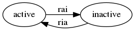

Модуль HeadHunter
Table of Contents
- 1. Цель
- 2. Что это такое?
- 3. Сценарии использования
- 3.1. Сценарии использования соискателя
- 3.1.1. Составление резюме
- 3.1.2. Опубликование резюме
- 3.1.3. Автоматический поиск вакансий, создание правил отбора вакансий и автоматических действий над ними
- 3.1.4. Поиск и просмотр вакансий, отсев, ранжирование, внесение заметок по вакансиям
- 3.1.5. Нахождение вакансии в момент телефонного звонка
- 3.1.6. Рассылка откликов
- 3.1.7. Достижение договоренности о собеседовании
- 3.1.8. Выполнение тестовых заданий
- 3.1.9. Собеседование с работодателем и отзывы о собеседованиях
- 3.1.10. Выбор лучшего предложения
- 3.1.11. Вакансия становится неактуальной
- 3.1.12. Отзывы соискателей о компаниях и вакансиях
- 3.1.13. Маршрут
- 3.1.14. Побочные сценарии соискателя
- 3.2. Сценарии использования работодателя
- 3.2.1. Составление вакансий
- 3.2.2. Опубликование вакансий
- 3.2.3. Автоматический поиск резюме, создание правил отбора резюме и автоматических действий над ними
- 3.2.4. Ручной поиск и просмотр резюме, отсев, ранжирование, внесение заметок по соискателям
- 3.2.5. Рассылка приглашений
- 3.2.6. Телефонные интервью
- 3.2.7. Заполнение анкеты
- 3.2.8. Собеседование с соискателем
- 3.2.9. Предложение соискателю тестовых заданий
- 3.2.10. Проверка тестовых заданий
- 3.2.11. Анализ статистических отчетов
- 3.3. Хотелки (набор несогласованных идей, чтобы не забыть)
- 3.4. TODO TODO
- 3.1. Сценарии использования соискателя
- 4. Как это работает?
- 4.1. Источник вакансий
- 4.2. Фабрика генераторов вакансий
- 4.3. Правила обработки тизеров и вакансий
- 4.4. Процессор правил (
process) - 4.5. Декоратор для process-teaser (
process-teaser :around) - 4.6. Получение и обработка вакансий правилами (
run) - 4.7. Сохранение вакансии и ее структура данных (
save-vacancy) - 4.8. Состояния вакансий
- 4.9. Печать вакансий (
show-vacancy) - 4.10. START Жизненный цикл резюме
- 4.11. TODO Синхронизация резюме на hh и в хранилище
- 4.12. Создание резюме под вакасию по шаблону
- 4.13. TODO Сущность резюме соискателя (
entity:resume) - 4.14. TODO Вспомогательные сущности резюме
- 4.15. Отправка отклика (
send-respond) - 4.16. Фабрика генераторов отзывов (
response-factory) - 4.17. Получение и обработка отзывов (
run-response)
- 5. Interface
- 6. Тесты
- 7. Точки входа
- 8. Сборка
- 8.1. Макроутилиты
- 8.2. Фунциональные утилиты
- 8.2.1. Point-free определения:
- 8.2.2. Flip, карринг, композиции:
- 8.2.3. Свёртки и "развёртки":
- 8.2.4. Отображения и фильтрации:
- 8.2.5. Функции для списков на основе карринга и свёрток:
- 8.2.6. Функции для чисел:
- 8.2.7. И для булевых чисел:
- 8.2.8. Многие другие функции представляются свёртками, например:
- 8.2.9. Свёртки для деревьев:
- 8.3. Другие утилиты
- 8.4. Утилиты
- 8.5. Глобальные определения
- 8.6. Сущности и автоматы
- 9. Lisp
1 Цель
Мы все ищем работу на профильных сайтах время от времени. Иногда на это уходит значительное время, т.к. мы выполняем множество рутинных действий, которых могли бы избежать. Попробуем автоматизировать этот процесс, так чтобы работа, по-возможности, искалась сама, без непосредственного участия соискателя.
2 Что это такое?
Это средство автоматизации процесса поиска работы, выполненное в форме экспертной системы. Оно умеет обучаться при взаимодействия со своим пользователем. Обучение производится с помощью внесения пользователем правил обработки входящего потока вакансий.
3 Сценарии использования
Если рассматривать поиск работы как бизнес-процесс, то в этом процессе я выступаю как
соискатель. А если с точки зрения data-flow - то обьектом манипуляций является вакансия,
которая (с моей точки зрения, как соискателя) может находится в нескольких состояниях:
- неотсортирована
- неинтересная
- интересная
- отправлен отзыв (мной)
- отзыв просмотрен (работодателем)
- работодатель отказал
- работодатель пригласил на интервью
- прохождение интервью (там возможны тестовые задания)
- получено предложение работы
Состояния образуют ориентированный граф, а множество вакансий в состояниях после "отзыв отправлен" - фронт работ, в котором понятно что нужно делать по каждой вакансии. Ну а интерфейс обеспечивает доступ к выборкам вакансий и действиям над ними.
Если по графу понятно какие возможны действия по каждой вакансии, то часть их можно автоматизировать - например, т.н. "преселект", когда мы выкидываем вакансии, которые соискателю заведомо неинтересны (например: отбросить вакансии с неподходящими требованиями или вакансии без указания зарплаты). Или можно анализировать текст вакансии, и если стек технологий, оплата и месторасположение устраивает - автоматически отправлять отзыв.
Вакансии, как правило, пишутся довольно формальным языком, в них всегда есть раздел "Требования", "Будет плюсом", "Условия" и т.п. поэтому это не так сложно. От пользователя-соискателя в этом случае требуется только узнать о том, что его пригласили на собеседование, ну и пройти его, конечно.
Работу работодателя можно автоматизировать похожим образом. С той лишь разницей, что работодатель осуществляет операции над отзывом соискателя, к которому прикреплено резюме и другие личные данные соискателя. Этот отзыв может находится в таких состояниях:
- непросмотрен
- неинтересный
- интересный
- отправлено приглашение
- приглашение просмотрено
- отправлено тестовое задание
- получено решение тестового задания, но оно еще не проверено
- назначено собеседование
- сделано предложение (с такими-то условиями)
- предложение принято (вакансия закрыта)
- предложение не принято
Исходя из всего этого, мы можем написать в первую очередь поддержку сценариев использования для соискателя, а потом и работодателя:
3.1 Сценарии использования соискателя
С точки зрения соискателя процесс найма выглядит так:
- Этап составления резюме
- Этап опубликования резюме
- Этап поиска
- Поиск и просмотр вакансий, отсев, ранжирование
- Рассылка откликов
- Этап телефонных переговоров
- Получение звонков, обсуждение деталей по телефону
- Договоренность о еще одном звонке
- Тестовое задание на почту
- Договоренность о skype-интервью
- Этап удаленного тестирования
- Skype-интервью
- Ожидание тестового задания
- Выполнение тестового задания
- Этап очного собеседования
- Приглашение на интервью
- Интервью
- Этап отбора предложений
- Получение предложений
- Выбор предложения
3.1.1 Составление резюме
Пользователь просто размещает свое резюме. На самом деле - несколько резюме, так как наиболее продвинутые пользователи пишут резюме под вакансию, а не рассылают одно и то же резюме всем подряд.
Необходимо дать возможность прикреплять резюме к вакансиям и назначать правила отправки для конкретного резюме. Т.е. к резюме прикрепляются правила обработки вакансий, которые решают, будет ли оно отправлено работодателю.
Необходимо иметь возможность персонализировать резюме под вакансию. Простейший пример - адаптировать желаемую оплату под максимальную, которую предлагает вакансия.
3.1.2 Опубликование резюме
Автоматическое на всех необходимых сайтах. Здесь надо учитывать правила опубликования и обрабатывать возможные возникающие ошибки.
3.1.3 Автоматический поиск вакансий, создание правил отбора вакансий и автоматических действий над ними
Внутри вакансий необходимо искать по критериям, которые пользователь может задавать сам, в форме правил, выполняющих действия над вакансией, если она совпадает с правилом.
Вакансии полезно упорядочить по зарплате
Мне бы хотелось сразу получать представление, насколько свежая вакансия. Наиболее наглядно это делает интерактивный график.
Мне было бы интересно, сколько интервью было проведено и запланировано по вакансии - эту информацию можно узнать из анализа активности по ней других пользователей.
Мне было бы интересно, как менялась вакансия с момента ее размещения компанией. К примеру можно находить и отслеживать похожие вакансии по расстоянию Левенштейна. Динамика изменения зарплатного предложения может многое сказать об отношении к вакансии.
3.1.4 Поиск и просмотр вакансий, отсев, ранжирование, внесение заметок по вакансиям
Когда я читаю вакансию, я бы хотел, чтобы она переходила в статус "просмотрено" (и к ней добавлялась дата просмотра)
Читая вакансию, мне бы хотелось устанавливать ей приоритет и вносить заметки, чтобы отслеживать такие моменты, как например: необходимость позвонить позже, или все, что мне сказал hr по телефону.
Если я отправляю отзыв на вакансию или звоню по телефону - я бы хотел, чтобы эти действия сопровождались временем и изменением статуса, чтобы потом можно было отследить историю взаимодействия с HR.
При этом, мне хотелось бы видеть на дашборде те вакансии, с которыми я договорился о встрече и те, по которым нет движения долгое время, чтобы ничего не забывалось.
Я хочу получать напоминания о моем следующем шаге в отношении тех вакансий, которые мне интересны.
Мне бы хотелось видеть на каком я этапе в тех вакансиях, которые меня интересуют.
3.1.5 Нахождение вакансии в момент телефонного звонка
После отправки отклика звонит работодатель и приглашает на интервью. В этот момент я хочу найти эту вакансию, и в зависимости от того до чего мы договорились с работодателем выставить ей некоторое состояние или внести заметки, поставить тег, и.т.п.
3.1.6 Рассылка откликов
Соискатель пишет шаблоны сопроводительных писем, которые будут отправлены вместе с отзывом на вакансию
3.1.7 Достижение договоренности о собеседовании
В ряде случаев информация о собеседовании может прийти на email пользователя. Это позволяет вообще исключить человека из этого сценария - единственное что необходимо - уведомить о созданной встрече, добавив ее в календарь.
3.1.8 Выполнение тестовых заданий
Обычно работодатель не слишком заморачивается тестовыми заданиями. Пользователь, выполнивший тестовое задание, может сохранить его, привязав к вакансии. За это ему можно начислять баллы или иным способом поощрять.
Таким образом с вакансиями можно связывать тестовые задания и их решения, что упрощает прохождение собеседований. За такую информацию пользователь может платить (балламы или иным способом)
3.1.9 Собеседование с работодателем и отзывы о собеседованиях
После прохождения собеседования пользователь мог бы оставлять отзыв. Другие пользователи могли бы оценивать качество отзыва
3.1.10 Выбор лучшего предложения
Пользователи могли бы использовать интерфейсы к методам многофакторного анализа (симплекс метод, дерево принятия решений) чтобы определить лучшее предложение.
3.1.11 Вакансия становится неактуальной
Вакансия может стать неактуальной если работодатель снимет ее, но работодатели могут забывать это сделать, поэтому можно предусмотреть тайм-аут.
Вакансия также может сниматься по достижению некоторого кол-ва голосов соискателей, которые дозвонились но им сказали, что вакансия уже неактуальна.
3.1.12 Отзывы соискателей о компаниях и вакансиях
Можно сэкономить кучу времени и денег просто не нанимаясь в те компании, в которых "все плохо". В этом плане соискатели могут помочь друг другу. Возможно и компании тоже будут прислушиваться к такому фидбеку.
3.1.13 Маршрут
Иногда я хочу спланировать маршрут поездки по собеседованиям. Это сервис с картами, которые можно сделать позже.
Полезно распечтывать карты, соответствующие вакансиям
3.1.14 Побочные сценарии соискателя
Вакансии на сайтах размещаются компаниями и привязываются к ним. Мне, как соискателю,
интересно посмотреть какие вакансии размещала ранее конкретная компания, какие она
размещает теперь, как изменялись зарплаты - и тому подобная аналитическая информация.
Я также хочу чтобы система проходила по вакансиям и в зависимости от сочетания условий выполняла какие-то действия
- напоминание мне о собеседованиях, звонках (календарь)
- автоматическое ранжирование вакансий (по перспективам найма, зарплате и.т.п)
Система может анализировать компании с т.з. выставляемых вакансий и формирует профиль компании. По выставляемым вакансиям можно сделать интересные выводы - например когда у компании внезапно появляются вакансии на одного сеньера и нескольких линейных разработчиков - это напоминает открытие нового отдела/проекта.
Система может классифицировать сохраненные вакансии по формальным признакам, таким как:
- новые вакансии
- измененные
- закрытые (о закрытости вакансии можно судить по ряду критериев)
- особенно интересные
- необычные
В случае изменений или появления новых интересующих пользователя вакансий можно пользователю отправляеть уведомление (через систему очередей сообщений и по email).
Исходя из анализа DESCRIPTION можно определить требуемую технологию и требуемую степень владения ею.
Еще можно сделать:
Предоставление рекомендаций и отбор вакансий на основе модифицируемых правил и фактах предметной области, таких как "работодатель - компания по разработке ПО" или "ИТ-поддержка не является приоритетом компании"
Предсказание поведения (путей достижения целей) компании (в процессе найма и вне его) на основе моделей и целей.
Выбор вариантов поведения в ответ на предьявляемые требования (цикл распознавание-действие в продукционной системе). Вплоть до автоматического построния резюме под вакансию из шаблонов.
Построение концептуальных моделей и преобразования в них - выбор стратегии действий и постановка целей.
Выбор способа представления знаний (правила, фреймы, концептуальные графы)
Выбор стратегии поиска
Включение терма из набора технологий в заголовке вакансии - присвоение классификатора (тега)
Правила вывода - сопоставление с профилем
Вычисление различий (дифф) требований вакансии и профильных навыков резюме - подбор или построение оптимального резюме
Интерактивное построение профиля (ответы на вопросы). Необходим видимый прогресс и предварительная классификация предложений
Построение новых правил на основе известных
Когда вакансия переносится в архив - мы должны отслеживать это на стороннем сайте и
реагировать, устанавливая статус archive
Когда мы собираем вакансии, распарсивая их с других сайтов, мы должны отслеживать их состояние на этих сайтах.
3.2 Сценарии использования работодателя
Когда HR-специалист ищет вакансии, он пользуется несколькими путями:
- Личные знакомства
- Рекомендации
- Социальные сети
- vkontakte
- Помощь коллег
- Специализированные сайты
Как правило, HR-специалист менее компетентен в предметной области, чем нанимаемый сотрудник, поэтому для него имеет большой вес мнение рекомендателей и коллег соискателя. Вероятно, рекомендательный сервис был бы очень актуален.
Компании-работодатели выбирают одну из моделей найма, в соответствии со своим бюджетом и задачами:
- Всегда (на любую позицию) нанимать (переманивать) лучших
- Нанимать начинающих в подчинение лучшим
- Нанимать начинающих (конвеерная разработка, большая текучка)
- Нанимать тех, кто понравится лидеру отдела
- Нанимать тех, кто лучше соответствует корпоративной культуре
Для каждой из этих моделей характерны свои необходимые сервисы. К примеру, для модели
"нанимать лучших" совершенно необходимо вести и актуализировать базу этих "лучших", чтобы
вовремя сделать предложение кандидату. О примерах внедрения таких сервисов мне ничего не
известно. Также интересно уточнить у HR-специалистов из разных компаний их методы
работы.
Для HR-специалиста процесс найма выгядит (в общих чертах) так.
- Этап составления вакансий
- Этап опубликования вакансий
- Этап поиска резюме
- По ключевым словам
- По фильтру
- Используя автоподбор
- Этап анализа откликов (неразобранные, подумать, приглашенные, отклоненные)
- Телефонный звонок соискателю (с целью уточнить детали или пригласить)
- Возможно отправка тестового задания
- Получение тестового задания
- Проверка тестового задания
- Скайп-интервью
- Этап собеседования
- Опционально: заполнение анкеты
- Собеседование с HR-специалистом (об условиях)
- Тесты (например: на знание языка, ООП, БД, многопоточность)
- Тестовое задание
- Проверка тестового задания
- Собеседование с тех. спецом, (как правило нач. отдела)
HR-специалист анализирует обратную связь о составляемых им вакансиях - у него есть статистическая информация о кол-ве просмотров вакансий и количестве поступивших откликов. Из этих данных можно, например, сделать вывод, что предложенная зарплата неактуальна на рынке.
Также HR-специалист заинтересован в технической поддержке при решении задач типа:
- Мониторинг резюме (сообщения о обновлении резюме, просмотр старой версии)
- Ведение базы кандидатов (часто в экселе)
HR-специалист заинтересован в том, чтобы иметь возможность построить процесс найма под себя.
3.2.1 Составление вакансий
3.2.2 Опубликование вакансий
3.2.3 Автоматический поиск резюме, создание правил отбора резюме и автоматических действий над ними
3.2.4 Ручной поиск и просмотр резюме, отсев, ранжирование, внесение заметок по соискателям
3.2.5 Рассылка приглашений
3.2.6 Телефонные интервью
3.2.7 Заполнение анкеты
3.2.8 Собеседование с соискателем
3.2.9 Предложение соискателю тестовых заданий
3.2.10 Проверка тестовых заданий
3.2.11 Анализ статистических отчетов
3.3 Хотелки (набор несогласованных идей, чтобы не забыть)
Надо уметь удалять сниппеты и добавлять их в избранное
Есть множество конкурирующих сайтов для поиска работы, информацию с которых можно аггрегировать.
При поиске работы основной сценарий использования - поиск вакансий, и практически все
сайты его предоставляют. Однако мне бы хотелось дополнительно иметь дополнительный
функционал:
- заметки по каждой вакансии
- статусы или теги, такие как:
просмотрено(с датой),отобрано,не-берут-трубку,не-актуально,приглашен-на-интервью,выслали-тестовое-задание,отправил-тестовое-задание,получен-оффер,вакансия-закрытаитп.
Работодатель хочет подтверждения навыков соискателя - для этого и тестовые задания. Надо автоматизировать этот момент - если соискатель заявляет, к примеру, знания С++ - он должен сделать некий тестовый код.
Я бы хотел ранжировать вакансии вручную (по выставленным приоритетам) и автоматически (т.е. скриптом), например в зависимости от зарплаты или удаленности.
Я бы хотел иметь возможность планировать маршрут, когда еду на собеседование и иметь календарь, чтобы не пропустить встречу.
Я бы хотел иметь версии вакансий, чтобы отслеживать их изменения, например изменения зарплаты до и после моего интервью - это позволит анализировать рынок и получать больше информации.
Мне также интересно составлять профили компаний и отслеживать как меняется набор сотрудников которых они ищут - это поможет планировать долгосрочную стратегию. Особенно в этом плане интересны лидеры рынка - Яндекс, Гугл и.т.п.
Я бы хотел иметь возможность пообщаться с теми кто работал или работает в интересующей меня компании, иметь подмножество функционала социальных сетей или интеграцию с ними
Иногда мне приятно работать с уже знакомыми людьми, так что в целом я бы не отказался
создавать на таком сайте что-то типа т.н. рабочих коллективов, чтобы наниматься сразу
командой. Возможно работодателям такой вариант найма тоже будет интересен.
В ряде случаев компании меняют свои вакансии, некоторые делают это методом удаления предыдущей и создания новой. Мне как соискателю хотелось бы не обнаруживать уже просмотренную и возможно собеседованную вакансию в новых. Поэтому хотелось бы предусмотреть механизм, который связывает очень похожие вакансии друг с другом.
Иногда вакансии меняются, или в них меняются существенные условия. Например, две недели назад, когда я смотрел вакансию из предыдущей сборки меня не устроила зарпалата, а сегодня вакансия стала интереснее. Я хочу отслеживать что вакансия поменялась.
Таким образом при создании вакансии мы должны проверять, может она уже есть в базе и тогда указывать, что эта вакансия включена в несколько сборок (требует таблицы связи)
Несколько вакансий могут быть от одной компании. В этом случае мне бы хотелось отслеживать это в профиле компании, кроме того интересна аналитика по этой компании за определенный период времени.
С социальной точки зрения интересно получать отзывы о компании от ее работников, в том числе и уволенных.
Действия по вакансии: звонки, скайп-интервью, собеседования
В эту таблицу заносим что сделано по каждой вакансии, которая находится в разработке
Теги вакансий Помогают ориентироваться, когда вакансий много.
Важно: Для обеспечения социальных взаимодействий нужно предусмотреть, чтобы вакансию можно было "передать", т.е. у нее минимум должен быть URI.
Если пользователь просмотрел вакансию, но пока не хочет отправлять отзыв - он может
добавить вакансию в закладки - в этом случае ее статус меняется на favorited
Из favorited мы снова можем отправить отзыв.
Из favorited пользователь может вернуть вакансию обратно в interesting или hidden.
Из hidden пользователь может вернуть вакансию в interesting.
Если по вакансии позвонили, пользователю обычно нужно ее быстро найти. Нужна форма поиска
по вакансиям в статусе responded - пользователь ищет обычно по названию фирмы.
После звонка вакансия может быть выкинута или переведена из responded в статус "был
телефонный звонок" - called. Выкидывая вакансию пользователь может выбрать reason - для
них можно будет потом сделать отдельную таблицу но пока просто пишем в поле
вакансии. Если в результате телефонного звонка была достигнута договоренность о
собеседовании - пользователь переводит вакансию в состояние "пригласили на интервью" -
wait-interview и заносит в вакансию данные о том, куда и во сколько ехать. Если по
телефону рекрутер предложил тестовое задание - статус - "ожидание тестового задания" -
wait-test. Если договорились о интервью по скайпу - "ожидание скайп-интервью" -
wait-skype-interview.
Получив тестовое задание пользователь переводит вакансию из статуса wait-test в
"выполнение тестового задания" run-test, а оттуда либо в test-cancel либо в
test-sended. Либо выкидывает.
Пользователи иногда забивают на интервью (случаются накладки) - в этом случае рекрутер часто передоговаривается на другое время. Делать петли в графе значит излишне усложнять его, наверно пусть можно будет просто изменить данные о времени интервью.
После интервью или скайп-интервью от вакансии можно либо отказаться (refuse-employer,
refuse-applicant) либо перевести в статус "ожидание результата" - wait-result. Нужно
включать таймер, по истечении которого напоминать пользователю позвонить рекрутеру и
узнать, как дела.
Иногда после скайп-интервью назначают очное интервью. Также бывает прямо на интервью
предлагают оффер - offer и соискатель берет время на подумать.
Из "ожидания результата" можно перескочить в "предложен оффер", "отказ работодателя" -
refuse-employer или "отказ соискателя" - refuse-аpplicant.
История статусов нужна, в нее нужно заносить время когда изменяется статус и возможно примечания по изменению. Будет красиво, если в интерфейсе будет отображаться полный граф статусов и текущее положение вакансии в нем.
3.4 TODO TODO
- Было бы неплохо делать diff-ы между сборами вакансий и отзывов
- Нужен анализ ошибок hh при send-respond (например: вакансия в архиве)
- Нужна привязка к роботу, который по таймеру вынимает данные из hh
- Нужна привязка работы к юзеру
- Поправить неправильное определение emp-name при анализе тизеров
- Подключать несколько hh-аккаунтов к одному профилю пользователя
- Создание и удаление правил
- Предлагать правки статей через гитхаб
4 Как это работает?
4.1 Источник вакансий
Пусть у нас есть источник вакансий, например, hh.ru. На нем можно сформулировать запрос и получить выборку в виде списка тизеров вакансий, каждый из которых ведет на полное описание вакансии.

Figure 1: Это источник вакансий
4.2 Фабрика генераторов вакансий
Пусть у нас есть фабрика генераторов функций назовем его factory, которая принимает
источник вакансий и параметры запроса (например: профессиональную область, специализацию,
город) и возвращает функцию-генератор в замыкании.

Figure 2: Фабрика генераторов вакансий
Эта функция-генератор при каждом своем вызове вернет одну вакансию или ложь если все
вакансии кончились или сервер вернул 404-ую ошибку.

Figure 3: Функция-генератор, произведенная фабрикой
Внутри себя эта функция по мере необходимости загружает и разбирает сначала тизеры
вакансий, а потом и сами вакансии, при этом процесс превращения тизера в вакансию
(process-teaser) вынесен из замыкания, т.к. не зависит от замкнутых переменных.
(in-package #:moto) <<make_hh_url>> <<hh_get_page>> <<hh_parse_vacancy_teasers>> <<hh_parse_vacancy>> (let ((cookie-jar (make-instance 'drakma:cookie-jar))) ;; ------- эта функция вызывается из get-vacancy, которую возвращает factory (defmethod process-teaser (current-teaser src-account referer) (dbg "process-teaser") (let ((vacancy-page (format nil "http://spb.hh.ru/vacancy/~A" (getf current-teaser :id)))) (multiple-value-bind (vacancy new-cookies ref-url) (hh-get-page vacancy-page cookie-jar src-account referer) (setf cookie-jar new-cookies) (aif (hh-parse-vacancy vacancy) (merge-plists current-teaser it) nil)))) ;; ------- эта функция возвращает get-vacancy, которая является генератором вакансий (defmethod factory ((vac-src (eql 'hh)) src-account city prof-area &optional spec) (dbg "factory") ;; closure (let ((url (make-hh-url city prof-area spec)) (page 0) (teasers nil)) ;; returned function-generator in closure (alexandria:named-lambda get-vacancy () (labels ((load-next-teasers-page () (dbg "load-next-teasers-page (page=~A)" page) (let* ((next-teasers-page-url (format nil url page)) (referer (if (= page 0) "http://spb.hh.ru"(format nil url (- page 1))))) (handler-case (multiple-value-bind (next-teasers-page new-cookies ref-url) (hh-get-page next-teasers-page-url cookie-jar src-account referer) (setf cookie-jar new-cookies) (setf teasers (hh-parse-vacancy-teasers next-teasers-page)) (incf page) (when (equal 0 (length teasers)) (dbg "~~ FIN(0)") (return-from get-vacancy 'nil))) (hh-404-error (err) (progn (dbg "~~ FIN(404) : ~A" (url err)) (return-from get-vacancy 'nil)))) )) (get-teaser () ;; (dbg "get-teaser") (when (equal 0 (length teasers)) (load-next-teasers-page)) (prog1 (car teasers) (setf teasers (cdr teasers))))) (tagbody get-new-teaser (let ((current-vacancy (process-teaser (get-teaser) src-account (format nil url page)))) (if (null current-vacancy) (go get-new-teaser) (return-from get-vacancy current-vacancy))))))))) ;; (let ((gen (factory 'hh "spb" "Информационные технологии, интернет, телеком" ;; "Программирование, Разработка"))) ;; (loop :for i :from 1 :to 100 :do ;; ;; (dbg "~A" i) ;; (let ((vacancy (funcall gen))) ;; (when (null vacancy) ;; (return))))))
Для работы этому генератору нужно уметь:
- Собирать URL страницы, где лежат тизеры (краткие описания) вакансий из параметов запроса
(
make-hh-url) - Скачивать HTML-страницы (
hh-get-page) - Разбирать тизеры из html-кода (
hh-parse-vacancy-teasers) - Обрабатывать разобранные тизеры (
hh-parse-vacancy), чтобы получить по ним вакансии.
4.2.1 Построение URL-ов для скачивания тизеров (make-hh-url)
Тизеры вакансий размещаются постранично, по 20 штук на странице, и мы можем собрать все страницы, если будем получать страницу за страницей, пока не получим страницу, на которой вакансий нет.
В качестве GET-параметров запросы указываются специализации и город. Значения cluster
и area не меняются. Поэтому, единственная сложность построения URL - это правильно
сформировать специализации.
(in-package #:moto) <<!make_specialization_hh_url_string>> (defun make-hh-url (city prof-area &optional specs) "http://spb.hh.ru/search/vacancy?text=&specialization=1&area=2&items_on_page=100&no_magic=true&page=~A") ;; test ;; (make-hh-url "spb" "Информационные технологии, интернет, телеком" "Программирование, Разработка")
- TODO Построение специализаций
Специализации задаются в формате "1.221", где цифра слева от точки представляет профессиональное направление, а справа - собственно специализацию. В интерфейсе допустимо выбрать одно направление и несколько специализаций в нем, при этом для каждой специализации формируется параметр GET-запроса. Допустимо выбрать только направление, без специализаций.
По этой причине мы должны иметь дерево специализаций и транслятор названий специализаций в их номера.
(in-package #:moto) <<prof_areas>> (defun make-specialization-hh-url-string (prof-area &optional specs) (let ((specialization (assoc prof-area *prof-areas* :test #'equal))) (when (null specialization) (err 'specialization-not-found)) (when (stringp specs) (setf specs (list specs))) (if (null specs) (concatenate 'string "&specialization=" (cadr specialization)) (format nil "~{&~A~}" (loop :for spec :in specs :collect (let ((spec (cdr (assoc spec (caddr specialization) :test #'equal)))) (when (null spec) (err 'spec-not-found)) (concatenate 'string "specialization=" (cadr specialization) "." spec))))))) ;; test ;; (make-specialization-hh-url-string "Информационные технологии, интернет, телеком") ;; (make-specialization-hh-url-string "Информационные технологии, интернет, телеком" '("Программирование, Разработка")) ;; (make-specialization-hh-url-string "Информационные технологии, интернет, телеком" "Программирование, Разработка") ;; (make-specialization-hh-url-string "Информационные технологии, интернет, телеком" ;; '("Программирование, Разработка" ;; "Web инженер" ;; "Web мастер" ;; "Стартапы" ;; "Управление проектами" ;; "Электронная коммерция"))
Дерево специализаций будем хранить в глобальном alist-е, т.к. оно никогда не меняется. Я не стал заполнять его целиком, ограничившись только профессиональной областью "ИТ". По необходимости заполню остальное.
(in-package #:moto) (defparameter *prof-areas* '(("Все профессиональные области" . ("")) ("Информационные технологии, интернет, телеком" . ("1" (("CRM системы" . "536") ("CTO, CIO, Директор по IT" . "3") ("Web инженер" . "9") ("Web мастер" . "10") ("Администратор баз данных" . "420") ("Аналитик" . "25") ("Арт-директор" . "30") ("Банковское ПО" . "395") ("Игровое ПО" . "475") ("Инженер" . "82") ("Интернет" . "89") ("Компьютерная безопасность" . "110") ("Консалтинг, Аутсорсинг" . "113") ("Контент" . "116") ("Маркетинг" . "137") ("Мультимедиа" . "161") ("Начальный уровень, Мало опыта" . "172") ("Оптимизация сайта (SEO)" . "400") ("Передача данных и доступ в интернет" . "203") ("Поддержка, Helpdesk" . "211") ("Программирование, Разработка" . "221") ("Продажи" . "225") ("Продюсер" . "232") ("Развитие бизнеса" . "246") ("Сетевые технологии" . "270") ("Системная интеграция" . "272") ("Системный администратор" . "273") ("Системы автоматизированного проектирования" . "274") ("Системы управления предприятием (ERP)" . "50") ("Сотовые, Беспроводные технологии" . "277") ("Стартапы" . "474") ("Телекоммуникации" . "295") ("Тестирование" . "117") ("Технический писатель" . "296") ("Управление проектами" . "327") ("Электронная коммерция" . "359")))) ("Бухгалтерия, управленческий учет, финансы предприятия" . ("2")) ("Маркетинг, реклама, PR" . ("3")) ("Административный персонал" . ("4")) ("Банки, инвестиции, лизинг" . ("5")) ("Управление персоналом, тренинги" . ("6")) ("Автомобильный бизнес" . ("7")) ("Безопасность" . ("8")) ("Высший менеджмент" . ("9")) ("Добыча сырья" . ("10")) ("Искусство, развлечения, масс-медиа" . ("11")) ("Консультирование" . ("12")) ("Медицина, фармацевтика" . ("13")) ("Наука, образование" . ("14")) ("Государственная служба, некоммерческие организации" . ("16")) ("Продажи" . ("17")) ("Производство" . ("18")) ("Страхование" . ("19")) ("Строительство, недвижимость" . ("20")) ("Транспорт, логистика" . ("21")) ("Туризм, гостиницы, рестораны" . ("22")) ("Юристы" . ("23")) ("Спортивные клубы, фитнес, салоны красоты" . ("24")) ("Инсталляция и сервис" . ("25")) ("Закупки" . ("26")) ("Начало карьеры, студенты" . ("15")) ("Домашний персонал" . ("27")) ("Рабочий персонал" . ("29"))))
4.2.2 Получение страниц (hh-get-page)
Так как мы хотим получать информацию, которая находится за авторизацией, нам нужно
обеспечить прозрачность авторизации, если ее в данный момент нет. hh_recovery_login решает эту
проблему.
Вот так мы можем получать страницы, к примеру те, на который находятся тизеры:
- Получаем страницу <-——————————————+
- Проверяем, залогинены ли мы |
- Если залогинены - отдаем страницу |
- Если не залогинены - логинимся и получаем страницу снова.—+
- Если во время логина произошла ошибка - сигнализируем условие.
Есть также одна особенность (типа баг) в результате которой drakma неправильно
воспринимает сформированные в get-запросе параметры и говорит что URI malformed. Мы
обходим это с помощью глобального флага *need-start*, что является временным
решением.
Если сервер возвращает 404 ошибку, функция сигнализирует condition hh-404-error.
(in-package #:moto) <<hh_recovery_login>> (define-condition hh-404-error (error) ((url :initarg :url :reader url) (text :initarg :text :reader text))) (defparameter *need-start* t) (defun hh-get-page (url cookie-jar src-account referer) "Получение страницы" ;; Если ни одного запроса еще не было - сделаем запрос к главной и снимем флаг (when *need-start* (drakma:http-request "http://spb.hh.ru/" :user-agent *user-agent* :redirect 10 :force-binary t :cookie-jar cookie-jar) (setf referer "http://spb.hh.ru/") (setf *need-start* nil)) ;; Делаем основной запрос, по урлу из параметров, сохраняя результат в response ;; и обновляя cookie-jar (let ((response "") (repeat-cnt 0)) (tagbody repeat (multiple-value-bind (body-or-stream status-code headers uri stream must-close reason-phrase) (drakma:http-request url :user-agent *user-agent* :force-binary t :cookie-jar cookie-jar :redirect 10 :additional-headers (append *additional-headers* `(("Referer" . ,referer)))) (dbg "-- ~A : ~A" status-code url) (when (equal 404 status-code) (error 'hh-404-error :url url :text (flexi-streams:octets-to-string body-or-stream :external-format :utf-8))) (setf response (flexi-streams:octets-to-string body-or-stream :external-format :utf-8))) ;; Если мы не залогинены: (unless (is-logged response) ;; Проверяем, не превышено ли кол-во попыток восстановления (when (> repeat-cnt 3) ;; Если их больше трех - сигнализируем ошибку (err "max recovery-login try")) ;; Пытаемся восстановить сессию (multiple-value-bind (recovery-html recovery-cookie-jar) (recovery-login src-account) (setf response recovery-html) (setf cookie-jar recovery-cookie-jar) (setf referer "https://spb.hh.ru/account/login")) ;; Увеличиваем счетчик попыток (incf repeat-cnt) ;; Пробуем загрузить страницу снова (go repeat))) ;; Возвращаем значения (values ;; (html5-parser:node-to-xmls (html5-parser:parse-html5-fragment response)) response cookie-jar url))) ;; (hh-get-page "http://spb.hh.ru/applicant/negotiations?wed=1" ;; (make-instance 'drakma:cookie-jar) ;; "http://spb.hh.ru/")
- Логин на источник (
recovery-login)Прежде чем мы получим возможность забирать авторизованную информацию с нашего источника, нам нужно иметь способ залогиниться на него. В дополнение к этому мы должны отслеживать момент потери авторизованной сесии и в каждый конкретный момент определять, залогинены ли мы. Обычно это можно определить по наличию формы для логина на любой загружаемой странице.
Мы хотим в случае обрыва сессии перелогиниваться прозрачно для всего остального кода, поэтому процедура логина должна вызвываться по необходимости из процедуры загрузки любой страницы. Также важно обрабатывать ошибки, которые могут произойти при логине, например, если неверен пароль.
Для всех этих целей мы передаем в
recovery-loginобъектsrc-account, который содержит все необходимое, чтобы восстановить сессию: логин, пароль и ФИО пользователя, по которому мы определяем, что успешно залогинились.recovery-loginвторым возвращаемым значением возвращает новый cookie-jar, который нужно использовать для работы внутри сессии.(in-package #:moto) <<data_for_account>> (defparameter *user-agent* "Mozilla/5.0 (X11; Ubuntu; Linux x86_64; rv:35.0) Gecko/20100101 Firefox/35.0") (defparameter *additional-headers* `(("Accept" . "text/html,application/xhtml+xml,application/xml;q=0.9,*/*;q=0.8") ("Accept-Language" . "ru-RU,ru;q=0.8,en-US;q=0.5,en;q=0.3") ("Accept-Charset" . "utf-8"))) (defparameter *cookies* nil) ;; deprecated, use cookie-jar in closure (defun is-logged (html) "Проверяем наличие в html блока 'Войти'" (dbg ":: is-logged") (not (contains html "data-qa=\"mainmenu_loginForm\">Войти</div>"))) (defun get-cookies-alist (cookie-jar) "Получаем alist с печеньками из cookie-jar" (loop :for cookie :in (drakma:cookie-jar-cookies cookie-jar) :append (list (cons (drakma:cookie-name cookie) (drakma:cookie-value cookie))))) (defun recovery-login (src-account) ;; Сначала заходим на главную как будто первый раз, без печенек (setf drakma:*header-stream* nil) (let* ((start-uri "http://spb.hh.ru/") (cookie-jar (make-instance 'drakma:cookie-jar)) (additional-headers *additional-headers*) (response (drakma:http-request start-uri :user-agent *user-agent* :additional-headers additional-headers :force-binary t :cookie-jar cookie-jar :redirect 10 )) (tree ;; (html5-parser:node-to-xmls ;; !=! (html5-parser:parse-html5-fragment (flexi-streams:octets-to-string response :external-format :utf-8) :dom :xmls ;; ) ))) ;; Теперь попробуем использовать печеньки для логина ;; GMT=3 ;; _xsrf= ;; hhrole=anonymous ;; hhtoken= ;; hhuid= ;; regions=2 ;; unique_banner_user= ;; И заходим с вот-таким гет-запросом: ;; username=avenger-f@ya.ru ;; password=jGwPswRAfU6sKEhVXX ;; backurl=http://spb.hh.ru/ ;; remember=yes ;; action="Войти" ;; _xsrf= ;; (setf drakma:*header-stream* *standard-output*) (let* ((post-parameters `(("username" . ,(src_login src-account)) ("password" . ,(src_password src-account)) ("backUrl" . "http://spb.hh.ru/") ("remember" . "yes") ("action" . "%D0%92%D0%BE%D0%B9%D1%82%D0%B8") ("_xsrf" . ,(cdr (assoc "_xsrf" (get-cookies-alist cookie-jar) :test #'equal))))) (xsrf (cdr (assoc "_xsrf" (get-cookies-alist cookie-jar) :test #'equal))) (cookie-jar-2 (make-instance 'drakma:cookie-jar :cookies (append (list (make-instance 'drakma:cookie :name "GMT" :value "3" :domain "spb.hh.ru") (make-instance 'drakma:cookie :name "_xsrf" :value xsrf :domain "spb.hh.ru")) (remove-if #'(lambda (x) (equal "crypted_id" (drakma:cookie-name x))) (drakma:cookie-jar-cookies cookie-jar))))) (response-2 (drakma:http-request "https://spb.hh.ru/account/login" :user-agent *user-agent* :method :post :parameters post-parameters :additional-headers (append *additional-headers* `(("Referer" . ,start-uri))) :cookie-jar cookie-jar-2 :force-binary t :redirect 10)) (html (flexi-streams:octets-to-string response-2 :external-format :utf-8))) (when (contains html "Неправильные имя и/или пароль - попробуйте, пожалуйста, снова.") (err "login failed")) (when (contains html "Что-то пошло не так") (err "login error")) (when (contains html (src_fio src-account)) (return-from recovery-login (values ;; (html5-parser:node-to-xmls (html5-parser:parse-html5-fragment html)) html cookie-jar-2))) (err "login exception"))))
- Аккаунты на источнике вакансий
Для того чтобы иметь возможность работать в нескольких одновременных сессиях внутри одного потока выполнения мы осуществляем поддержку сессий следующим образом: Все вызовы получения страниц (
hh-get-page) работают таким образом, как будто считают себя по умолчанию залогиненными в сессию, для этого им передается параметр cookie-jar. В случае, если по каким-то причинам это оказалось не так - сессия восстанавливается вызовомrecovery-login, который получает авторизационную информацияю из объектаsrc-account, который также протягивается через всю цепочку:factory->get-vacancy::closure->hh-get-page->recovery-login. Возвращаемые изrecovery-loginкуки попадают в замыкание и в дальнейшем используются для работы в сессии.Таким образом можно внутри одного потока выполения иметь несколько замыканий, каждое из которых работает в своей сессии. Они могут выполнять разнообразные задачи - сбор вакансий, отзывыв, опубликование резюме и.т.п. Для источника вакансий это будет выглядеть как несколько пользователей, работающих с одного адреса.
Table 1: Данные таблицы аккаунтов field name field type note id serial идентификатор userid integer идентификатор пользователя, владеющего логином srcsource varchar идентификатор источника ("hh" - для headhunter.ru) srclogin varchar логин пользователя на источнике srcpassword varchar пароль пользователя на источнике srcfio varchar ФИО пользователя, чтобы определить что вход в профиль успешен Аккаунты могут быть активные и неактивные. С неактивными аккаунтами никаких действий (сбор вакансий, проверка отзывов) не производится.
Если трижды не удалось залогиниться на аккаунте, он переводится в состояние
wrongпосле чего требуется ручное устранение ошибки.Table 2: Состояния конечного автомата аккаунта action from to account-activation active inactive account-deactivation inactive active account-login active logged account-logout logged active account-wrong active wrong Теперь надо создать хотя бы один логин
(in-package #:moto) (defparameter *hh_account* (make-srcaccount :user_id 1 :src_source "hh" :src_login "avenger-f@yandex.ru" :src_password "jGwPswRAfU6sKEhVXX" :src_fio "Михаил Михайлович Глухов" :state ":ACTIVE"))
- Аккаунты на источнике вакансий
4.2.3 Разбор тизеров вакансий (hh-parse-vacancy-teasers)
Чтобы получить вакансии со страниц поисковой выдачи - воспользуемся парсером,
который переведет полученный html в более удобное лисп-дерево (html-to-tree)
Используя сопоставление с образцом, которое мы определим ниже, внутри подраздела Maptree-transform, мы раз за разом преобразуем это дерево до тех пор, пока там не остануться только интересующие нас данные:
- название вакансии
- идентификатор (ссылку)
- дата размещения
- название работодателя
- идентификатор работодателя
Технические подробности о трансформации дерева - далее в этом разделе: Трансформация дерева
Если в вакансии указана зарплата, мы также получаем
- Валюту зарплаты (3х-буквенный идентификатор)
- Сумму
- Текстовое выражение, содержащее "от" или "от и до"
Иногда HeadHunter синдицирует вакансии с других платформ, к примеру с CAREER.RU, тогда в вакансии может отсутствовать работодатель.
(in-package #:moto) <<maptree_transform>> <<parse_salary>> (defun html-to-tree (html) ;; (html5-parser:node-to-xmls (html5-parser:parse-html5-fragment html :dom :xmls )) ;; (print ;; (html-to-tree *last-parse-data*)) (defun extract-search-results (tree) (block subtree-extract (mtm (`("div" (("class" "search-result") ("data-qa" "vacancy-serp__results")) ,@rest) (return-from subtree-extract rest)) tree))) (defparameter *detect-garbage* '("premium" "response-trigger" "vacancy-responded" "star" "trigger-button" "response-popup-link" "vacancy-response-popup-script" "emp-logo" "search-result-description" "search-result-description-with-garbage" "search-result-description-empty" "search-result-description-primary" "hrbrand" "noindex" "script" "bloko-icon-phone" "bloko-contact" "bloko-icon-initial")) (defmacro make-detect ((name) &body body) (let ((param (gensym)) (carlast (car (last (car body))))) ;; (awhen (stringp carlast) ;; (setf *detect-garbage* ;; (remove-duplicates (append *detect-garbage* ;; (list carlast)) :test #'string=))) `(defun ,(intern (format nil "DETECT-~A" (string-upcase (symbol-name name)))) (,param) (mtm ,@body ,param)))) (make-detect (date) (`("span" (("class" "b-vacancy-list-date") ("data-qa" "vacancy-serp__vacancy-date")) ,date) (list :date (progn ;; (print date) (if (null date) "" date))))) (make-detect (platform) (`("span" (("class" "vacancy-list-platform") ("data-qa" "vacancy-serp__vacancy_career")) " • " ("span" (("class" "vacancy-list-platform__name")) "CAREER.RU")) (list :platform 'career.ru))) (make-detect (metro) (`("span" (("class" "metro-station")) ("span" (("class" "metro-point") ("style" ,_))) ,metro) (list :metro (aif metro it "")))) (make-detect (address) (`("span" (("class" "searchresult__address") ("data-qa" "vacancy-serp__vacancy-address")) ,city ,@rest) (let ((metro (loop :for item in rest :do (when (and (consp item) (equal :metro (car item))) (return (cadr item)))))) (list :city city :metro (aif metro it ""))))) (make-detect (info) (`("div" (("class" "search-result-item__info")) ,@rest) (loop :for item :in rest :when (consp item) :append item))) (make-detect (emp) (`("div" (("class" "search-result-item__company")) ("a" (("href" ,emp-id) ("class" "link-secondary") ("data-qa" "vacancy-serp__vacancy-employer")) ,emp-name) ,@rest) (list :emp-id (parse-integer (car (last (split-sequence:split-sequence #\/ emp-id))) :junk-allowed t) :emp-name (string-trim '(#\Space #\Tab #\Newline) emp-name)))) (make-detect (emp-anon) (`("div" (("class" "search-result-item__company")) ,@text) (list :emp-anon text))) (make-detect (salary) (`("div" (("class" "b-vacancy-list-salary") ("data-qa" "vacancy-serp__vacancy-compensation")) ("meta" (("itemprop" "salaryCurrency") ("content" ,currency))) ("meta" (("itemprop" "baseSalary") ("content" ,salary))) ,salary-text) (list :currency currency :salary (parse-integer salary) :salary-text salary-text))) (make-detect (interview) (`("a" (("class" "interview-insider__link m-interview-insider__link-searchresult") ("href" ,href) ("data-qa" "vacancy-serp__vacancy-interview-insider")) "Посмотреть интервью о жизни в компании") (list :interview href))) ;; ("a" (("class" "interview-insider__link m-interview-insider__link-searchresult") ;; ("href" ,href) ;; ("data-qa" "vacancy-serp__vacancy-interview-insider")) ;; "Посмотреть интервью о жизни в компании") (make-detect (name) (`("div" (("class" "search-result-item__head")) ("a" (("class" ,(or "search-result-item__name search-result-item__name_standard" "search-result-item__name search-result-item__name_standard_plus" "search-result-item__name search-result-item__name_premium")) ("data-qa" "vacancy-serp__vacancy-title") ("href" ,id) ("target" "_blank")) ,name)) (list :id (parse-integer (car (last (split-sequence:split-sequence #\/ id)))) :name name))) (make-detect (description) (`("div" (("class" "search-result-item__description")) ,@rest) (loop :for item :in rest :when (consp item) :append item))) (make-detect (snippet) (`("div" (("class" "search-result-item__snippet") ("data-qa" "vacancy-serp__vacancy_snippet_requirement")) ,text) (list :snippet text))) (make-detect (premium) (`(("data-qa" "vacancy-serp__vacancy vacancy-serp__vacancy_premium") ("class" "search-result-item search-result-item_premium search-result-item_premium")) "premium")) ;; --->> (make-detect (standart) (`("div" (("data-qa" "vacancy-serp__vacancy") ("class" "search-result-item search-result-item_standard ")) ,@rest) rest)) (make-detect (standart-plus) (`("div" (("data-qa" "vacancy-serp__vacancy") ("class" "search-result-item search-result-item_standard_plus ")) ,@rest) rest)) (make-detect (response-trigger) (`("script" (("data-name" "HH/VacancyResponseTrigger") ("data-params" ""))) "response-trigger")) (make-detect (vacancy-responded) (`("a" (("href" ,_) ("target" "_blank") ("class" ,_) ("data-qa" "vacancy-serp__vacancy_responded")) "Вы откликнулись") "vacancy-responded")) (make-detect (search-result-description) (`(("class" "search-result-description")) "search-result-description")) (make-detect (search-result-description-empty) (`(("class" "search-result-description")) "search-result-description-empty")) (make-detect (search-result-description-non-empty) (`("div" (("class" "search-result-description")) ,@rest) rest)) (make-detect (star) (`("div" (("class" "search-result-description__item")) ("div" (("class" "search-result-item__star")) ,@_)) "star")) (make-detect (trigger-button) (`(("class" "search-result-item__button HH-VacancyResponseTrigger-Button")) "trigger-button")) (make-detect (response-popup-link) (`("div" (("class" "search-result-item__response")) ("a" (("href" ,_) ("class" "bloko-button HH-VacancyResponsePopup-Link") ("data-qa" "vacancy-serp__vacancy_response")) "Откликнуться")) "response-popup-link")) (make-detect (response-popup-script ) (`("script" (("data-name" "HH/VacancyResponsePopup") ("data-params" ,_))) "vacancy-response-popup-script")) (make-detect (emp-logo) (`("div" (("class" "search-result-description__item")) ("a" (("href" ,emp-id) ("data-qa" "vacancy-serp__vacancy-employer-logo") ("class" "search-result-item__company-image-link")) ("img" (("src" ,emp-img) ("alt" ,emp-alt) ("class" "search-result-item__logo"))))) "emp-logo")) (make-detect (search-result-description) (`("div" (("class" "search-result-description__item"))) "search-result-description")) (make-detect (search-result-description-empty) (`("div" (("class" "search-result-description__item")) ,_) "search-result-description-empty")) (make-detect (search-result-description-with-garbage) (`("div" (("class" "search-result-description__item")) ,@rest) "search-result-description-with-garbage")) (make-detect (search-result-description-primary) (`(("class" "search-result-description__item search-result-description__item_primary")) "search-result-description-primary")) (make-detect (hrbrand) (`("a" (("title" "Премия HRBrand") ("href" ,_) ("rel" "nofollow") ("class" ,_) ("data-qa" ,_)) " ") "hrbrand")) (make-detect (vacancy_snippet_responsibility) (`("div" (("class" "search-result-item__snippet") ("data-qa" "vacancy-serp__vacancy_snippet_responsibility")) ,text) (list :snippet_responsibility text))) (make-detect (noindex) (`("div" (("class" "search-result-description__item")) "noindex" "hrbrand" "/noindex") "noindex")) (make-detect (script) (`("script" ,@rest) "script")) (make-detect (bloko-icon-initial) (`("span" (("class" "bloko-icon bloko-icon_done bloko-icon_done-initial-action")) "script") "bloko-icon-initial")) (make-detect (bloko-icon-phone) (`("span" (("class" "bloko-icon bloko-icon_phone"))) "bloko-icon-phone")) (make-detect (bloko-contact) (`("div" (("class" "search-result-item__phone")) ("button" (("class" "bloko-button") ("data-qa" "vacancy-serp__vacancy_contacts")) "script" "bloko-icon-phone" "script" ("div" (("class" "g-hidden HH-VacancyContactsLoader-Content") ("data-attach" "dropdown-content-placeholder"))))) "bloko-contact")) (make-detect (bloko-button-rest) (`(:CITY ,city ,@rest) (append `(:CITY ,city ,(remove-if #'(lambda (x) (or (member x '("div" "trigger-button" "vacancy-response-popup-script" "response-popup-link") :test #'equal) (listp x))) rest))))) (remove-if #'(lambda (x) (or (listp x) (member x '("div" "trigger-button" "vacancy-response-popup-script" "response-popup-link") :test #'equal))) '(:CITY "Санкт-Петербург" :METRO "" :DATE "22 марта" :PLATFORM CAREER.RU ((("class" "search-result-item__phone")) ("button" (("class" "bloko-button") ("data-qa" "vacancy-serp__vacancy_contacts")) ((("class" "g-hidden HH-VacancyContactsLoader-Content") ("data-attach" "dropdown-content-placeholder"))))))) (defun detect-garbage-elts (tree) (mtm (`("a" (("class" _) ("href" _) ("data-qa" "vacancy-serp__vacancy-interview-insider")) "Посмотреть интервью о жизни в компании") 'INTERVIEW) (mtm (`("a" (("href" ,_) ("target" "_blank") ("class" "search-result-item__label search-result-item__label_invited") ("data-qa" "vacancy-serp__vacancy_invited")) "Вы приглашены!") '(:INVITED "invited")) (mtm (`("a" (("href" ,_) ("target" "_blank") ("class" "search-result-item__label search-result-item__label_discard") ("data-qa" "vacancy-serp__vacancy_rejected")) "Вам отказали") '(:DECINE "decine")) (mtm (`("a" (("href" ,_) ("target" "_blank") ("class" "search-result-item__label search-result-item__label_discard") ("data-qa" "vacancy-serp__vacancy_rejected")) "Вам отказали") '(:REJECTED "regected")) (mtm (`("div" (("class" "search-result-item__image")) ,_) ':ITEM-IMAGE) tree)))))) (defparameter *last-parse-data* nil) ;; (print *last-parse-data*) ;; (print ;; (hh-parse-vacancy-teasers *last-parse-data*) ;; ) (defun tree-plist-p (pl) "Returns T if L is a plist (list with alternating keyword elements). " (cond ((null pl) t) ((and (listp pl) (keywordp (car pl)) (cdr pl)) (tree-plist-p (cddr pl))) ((and (listp pl) (listp (car pl))) (and (tree-plist-p (car pl)) (tree-plist-p (cdr pl)))) (t (progn ;; (print pl) nil)))) ;; (untrace tree-plist-p) ;; (tree-plist-p ;; '("div" "premium" "response-trigger" "vacancy-responded" ;; ("star" ;; ("div" "search-result-description-primary" ;; (:ID 12359860 :NAME "ASP.NET MVC Developer") ;; (:SNIPPET_RESPONSIBILITY ("resp" NIL)) ;; (:SNIPPET ;; "Опыт коммерческой разработки на платформе .NET with C# - не менее 2 лет. ASP.NET MVC. HTML, CSS, JavaScript. SQL Server. ") ;; (:EMP-ID 208902 :EMP-NAME "ЗАО Аркадия") ;; (:CITY "Санкт-Петербург" (:METRO "" :DATE "6 апреля"))) ;; "emp-logo" "search-result-description"))) (define-condition malformed-vacancy (error) ((text :initarg :text :reader text))) (defun hh-parse-vacancy-teasers (html) "Получение списка вакансий из html" (dbg "hh-parse-vacancy-teasers") (setf *last-parse-data* html) (->> (html-to-tree html) (extract-search-results) (detect-platform) (detect-date) (detect-metro) (detect-address) (detect-info) (detect-emp) (detect-emp-anon) (detect-salary) (detect-interview) (detect-name) (detect-snippet) (detect-premium) (detect-standart) (detect-standart-plus) (detect-response-trigger) (detect-garbage-elts) (detect-vacancy-responded) (detect-search-result-description) (detect-search-result-description-with-garbage) (detect-star) (detect-trigger-button) (detect-response-popup-link) (detect-response-popup-script) (detect-emp-logo) (detect-search-result-description) (detect-search-result-description-primary) (detect-search-result-description-empty) (detect-hrbrand) (detect-vacancy_snippet_responsibility) (detect-noindex) (detect-script) (detect-bloko-icon-phone) (detect-bloko-icon-initial) (detect-bloko-contact) (detect-search-result-description-non-empty) (detect-bloko-button-rest) ;; filter garbage data (maptree-if #'consp #'(lambda (x) (values (remove-if #'(lambda (x) (when (stringp x) (or (string= x "div") (find x *detect-garbage* :test #'string=) ))) x) #'mapcar))) ;; error if malformed plist (mapcar #'(lambda (x) (if (not (tree-plist-p x)) (progn (dbg "~A" (bprint x)) (error 'malformed-vacancy :text)) x))) ;; linearize for each elt (mapcar #'(lambda (tree) (let ((linearize)) (maptree #'(lambda (x) (setf linearize (append linearize (list x)))) tree) linearize))) ;; parse-salary (mapcar #'parse-salary) )) ;; (print ;; (hh-parse-vacancy-teasers *last-parse-data*)) ;; (let ((temp-cookie-jar (make-instance 'drakma:cookie-jar))) ;; (hh-parse-vacancy-teasers ;; (hh-get-page "http://spb.hh.ru/search/vacancy?text=&specialization=1&area=2&salary=¤cy_code=RUR&only_with_salary=true&experience=doesNotMatter&order_by=salary_desc&search_period=30&items_on_page=100&no_magic=true" temp-cookie-jar "http://spb.hh.ru/")))
- Трансформация дерева
Описание вакансии (или ее тизера), после преобразования из html, представляет из себя дерево, в котором нам важна структура, так как требования, обязанности и прочее описываются списком. В этом списке много лишнего форматирования, для удаления которого нам необходимо уметь преобразовывать (трансформировать) дерево.
- Match-tree
Чтобы эффективнее (с точки зрения скорости написания кода) разбирать вакансии мы разберем всю полученную страницу в дерево, из которого будем извлекать необходимые нам элементы.
Чтобы делать это будем обходить дерево, сопоставляя каждый узел с предикатом, в который скомпилируется образец. Начнем с обхода дерева, для этого напишем рекурсивную функцию
match-tree, которую определим с помощьюlabels, чтобы окружить ее формойletс аккумулятором.Определим параметры этой функции:
tree- под-дерево, которое мы рекурсивно обходимpredict- функция-предикат, которая может совпасть с обходимым поддеревомif-match- параметр чтобы иметь возможность передаватьстратегию. Про стратегии поговорим чуть позже.
(labels ((match-tree (tree f-predict &optional (if-match :return-first-match)) (cond ((null tree) nil) ((atom tree) nil) (t <<cons>>)))) <<call>>)
Теперь переходим к рассмотрению плейсхолдера
cons, который выполняет основную работу. В первую очередь нам следует сравнить текущий узел с параметромpredictи в случае еслиpredictвернул T - выполнить какие-то действия. В противном случае - обрабатываем поддеревья этого узла.(if (funcall f-predict tree) <<match_ok>> <<sub_trees>>)(cons (funcall #'match-tree (car tree) f-predict if-match) (funcall #'match-tree (cdr tree) f-predict if-match))
Теперь о стратегиях
В случае, когда узел совпал с
predictмы можем реализовать следующие стратегии:- Немедленно вернуть совпавший узел и более не обрабатывать никакие узлы.
- Прекратить обработку всех подузлов совпавшего узла, запомнить его и перейти к обработке следующего за ним.
- Запомнить совпавший узел и продолжить обработку вглубь совпавшего узла, а затем и всех остальных узлов.
- Наиболее общий вариант - применить к сопавшему узлу переданную лямбда-функцию, которая может с ним что-то сделать - например записать в какую-нибудь переменную на более высоком уровне.
Реализуем эти стратегии друг за другом.
Реализуем выбор стратегии в общих чертах - будем использовать
condпо параметруif-match. В случае, если в этом параметре не лежит keyword symbol с именем стратегии - считаем, что там функция, если это не так - сигнализируем ошибкуstrategy-not-implemented(которая пока нигде не определена - я считаю что ее имя говорит само за себя).(cond ((equal if-match :return-first-match) <<return_first_match>>) ((equal if-match :return-first-level-match) <<return_first_level_match>>) ((equal if-match :return-all-match) <<return_all_match>>) ((equal 'function (type-of if-match)) (funcall if-match tree)) (t (error 'strategy-not-implemented)))
Теперь приступим к реализации (первой) стратегии: немедленного возврата совпавшего узла. Для этого нам понадобится определить внешнюю функцию
tree-match, чтобы возвращаться из нее, а не из текущего рекурсивного вызоваmatch-tree. Мы сделаем это несколько позже, а пока заполним плейсхолдерreturn-first-match:(return-from tree-match tree)Теперь переходим ко второй стратегии - прекратить обработку всех подузлов сопавшего узла, запомнить его и перейти к обработке следующего за ним. Нам понадобится переменная
collectчтобы хранить значения, запомним это и реализуем добавление узла в нее. После того, как узел сохранен, мы не проводим обработку его под-деревьев, а переходим в следующему узлу этого уровня.(setf collect (append collect (list tree)))И наконец, реализуем последнюю оставшуюся стратегию, которая представляет из себя расширение предыдущей, но с обработкой вложенных узлов. Так и запишем:
(progn <<return_first_level_match>> <<sub_trees>>)Теперь нам осталось лишь правильно возвращать результат. Если используются аккумулирующие стратегии, то мы возвращаем содержимое переменной
collect, в случае немедленного возврата совпавшего узла мы никогда не окажемся в этом месте, а в случае передачи вif-matchлямбда-фукции - мы будем считать, что она как-нибудь сама заботится о передачи значений. Поэтому всегда будем возвращатьcollect.(match-tree tree predict if-match) collect
Осталось обернуть это все во внешнюю функцию, с аккумулятором:
(defun tree-match (tree predict &optional (if-match :return-first-match)) (let ((collect)) <<cond_tree>>))
Но для удобной работы этого недостаточно, поэтому напишем компилер шаблона в соответствующий ему
predict. Этот компилер будет принимать в качестве параметра форму, которая будет связываться с элементами шаблона с помощьюdestructuring-bind. Попытка связывания будет проводиться для каждого элемента дерева. Ошибки, которые возникают в случае невозможности связывания, игнорируются.(in-package #:moto) (defmacro with-predict (pattern &body body) (let ((lambda-param (gensym))) `#'(lambda (,lambda-param) (handler-case (destructuring-bind ,pattern ,lambda-param ,@body) (sb-kernel::arg-count-error nil) (sb-kernel::defmacro-bogus-sublist-error nil))))) ;; (macroexpand-1 ' ;; (with-predict (a ((b c)) d &rest e) ;; (aif (and (string= a "div") ;; (string= c "title b-vacancy-title")) ;; (prog1 it ;; (setf **a** a) ;; (setf **b** b))))) ;; => #'(LAMBDA (LAMBDA-PARAM) ;; (HANDLER-CASE ;; (DESTRUCTURING-BIND ;; (A ((B C)) D &REST E) ;; LAMBDA-PARAM ;; (AIF (AND (STRING= A "div") (STRING= C "title b-vacancy-title")) ;; (PROG1 IT (SETF **A** A) (SETF **B** B)))) ;; (SB-KERNEL::ARG-COUNT-ERROR NIL) ;; (SB-KERNEL::DEFMACRO-BOGUS-SUBLIST-ERROR NIL))), T
Вот так, к примеру, это можно совместить с поиском по дереву:
(in-package #:moto) (tree-match '("div" (("class" "b-vacancy-custom g-round" ("meta" (("itemprop" "title") ("content" "Ведущий android-разработчик"))) ("h1" (("class" "title b-vacancy-title")) "Ведущий android-разработчик") ("table" (("class" "l")) ("tr" NIL ("td" (("colspan" "2") ("class" "l-cell"))) ("td" (("class" "l-cell"))))))) (("class" "g-round plus"))` ("meta" (("itemprop" "title") ("content" "Ведущий android-разработчик")))) (with-predict (a b &rest c) (aif (and (stringp a) (string= a "class")) (prog1 it (setf **a** a) (setf **b** b)))) :return-all-match)
Для еще большей лаконичности мы можем определить оборачивающий макрос, который позволит нам не писать ничего, кроме условия в
aif:(in-package #:moto) <<with_predict>> (defmacro with-predict-if (pattern &body condition) `(with-predict ,pattern (aif ,@condition (prog1 it ,@(mapcar #'(lambda (x) `(setf ,(intern (format nil "**~A**" (symbol-name x))) ,x)) (remove-if #'(lambda (x) (or (equal x '&rest) (equal x '&optional) (equal x '&body) (equal x '&key) (equal x '&allow-other-keys) (equal x '&environment) (equal x '&aux) (equal x '&whole) (equal x '&allow-other-keys))) (alexandria:flatten pattern))))))) ;; (macroexpand-1 ' ;; (with-predict-if (a b &rest c) ;; (and (stringp a) ;; (string= a "class")))) ;; => (WITH-PREDICT (A B &REST C) ;; (AIF (AND (STRINGP A) (STRING= A "class")) ;; (PROG1 IT ;; (SETF **A** A) ;; (SETF **B** B) ;; (SETF **C** C))))
Таким образом мы инжектируем переменные шаблона в глобальную область видимости, если они не определены в более высокоуровневом
let.Теперь мы можем использовать
tree-matchтак:(in-package #:moto) (print (tree-match '("div" (("class" "b-vacancy-custom g-round")) ("meta" (("itemprop" "title") ("content" "Ведущий android-разработчик"))) ("h1" (("class" "title b-vacancy-title")) "Ведущий android-разработчик") ("table" (("class" "l")) ("tbody" NIL ("tr" NIL ("td" (("colspan" "2") ("class" "l-cell")) ("div" (("class" "employer-marks g-clearfix")) ("div" (("class" "companyname")) ("a" (("itemprop" "hiringOrganization") ("href" "/employer/1529644")) "ООО Нимбл")))) ("td" (("class" "l-cell"))))))) (with-predict-if (a b &rest c) (and (stringp a) (string= a "class"))) :return-all-match)) ;; => (("class" "b-vacancy-custom g-round") ("class" "title b-vacancy-title") ;; ("class" "l") ("class" "l-cell") ("class" "employer-marks g-clearfix") ;; ("class" "companyname") ("class" "l-cell")) (print **b**) ;; => "l-cell"
Тут оставим адаптацию
with-predictдляmaptree-if, рассмотренного в следующем разделе(in-package #:moto) (defmacro with-predict-maptree (pattern condition replace tree) (let ((lambda-param (gensym))) `(maptree-if #'(lambda (,lambda-param) (and (consp ,lambda-param) (funcall (with-predict-if ,pattern ,condition) ,lambda-param))) ,replace ,tree))) ;; (macroexpand-1 ;; '(with-predict-maptree (a b &rest c) ;; (and (equal b 'ping)) ;; #'(lambda (x) ;; (values `(,**a** pong ,@(cddr x)) #'mapcar)) ;; '(progn (ping (ping ping (ping 1))) ping))) ;; (with-predict-maptree (a b &rest c) ;; (and (equal b 'ping)) ;; #'(lambda (x) ;; (values `(,**a** pong ,@(cddr x)) #'mapcar)) ;; '(progn (ping (ping ping (ping 1))) ping))
Ну и "всем дочитавшим до этого места" могу теперь сообщить, что применение pattern-matchinga из пакета
optimaделает вышеприведенный код существенно менее полезным :) - Maptree-if
Функция
maptree-if- рекурсивный преобразователь, который возвращает новое дерево, рекурсивно вызывая аргументtransformerнаsub-tree, которые удовлетворяют аргументуpredicate.Аргумент
predicateдолжен быть лямбда-функцией, которая принимает на входsubtreeи возвращает T или NILАргумент
transformerдолжен быть лямбда-функцией, которая принимает на входsubtreeи возвращаетatomилиsubtreeв первом параметре, а во втором может возвратить функциюcontrol. Если эта функция возвращена, тогда дерево возвращается с замененнымtransformer-ом узлами по следующему алгоритму:(funcall control #'(lambda (x) (maptree-if predicate transformer x)) transformed-tree)В противном случае оно возвращается как есть.
Собственно функция
maptree-if, которую мы помещаем в утилиты:(in-package #:moto) (defun maptree-if (predicate transformer tree) (multiple-value-bind (t-tree control) (if (funcall predicate tree) (funcall transformer tree) (values tree #'mapcar)) (if (and (consp t-tree) control) (funcall control #'(lambda (x) (maptree-if predicate transformer x)) t-tree) t-tree)))
Несколько примеров работы:
(in-package #:moto) ;; Нерекурсивная замена (maptree-if #'(lambda (x) (and (consp x) (eq (car x) 'ping))) #'(lambda (x) `(pong ,@(cdr x))) '(progn (ping (ping (ping 1))))) ;; => (PROGN (PONG (PING (PING 1)))) ;; Рекурсивная замена (maptree-if #'(lambda (x) (and (consp x) (eq (car x) 'ping))) #'(lambda (x) (values `(pong ,@(cdr x)) #'mapcar)) '(progn (ping (ping (ping 1))) ping)) ;; => (PROGN (PONG (PONG (PONG 1))))
- Maptree-transform
maptree-transform- это аналог maptree-if, но здесь одна функция (predicate-transformer) и ищет и трансформирует узел дерева:(in-package #:moto) (defun maptree-transform (predicate-transformer tree) (multiple-value-bind (t-tree control) (aif (funcall predicate-transformer tree) it (values tree #'mapcar)) (if (and (consp t-tree) control) (funcall control #'(lambda (x) (maptree-transform predicate-transformer x)) t-tree) t-tree))) ;; mtm - синтаксический сахар для maptree-transform (defmacro mtm (transformer tree) (let ((lambda-param (gensym))) `(maptree-transform #'(lambda (,lambda-param) (values (match ,lambda-param ,transformer) #'mapcar)) ,tree)))
- Match-tree
- Определение минимальной и максимальной зарплаты
(in-package #:moto) (defun parse-salary (vacancy) (let ((currency (getf vacancy :CURRENCY)) (salary-text (ppcre:regex-replace-all " " (getf vacancy :salary-text) "")) (salary-min nil) (salary-max nil)) (cond ((equal currency "RUR") (setf salary-text (ppcre:regex-replace-all " руб." salary-text ""))) ((equal currency "USD") (setf salary-text (ppcre:regex-replace-all " USD" salary-text ""))) ((equal currency "EUR") (setf salary-text (ppcre:regex-replace-all " EUR" salary-text ""))) ((equal currency "UAH") (setf salary-text (ppcre:regex-replace-all " грн." salary-text ""))) ((equal currency nil) 'nil) (t (progn (print (getf vacancy :currency)) (err 'unk-currency)))) (cond ((search "от " salary-text) (setf salary-min (parse-integer (ppcre:regex-replace-all "от " salary-text "")))) ((search "до " salary-text) (setf salary-max (parse-integer (ppcre:regex-replace-all "до " salary-text "")))) ((search "–" salary-text) (let ((splt (ppcre:split "–" salary-text))) (setf salary-min (parse-integer (car splt))) (setf salary-max (parse-integer (cadr splt))))) ((search "-" salary-text) (let ((splt (ppcre:split "-" salary-text))) (setf salary-min (parse-integer (car splt))) (setf salary-max (parse-integer (cadr splt)))))) (when (null salary-min) (setf salary-min salary-max)) (when (null salary-max) (setf salary-max salary-min)) (setf (getf vacancy :salary-min) salary-min) (setf (getf vacancy :salary-max) salary-max) vacancy)) ;; (hh-parse-vacancy-teasers ;; (hh-get-page "http://spb.hh.ru/search/vacancy?text=&specialization=1&area=2&salary=¤cy_code=RUR&only_with_salary=true&experience=doesNotMatter&order_by=salary_desc&search_period=30&items_on_page=100&no_magic=true"))
4.2.4 Разбор вакансий (hh-parse-vacancy)
Теперь, можно написать функцию, которая трансформирует описание, очищая его от всего лишнего:
(in-package #:moto) (defun transform-description (tree-descr) (labels ((rem-space (tree) (cond ((consp tree) (cons (rem-space (car tree)) (rem-space (remove-if #'(lambda (x) (equal x " ")) (cdr tree))))) (t tree)))) (append `((:p)) (mtm (`("p" nil ,@in) `((:p) ,@in)) (mtm (`("ul" nil ,@in) `((:ul) ,@in)) (mtm (`("li" nil ,@in) `((:li) ,@in)) (mtm (`("em" nil ,@in) `((:b) ,@in)) (mtm (`("strong" nil ,@in) `((:b) ,@in)) (mtm (`("br") `((:br))) (rem-space tree-descr))))))))))
И, наконец, применим все что мы подготовили, чтобы разобрать вакансию:
(in-package #:moto) <<transform_description>> (defun header-extractor (tree) (mtm (`("div" (("class" "b-vacancy-custom g-round")) ("meta" (("itemprop" "title") ("content" ,_))) ("h1" (("class" "title b-vacancy-title")) ,name ,@archive) ,@rest) (return-from header-extractor (append (list :name name :archive (if archive t nil)) ;; (block emp-block (mtm (`("div" (("class" "companyname")) ("a" (("itemprop" "hiringOrganization") ("href" ,emp-lnk)) ,emp-name)) ;; (return-from emp-block ;; (list :emp-id (parse-integer (car (last (split-sequence:split-sequence #\/ emp-lnk))) :junk-allowed t) ;; :emp-name emp-name))) ;; rest)) ))) tree)) (defun company-extractor (tree) (let ((candidat (mtm (`("a" (("itemprop" "hiringOrganization") ("href" ,emp-lnk)) ,emp-name) (return-from company-extractor (list :emp-id (parse-integer (car (last (split-sequence:split-sequence #\/ emp-lnk))) :junk-allowed t) :emp-name emp-name))) tree))) (if (not (tree-plist-p candidat)) (list :emp-id 0 :emp-name "") candidat))) (defun salary-extractor (tree) (let ((salary-result (block salary-extract (mtm (`("div" (("class" "l-paddings")) ("meta" (("itemprop" "salaryCurrency") ("content" ,currency))) ("meta" (("itemprop" "baseSalary") ("content" ,base-salary))) ,salary-text) (return-from salary-extract (list :currency currency :base-salary (parse-integer base-salary) :salary-text salary-text))) tree)))) (if (equal 6 (length salary-result)) salary-result (list :currency nil :base-salary nil :salary-text nil)))) (defun city-extractor (tree) (let ((city-result (block city-extract (mtm (`("td" (("class" "l-content-colum-2 b-v-info-content")) ("div" (("class" "l-paddings")) ,city)) (return-from city-extract (list :city city))) tree)))) (if (equal 2 (length city-result)) city-result (list :city nil)))) (defun exp-extractor (tree) (let ((exp-result (block exp-extract (mtm (`("td" (("class" "l-content-colum-3 b-v-info-content")) ("div" (("class" "l-paddings") ("itemprop" "experienceRequirements")) ,exp)) (return-from exp-extract (list :exp exp))) tree)))) (if (equal 2 (length exp-result)) exp-result (list :exp nil)))) (defun respond-extractor (tree) (let ((respond-result (block respond-extract (mtm (`("div" (("class" "g-attention m-attention_good b-vacancy-message")) "Вы уже откликались на эту вакансию. " ("a" (("href" ,resp)) "Посмотреть отклики.")) (return-from respond-extract (list :respond resp))) tree)))) (if (equal 2 (length respond-result)) respond-result (list :respond nil)))) (defun descr-extractor (tree) (block descr-extract (mtm (`("div" (("class" "b-vacancy-desc-wrapper") ("itemprop" "description")) ,@descr) (return-from descr-extract (list :descr (transform-description descr)))) tree))) (defun hh-parse-vacancy (html) (dbg "hh-parse-vacancy") (let* ((tree (html-to-tree html)) (candidat (append (header-extractor tree) (company-extractor tree) (salary-extractor tree) (city-extractor tree) (exp-extractor tree) (respond-extractor tree) (descr-extractor tree)))) (if (not (tree-plist-p candidat)) (progn (dbg "~A" (bprint candidat)) (error 'malformed-vacancy :text)) candidat))) ;; (print ;; (let ((temp-cookie-jar (make-instance 'drakma:cookie-jar))) ;; (hh-parse-vacancy (hh-get-page "http://spb.hh.ru/vacancy/12561525" temp-cookie-jar *hh_account* "http://spb.hh.ru/")))) ;; (print ;; (let ((temp-cookie-jar (make-instance 'drakma:cookie-jar))) ;; (hh-parse-vacancy (hh-get-page "http://spb.hh.ru/vacancy/16606806" temp-cookie-jar *hh_account* "http://spb.hh.ru/"))))
4.3 Правила обработки тизеров и вакансий
Пусть у нас есть возможность создавать именованные правила, которые получают на вход
список, представляющий собой тизер или вакансию, анализируют его, и выполняют какие-то
действия. В качестве примера, мы могли бы создать правило, которое добавляет к вакансии
поле interesting если зарплата и язык разработки нас устраивает.
Правило принимает на вход условие срабатывания (antecedent) и код, который будет
выполнен, в случае если условие выполняется на обрабатываемой вакансии (consequent).
Примем соглашение, что правило возвращает два значения:
- первое - вакансию (возможно измененную)
- второе - указание процессору правил (например, прекратить обработку)
Мы реализуем правило, как сущность, чтобы воспользоваться всеми возможностями по сохранению, извлечению и другим операциям с сущностями.
4.3.1 Сущность правила (entity:rule)
У нас есть два вида правил - для работы с тизерами и для обработки вакансий. Каждое правило закреплено за пользователем, который им владеет и имеет ранг, в соответствии с котором сортируется при применении набора правил.
| field name | field type | note |
|---|---|---|
| id | serial | идентификатор |
| name | varchar | имя |
| user-id | integer | владелец правила |
| rank | integer | приоритет правила |
| ruletype | varchar | :teaser - правило для тизеров, :vacancy - для вакансий |
| antecedent | varchar | условие срабатывания правила |
| consequent | varchar | код правила |
| notes | (or db-null varchar) | заметки к правилу |
Правило может быть активным и неактивным
| action | from | to |
|---|---|---|
| rule-activation | active | inactive |
| rule-deactivation | inactive | active |
(in-package #:moto) (defun rule-activation () "| active | inactive |") (defun rule-deactivation () "| inactive | active |")
Определим также макрос, который будет создавать правило
(in-package #:moto) (defmacro define-rule ((name antecedent) &body consequent) ;; `(list ;; (defun ,(intern (concatenate 'string (symbol-name name) "-ANTECEDENT")) (vacancy) ;; ,antecedent) ;; (defun ,(intern (concatenate 'string (symbol-name name) "-CONSEQUENT")) (vacancy) ;; (let ((result (progn ,@consequent))) ;; (values vacancy result))))) `(progn (mapcar #'(lambda (rule) ;; (when (string= "acitve" (state rule)) (del-rule (id rule))) ;; ) (find-rule :name ,(symbol-name name))) (list (alexandria:named-lambda ,(intern (concatenate 'string (symbol-name name) "-ANTECEDENT-" (symbol-name (gensym)))) (vacancy) ,antecedent) (alexandria:named-lambda ,(intern (concatenate 'string (symbol-name name) "-CONSEQUENT-" (symbol-name (gensym)))) (vacancy) (let ((result (progn ,@consequent))) (values vacancy result))) (make-rule :name ,(symbol-name name) :user-id 1 :rank 100 :ruletype ":TEASER" :antecedent ,(bprint antecedent) :consequent ,(bprint consequent) :notes "" :state ":ACTIVE")))) ;; expand ;; (macroexpand-1 ;; '(define-rule (hi-salary-java (and (> (getf vacancy :salary) 70000) ;; (not (contains "Java" (getf vacancy :name))))) ;; (setf (getf vacancy :interesting) t) ;; :stop)) ;; test ;; (define-rule (hi-salary-java (and (> (getf vacancy :salary) 70000) ;; (not (contains "Java" (getf vacancy :name))))) ;; (setf (getf vacancy :interesting) t) ;; :stop) ;; (let ((rule (car (find-rule :name "HI-SALARY-JAVA"))) ;; (vacancy '(:name "Python" :salary 80000))) ;; (if (funcall (eval (read-from-string (format nil "(lambda (vacancy) ~A)" (antecedent rule)))) ;; vacancy) ;; (progn ;; (multiple-value-bind (vacancy-result rule-result) ;; (funcall (eval `(lambda (vacancy) ;; (let ((result (progn ,@(read-from-string (consequent rule))))) ;; (values vacancy result)))) ;; vacancy) ;; (setf vacancy vacancy-result) ;; (print (format nil "vacancy: ~A ||| rule-result: ~A" (bprint vacancy-result) (bprint rule-result))) ;; ))))
4.3.2 Правила отсева тизеров
Какие же правила и действия можно составить для того чтобы отсеять неинтересные тизеры вакансий? В основном те, которые не устраивают по зарплате и те, у которых в названиях упомянуты неинтересные технологии. К примеру, я не хочу даже смотреть на вакансии у которых не указана зарплата или она ниже минимально приемлимой
(in-package #:moto) <<sugar_for_teaser_rules>> (define-drop-teaser-rule (salary-1-no (null (getf vacancy :salary))) (dbg " - no salary")) (define-drop-teaser-rule (salary-2-low (or (and (equal (getf vacancy :currency) "RUR") (< (getf vacancy :salary-max) 90000)) (and (equal (getf vacancy :currency) "USD") (< (getf vacancy :salary-max) (floor 90000 73))) (and (equal (getf vacancy :currency) "EUR") (< (getf vacancy :salary-max) (floor 90000 80))) )) (dbg " - low salary")) (define-drop-all-teaser-when-name-contains-rule "iOS" "Python" "Django" "IOS" "1C" "C++" "С++" "Ruby" "Ruby on Rails" "Frontend" "Front End" "Front-end" "Go" "Q/A" "QA" "C#" ".NET" ".Net" "Unity3D" "Flash" "Java" "Android" "ASP" "Objective-C" "Go" "Delphi" "Sharepoint" "Flash" "PL/SQL" "Oracle" "designer" "SharePoint" "NodeJS" "тестировщик" "Системный администратор" "Трафик-менеджер" "Traffic" "менеджер по продажам" "Менеджер по продажам" "маркетолог" "DevOps" "Axapta")
- Макросы для определения правил отсева тизеров
Для начала определим макрос, который создает правила отсева тизеров - эти правила отличаются тем, что всегда в первом параметре возвращают nil, а во втором -
:stop(in-package #:moto) (defmacro define-drop-teaser-rule ((name antecedent) &body consequent) `(define-rule (,(intern (concatenate 'string "DROP-TEASER-IF-"(symbol-name name))) ,antecedent) ;; (dbg "v1: ~A" (bprint vacancy)) (dbg "drop teaser: ~A-~A (~A) ~A" (getf vacancy :salary-min) (getf vacancy :salary-max) (getf vacancy :currency) (getf vacancy :name)) ,@consequent (setf vacancy nil) :stop)) ;; expand ;; (print ;; (macroexpand-1 ;; '(define-drop-teaser-rule (hi-salary-java (and (> (getf vacancy :salary) 70000) ;; (not (contains "Java" (getf vacancy :name))))) ;; (print (getf vacancy :name)) ;; (print (getf vacancy :salary))))) ;; (DEFINE-RULE (DROP-TEASER-IF-HI-SALARY-JAVA ;; (AND (> (GETF VACANCY :SALARY) 70000) ;; (NOT (CONTAINS "Java" (GETF VACANCY :NAME))))) ;; (PRINT (GETF VACANCY :NAME)) ;; (PRINT (GETF VACANCY :SALARY)) ;; (SETF VACANCY NIL) ;; :STOP)
Теперь определим расширение предыдущего макроса, которое создает правило, отсеивающее тизер, в случае, если в поле
:nameесть вхождение переданной строки(in-package #:moto) (defmacro define-drop-teaser-by-name-rule (str &body consequent) `(define-drop-teaser-rule (,(intern (concatenate 'string "NAME-CONTAINS-" (string-upcase (ppcre:regex-replace-all "\\s+" str "-")))) (contains (getf vacancy :name) ,str)) (dbg " - name contains ~A" ,str) ,@consequent)) ;; expand ;; (print ;; (macroexpand-1 ;; '(define-drop-teaser-by-name-rule "Android"))) ;; (DEFINE-DROP-TEASER-RULE (IF-NAME-CONTAINS-ANDROID ;; (CONTAINS (GETF VACANCY :NAME) "Android")) ;; (DBG "drop:") ;; (DBG " name contains ~A" "Android")) ;; test ;; (define-drop-teaser-by-name-rule "Android") ;; ==> (DROP-TEASER-IF-IF-NAME-CONTAINS-ANDROID-ANTECEDENT ;; DROP-TEASER-IF-IF-NAME-CONTAINS-ANDROID-CONSEQUENT)
Теперь в соответствии с принципом DRY определем макрос, который создаст список правил, отсеивающих тизеры по вхождению первой строки в поле
:name(in-package #:moto) (defmacro define-drop-all-teaser-when-name-contains-rule (&rest names) `(list ,@(loop :for name :in names :collect `(define-drop-teaser-by-name-rule ,name)))) ;; expand ;; (macroexpand-1 '(define-drop-all-teaser-when-name-contains-rule "IOS" "1С" "C++")) ;; (LIST (DEFINE-DROP-TEASER-BY-NAME-RULE "IOS") ;; (DEFINE-DROP-TEASER-BY-NAME-RULE "1С") ;; (DEFINE-DROP-TEASER-BY-NAME-RULE "C++")) ;; test ;; (define-drop-all-teaser-when-name-contains-rule "IOS" "1С" "C++")) ;; => ;; ((DROP-TEASER-IF-IF-NAME-CONTAINS-IOS-ANTECEDENT ;; DROP-TEASER-IF-IF-NAME-CONTAINS-IOS-CONSEQUENT) ;; (DROP-TEASER-IF-IF-NAME-CONTAINS-1С-ANTECEDENT ;; DROP-TEASER-IF-IF-NAME-CONTAINS-1С-CONSEQUENT) ;; (DROP-TEASER-IF-IF-NAME-CONTAINS-C++-ANTECEDENT ;; DROP-TEASER-IF-IF-NAME-CONTAINS-C++-CONSEQUENT))
4.3.3 Правила анализа вакансий
- Я не хочу смотреть на вакансии, в компаниях где я уже работал.
- Если это уже существующая в базе вакансия и ничего не изменилось - игнорируем и останавливаем ее обработку
- Я хочу присвоить вакансии определенный ранг, в зависимости от з\п
- Я хочу увеличивать этот ранг за упоминание в тексте описания вакансии моих любимых слов: Lisp, Erlang, Closure, Prolog, Haskell, Smalltalk
- Я хочу особо отметить вакансии, у которых ранг выше [порогового ранга], чтобы [отправить отклик]
- Я хочу занести вакансию в базу.
- Я хочу вывести вакансию в консоль.
(in-package #:moto) <<sugar_for_vacancy_rules>> <<show_vacancy>> (define-drop-vacancy-rule (already-worked (contains (getf vacancy :emp-name) "Webdom")) (dbg " - already worked")) (define-drop-vacancy-rule (already-worked (contains (getf vacancy :emp-name) "Пулково-Сервис")) (dbg " - already worked")) (define-drop-vacancy-rule (already-worked (contains (getf vacancy :emp-name) "FBS")) (dbg " - already worked")) (define-drop-vacancy-rule (already-worked (contains (getf vacancy :emp-name) "SEMrush")) (dbg " - already worked")) (define-drop-vacancy-rule (already-exists-in-db (not (null (find-vacancy :src-id (getf vacancy :id))))) (let ((exists (car (find-vacancy :src-id (getf vacancy :id))))) (dbg " - already exists"))) (define-rule (set-rank t) (setf (getf vacancy :rank) (getf vacancy :salary))) (define-rule (set-rank-up-by-lisp (contains (format nil "~A" (bprint (getf vacancy :descr))) "Lisp")) (dbg "up rank by Lisp") (setf (getf vacancy :rank) (+ (getf vacancy :rank) 30000))) (define-rule (set-rank-up-by-erlang (contains (format nil "~A" (bprint (getf vacancy :descr))) "Erlang")) (dbg "up rank by Erlang") (setf (getf vacancy :rank) (+ (getf vacancy :rank) 15000))) (define-rule (set-rank-up-by-haskell (contains (format nil "~A" (bprint (getf vacancy :descr))) "Haskell")) (dbg "up rank by Haskell") (setf (getf vacancy :rank) (+ (getf vacancy :rank) 10000))) (define-rule (z-print t) (show-vacancy vacancy)) (define-rule (z-save t) (save-vacancy vacancy) :stop)
- Макросы для определения правил анализа вакансий
Для начала определим макрос, который создает правила отсева вакансий - эти правила отличаются тем, что всегда в первом параметре возвращают nil, а во втором -
:stop(in-package #:moto) (defmacro define-drop-vacancy-rule ((name antecedent) &body consequent) `(define-rule (,(intern (concatenate 'string "DROP-VACANCY-IF-"(symbol-name name))) ,antecedent) (dbg "drop vacancy: ~A : ~A" (getf vacancy :name) (getf vacancy :emp-name)) ,@consequent (setf vacancy nil) :stop)) ;; expand ;; (print ;; (macroexpand-1 ;; '(define-drop-vacancy-rule (hi-salary-java (and (> (getf vacancy :salary) 70000) ;; (not (contains "Java" (getf vacancy :name))))) ;; (print (getf vacancy :name)) ;; (print (getf vacancy :salary))))) ;; (DEFINE-RULE (DROP-VACANCY-IF-HI-SALARY-JAVA ;; (AND (> (GETF VACANCY :SALARY) 70000) ;; (NOT (CONTAINS "Java" (GETF VACANCY :NAME))))) ;; (PRINT (GETF VACANCY :NAME)) ;; (PRINT (GETF VACANCY :SALARY)) ;; (SETF VACANCY NIL) ;; :STOP)
4.3.4 Извлечение правил
Теперь можно удобным и компактным способом добавить все необходимые правила и обеспечить методы их обработки. Начнем с получения всех правил, правил для тизеров и правил для вакансий.
(in-package #:moto) <<rules_for_vacancy>> <<rules_for_teasers>> (defun get-all-rules () (sort (mapcar #'(lambda (x) (setf (name x) (replace-all (name x) "|" "")) x) (find-rule :user-id 1)) #'(lambda (a b) (string< (name a) (name b))))) (defun rules-for-teaser () (remove-if-not #'(lambda (x) (search "DROP-TEASER-IF" (name x))) (get-all-rules))) (defun rules-for-vacancy () (remove-if #'(lambda (x) (search "DROP-TEASER-IF" (name x))) (get-all-rules)))
4.4 Процессор правил (process)
Теперь мы можем создать процессор правил process, который применяет к вакансии правила
поочередно. По сути, это машина Э.Поста, а все вместе представляет собой продукционную
систему с прямой цепочкой вывода. Подробнее про продукционные системы тут и тут.

Figure 4: Продукционная система
Процессор правил обрабатывает следущие особые случаи:
- Если какое-то из правил возвращает во втором возвращаемом значении
:stop- обработка прекращается и возвращается текущий обработанный результат - Если какое-то из правил возвращает во втором параметре
:renew- то обработка текущего входного результата начинается с самого первого правила.
По окончании обработки возвращается результирующая вакансия, которая может быть модифицирована правилами

Поскольку мы извлекаем код правил из БД приходится оборачивать их в лямбду и
применять eval и read-from-string.
(in-package #:moto) (defun process (vacancy rules) ;; (dbg "process (count rules: ~A)" (length rules)) (let ((vacancy vacancy)) (tagbody renew (loop :for rule :in rules :do (progn (declaim #+sbcl(sb-ext:muffle-conditions style-warning)) (if (funcall (eval (read-from-string (format nil "(lambda (vacancy) ~A)" (antecedent rule)))) vacancy) (progn (multiple-value-bind (vacancy-result rule-result) (funcall (eval `(lambda (vacancy) (let ((result (progn ,@(read-from-string (consequent rule))))) (values vacancy result)))) vacancy) (setf vacancy vacancy-result) (when (equal rule-result :stop) (return-from process vacancy)) (when (equal rule-result :renew) (go renew))) )) (declaim #+sbcl(sb-ext:unmuffle-conditions style-warning))))) vacancy))
4.5 Декоратор для process-teaser (process-teaser :around)
Поскольку и вакансии, и их тизеры представлены у нас одинаково, мы можем применять правила и к тем, и к другим. Это позволит отфильтровать некоторые вакансии только анализируя их тизеры и не загружать лишнего.
Для того, чтобы сделать это удобным образом, обернем (:around method) process-teaser
так, чтобы исключить из дальнейшей обрабоки те тизеры, которые нам не нравятся. Например
те, у которых нет указания зарплаты или она слишком низка. После того, как тизер
превратиться в вакансию мы применим к ней другой список правил, которые реализуют все
остальную логику.

(in-package #:moto) <<rules>> (defmethod process-teaser :around (current-teaser src-account referer) ;; (dbg "process-teaser :around") (aif (process current-teaser (rules-for-teaser)) (process (call-next-method it) (rules-for-vacancy)) nil))
4.6 Получение и обработка вакансий правилами (run)
Теперь мы можем получить генератор, и, вызывая его, забирать вакансии, пока они не закончатся. Все вакансии будут корректно обработаны правилами - сначала на этапе получения тизеров, а потом на этапе получения вакансий.
(in-package #:moto) <<define_rule>> <<process>> <<process_teaser_around>> <<factory>> <<save_vacancy>> <<send_respond>> (defun run () (make-event :name "run" :tag "parser-run" :msg (format nil "Сбор вакансий") :author-id 0 :ts-create (get-universal-time)) (let ((gen (factory 'hh *hh_account* "spb" "Информационные технологии, интернет, телеком" "Программирование, Разработка"))) (loop :for i :from 1 :to 100 :do (dbg "~A" i) (let ((vacancy (funcall gen))) (when (null vacancy) (return)))))) ;; (run)
4.7 Сохранение вакансии и ее структура данных (save-vacancy)
Опишем структуру данных вакансии:
| field name | field type | note |
|---|---|---|
| id | serial | идентификатор |
| src-id | integer | идентификатор вакансии в источнике |
| archive | boolean | призак, что вакансия в архиве |
| name | varchar | название вакансии |
| currency | (or db-null varchar) | валюта зарплаты |
| base-salary | (or db-null integer) | размер компенсации в тизере |
| salary | (or db-null integer) | размер компенсации |
| salary-text | (or db-null varchar) | размер компенсации |
| salary-max | (or db-null integer) | максимальный уровень зарплаты |
| salary-min | (or db-null integer) | минимальный уровень зарплаты |
| emp-id | (or db-null integer) | идентификатор работодателя на удаленном ресурсе |
| emp-name | varchar | имя работодателя на удаленном ресурсе |
| city | varchar | город |
| metro | varchar | метро |
| experience | varchar | требуемый опыт работы |
| date | varchar | дата опубликования в источнике |
| respond | varchar | ссылка на отклик |
| descr | varchar | описание вакансии |
| notes | (or db-null varchar) | заметки по вакансии |
| response | (or db-null varchar) | текст отклика на вакансию |
Напишем процедуру сохранения вакансии в базу данных
(in-package #:moto) (defparameter *saved-vacancy* nil) (defmethod save-vacancy (vacancy) (setf *saved-vacancy* (append *saved-vacancy* (list (make-vacancy :src-id (getf vacancy :id) :name (getf vacancy :name) :currency (getf vacancy :currency) :salary (aif (getf vacancy :salary) it 0) :base-salary (aif (getf vacancy :base-salary) it 0) :salary-text (getf vacancy :salary-text) :salary-max (getf vacancy :salary-max) :salary-min (getf vacancy :salary-min) :emp-id (aif (getf vacancy :emp-id) it 0) :emp-name (getf vacancy :emp-name) :city (getf vacancy :city) :metro (getf vacancy :metro) :experience (getf vacancy :exp) :archive (getf vacancy :archive) :date (getf vacancy :date) :respond (aif (getf vacancy :respond) it "") :state (if (getf vacancy :respond) ":RESPONDED" ":UNSORT") :descr (bprint (getf vacancy :descr)) :notes "" :response "Здравствуйте, я подхожу под ваши требования. Когда можно договориться о собеседовании? Михаил 8(911)286-92-90")))))
4.8 Состояния вакансий
После загрузки, вакансия получает статус unsort
После сортировки пользователем ваканисия может принять один из статусов: unsort,
interesting или uninteresting
Пользователь, работая с этими интересными вакансиями, отслеживает их состояния, выполняя
действия, переводящие вакансию из одного состояния в другое: когда пользователь
отправляет отзыв - вакансия становится responded.
| action | from | to |
|---|---|---|
| uns-uni | unsort | uninteresting |
| uns-int | unsort | interesting |
| uns-res | unsort | responded |
| uni-int | uninteresting | interesting |
| uni-res | uninteresting | responded |
| uni-uni | uninteresting | uninteresting |
| int-uni | interesting | uninteresting |
| int-res | interesting | responded |
| int-int | interesting | interesting |
| res-bee | responded | beenviewed |
| res-uni | responded | uninteresting |
| res-rej | responded | reject |
| res-inv | responded | invite |
| res-res | responded | responded |
| bee-uni | beenviewed | uninteresting |
| bee-rej | beenviewed | reject |
| bee-inv | beenviewed | invite |
| bee-tes | beenviewed | testjob |
| bee-bee | beenviewed | beenviewed |
| tes-inv | testjob | invite |
| tes-int | testjob | interview |
| tes-uni | testjob | uninteresting |
| tes-off | testjob | offer |
| tes-tes | testjob | testjob |
| rej-res | reject | responded |
| rej-uni | reject | uninteresting |
| rej-rej | reject | reject |
| inv-inv | invite | invite |
| inv-uni | invite | uninteresting |
| inv-tes | invite | testjob |
| inv-int | invite | interview |
| int-uni | interview | uninteresting |
| int-dis | interview | discard |
| int-tes | interview | testjob |
| int-int | interview | interview |
| dis-uni | discard | uninteresting |
| dis-dis | discard | discard |
| int-off | interview | offer |
| off-uni | offer | uninteresting |
| off-off | offer | offer |
| off-onj | offer | accept |
| acc-acc | accept | accept |
Теперь мы можем полностью описать поведение вакансии как конечный автомат:
(mapcar #'(lambda (x) (princ (format "%s -> %s [label =\"%s\"];\n" (second x) (third x) (first x)))) table)

(in-package #:moto) (defun uns-uni () "unsort | uninteresting |") (defun uns-int () "unsort | interesting |") (defun uns-res () "unsort | responded |") (defun uni-int () "uninteresting | interesting |") (defun uni-res () "uninteresting | responded |") (defun uni-uni () "uninteresting | uninteresting |") (defun int-uni () "interesting | uninteresting |") (defun int-res () "interesting | responded |") (defun int-int () "interesting | interesting |") (defun res-bee () "responded | beenviewed |") (defun res-uni () "responded | uninteresting |") (defun res-rej () "responded | reject |") (defun res-inv () "responded | invite |") (defun res-res () "responded | responded |") (defun bee-uni () "beenviewed | uninteresting |") (defun bee-rej () "beenviewed | reject |") (defun bee-inv () "beenviewed | invite |") (defun bee-tes () "beenviewed | testjob |") (defun bee-bee () "beenviewed | beenviewed |") (defun tes-inv () "testjob | invite |") (defun tes-int () "testjob | interview |") (defun tes-uni () "testjob | uninteresting |") (defun tes-off () "testjob | offer |") (defun tes-tes () "testjob | testjob |") (defun rej-res () "reject | responded |") (defun rej-uni () "reject | uninteresting |") (defun rej-rej () "reject | reject |") (defun inv-inv () "invite | invite |") (defun inv-uni () "invite | uninteresting |") (defun inv-tes () "invite | testjob |") (defun inv-int () "invite | interview |") (defun int-uni () "interview | uninteresting |") (defun int-dis () "interview | discard |") (defun int-tes () "interview | testjob |") (defun int-int () "interview | interview |") (defun dis-uni () "discard | uninteresting |") (defun dis-dis () "discard | discard |") (defun int-off () "interview | offer |") (defun off-uni () "offer | uninteresting |") (defun off-off () "offer | offer |") (defun off-onj () "offer | accept |") (defun acc-acc () "accept | accept |")
4.9 Печать вакансий (show-vacancy)
Пока у нас нет веб-интерфейса мы будем выводить вакансии в консоль
(in-package #:moto) (defun show-descr (tree) (let ((output (make-string-output-stream)) (indent 2) (prefix "")) (labels ((out (format tree) (format output "~A~A" (make-string indent :initial-element #\Space) (format nil format tree))) (rec (tree) (cond ((consp tree) (cond ((and (equal 2 (length tree)) (equal :L (car tree)) (stringp (cadr tree))) (prog1 nil (format output "~A-> ~A~%" prefix (cadr tree)))) ((equal :U (car tree)) (prog1 nil (setf prefix (concatenate 'string (make-string indent :initial-element #\Space) prefix)) (rec (cdr tree)) (setf prefix (subseq prefix indent)))) ((and (equal 2 (length tree)) (equal :B (car tree)) (stringp (cadr tree))) (format output "~A[~A]~%" prefix (cadr tree))) (t (cons (rec (car tree)) (rec (cdr tree)))))) (t (cond ((stringp tree) (format output "~A~A~%" prefix tree))))))) (rec tree)) (get-output-stream-string output))) (defmethod show-vacancy (vacancy) (format t "~%") (format t "~%~A :~A: ~A [~A]" (getf vacancy :salary-text) (getf vacancy :currency) (getf vacancy :name) (getf vacancy :id)) (format t "~%~A" (getf vacancy :emp-name)) (format t "~A" (show-descr (getf vacancy :descr))))
4.10 START Жизненный цикл резюме
Создание резюме на hh.ru начинается с перехода на страницу "http://spb.hh.ru/applicant/resumes/view?resume=" где расположена форма, которая предлагает добавить следующие данные:
- Фото (photo)
- Имя, возраст, город (personal)
- Контакты (contacts)
- Желаемая должность и зарплата (job-position)
- Образование (education)
- Опыт работы (experience)
Каждый из вариантов ведет на свою страницу с шаблоном "http://spb.hh.ru/applicant/resumes/edit/%7BSECTION%7D?resume=", где в {SECTON} подставляется название раздела. На этих страницах размещены формы, которые отправляют POST-запросы, формируя секции резюме. Рассмотрим эти POST-запросы подробнее в следующих подразделах.
После отправки POST-запроса сервер запоминает данные формы в сессии и возвращает заголовок LOCATION на основную страницу резюме, но теперь присваивает резюме идентификатор. Таким образом адрес становится таким: http://spb.hh.ru/applicant/resumes/view?resume=341309a0ff02d634530039ed1f543763556562
Drakma автоматически переходит по location, так что реальное значение resume нужно извлекать из возвращаемого значения uri.
После того, как все разделы заполнены резюме можно опубликовать.
Резюме также можно удалить по идентификатору.
Резюме сопровождается артефактами (фотографиями), которые привязываются к нему. Артефакты можно загружать, выбирать и удалять.
Видимость резюме можно настраивать. Существуют следующие настройки:
- Всему интернету ()
- Не видно никому Ваше резюме будет недоступно для просмотра всем работодателям и кадровым агентствам, а также не будет выводиться в результатах поиска по базе данных. Вы сможете откликаться таким резюме на заинтересовавшие вас вакансии сайта HeadHunter. При отклике на конкретную вакансию компании «Z», настройки видимости вашего резюме автоматически изменятся на «Не видно никому, кроме: компания «Z».
- Компаниям, являющимся клиентами HeadHunter
- Только перечисленным компаниям
- Компаниям, зарегистрированным на HeadHunter, кроме… Ваше резюме будет доступно для просмотра всем компаниям и кадровым агентствам, которые зарегистрированы на HeadHunter, за исключением тех, которые вы отметите в специальном окне. Таким резюме вы сможете откликаться на все вакансии сайта HeadHunter, однако те компании, которым вы запретили просматривать свое резюме, не будут иметь к нему доступ через поиск по базе данных и по прямой ссылке. При отклике на конкретную вакансию компании «Z», внесенной вами в stop-список, настройки видимости вашего резюме автоматически изменятся, и компания «Z» удалится из stop-списка.
- По прямой ссылке
Настройка видимости осуществляется на странице: http://spb.hh.ru/applicant/resumes/edit/visibility?resume=9555a7ecff02588d3c0039ed1f454162305732 и производится посылкой POST-запроса вида:
accessType.string={VISIBILITY} _xsrf=b2dccfd0ce2ff68b2c4f795ac6d549fb
Где вместо {VISIBILITY} посылается тип видимости:
-everyone -noone -clients -invisibleResumeToVisible=true& accessType.string=clients -accessType.string=blacklist&xsrf=b2dccfd0ce2ff68b2c4f795ac6d549fb -direct
[TODO] - Выполнить весь жизненный цикл резюме [TODO] - Осущестлять редактирование резюме и изменять его видимость
4.10.1 TODO Фото (photo)
- При выборе уже загруженных фото
photo.string=94187420 type=RESUMEPHOTO file= title=&xsrf=b2dccfd0ce2ff68b2c4f795ac6d549fb
- При загрузке новой фотографии
POST http://spb.hh.ru/applicant/resumes/artifacts/upload
Content-Type: multipart/form-data; boundary=—————————41026768278304188928476747 Content-Length: 1364120
–—————————41026768278304188928476747 Content-Disposition: form-data; name="xsrf"
b2dccfd0ce2ff68b2c4f795ac6d549fb –—————————41026768278304188928476747 Content-Disposition: form-data; name="user"
3681852 –—————————41026768278304188928476747 Content-Disposition: form-data; name="type"
RESUMEPHOTO –—————————41026768278304188928476747 Content-Disposition: form-data; name="file"; filename="20150726212228.jpg" Content-Type: image/jpeg
ÿØÿá0OExif
- Удаление фото
POST http://spb.hh.ru/applicant/resumes/artifacts/remove
id=98616186 user=3681852
4.10.2 Имя, возраст, город (personal)
(in-package #:moto) (defun personal (cookie-jar resume &optional (resume-id "")) ;; Сначала запросим основную страницу резюме (let ((main-url (format nil "http://spb.hh.ru/applicant/resumes/view?resume=~A" resume-id))) (multiple-value-bind (response cookie-jar url) (hh-get-page main-url cookie-jar *hh_account* "http://spb.hh.ru") ;; Теперь запрашиваем personal (let ((personal-url (format nil "http://spb.hh.ru/applicant/resumes/edit/personal?resume=~A" resume-id))) (multiple-value-bind (response cookie-jar url) (hh-get-page personal-url cookie-jar *hh_account* "http://spb.hh.ru") ;; Получаем ключ-значения cookies (let ((cookie-alist (mapcar #'(lambda (cookie) (cons (drakma:cookie-name cookie) (drakma:cookie-value cookie))) (drakma:cookie-jar-cookies cookie-jar)))) ;; Отправляем POST (multiple-value-bind (body-or-stream status-code headers uri stream must-close reason-phrase) (drakma:http-request personal-url :user-agent "Mozilla/5.0 (X11; Ubuntu; Linux x86_64; rv:42.0) Gecko/20100101 Firefox/42.0" :method :post :content (format nil "~{~A~^&~}" (mapcar #'(lambda (x) (format nil "~A=~A" (car x) (cdr x))) `(("lastName.string" . ,(drakma:url-encode (last-name resume) :utf-8)) ("firstName.string" . ,(drakma:url-encode (first-name resume) :utf-8)) ("middleName.string" . ,(drakma:url-encode (middle-name resume) :utf-8)) ("birthday.date" . ,(drakma:url-encode (birthday resume) :utf-8)) ("gender.string" . ,(drakma:url-encode (gender resume) :utf-8)) ("area.string" . ,(drakma:url-encode (area resume) :utf-8)) ("metro.string" . ,(drakma:url-encode (metro resume) :utf-8)) ("relocation.string" . ,(drakma:url-encode (relocation resume) :utf-8)) ("relocationArea.string" . ,(drakma:url-encode (relocation-area resume) :utf-8)) ("businessTripReadiness.string" . ,(drakma:url-encode (business-trip-readiness resume) :utf-8)) ("citizenship" . ,(drakma:url-encode (citizen-ship resume) :utf-8)) ("citizenship.string" . ,(drakma:url-encode (citizen-ship resume) :utf-8)) ("workTicket" . ,(drakma:url-encode (work-ticket resume) :utf-8)) ("workTicket.string" . ,(drakma:url-encode (work-ticket resume) :utf-8)) ("travelTime.string" . ,(drakma:url-encode (travel-time resume) :utf-8)) ("_xsrf" . ,(cdr (assoc "_xsrf" cookie-alist :test #'equal)))) )) :content-type "application/x-www-form-urlencoded; charset=UTF-8" :redirect 10 :additional-headers `(("Accept" . "*/*") ("Accept-Language" . "en-US,en;q=0.5") ;; ("Accept-Encoding" . "gzip, deflate") ("X-Xsrftoken" . ,(cdr (assoc "_xsrf" cookie-alist :test #'equal))) ("X-Requested-With" . "XMLHttpRequest") ("Referer" . ,personal-url) ("Connection" . "keep-alive") ("Pragma" . "no-cache") ("Cache-Control" . "no-cache") ) :cookie-jar cookie-jar :force-binary t) (return-from personal (values uri headers (flexi-streams:octets-to-string body-or-stream :external-format :utf-8)))))))))) ;; (let ((cookie-jar (make-instance 'drakma:cookie-jar))) ;; (print (personal cookie-jar *test-resume*)))
4.10.3 Контакты (contacts)
(in-package #:moto) (defun contacts (cookie-jar resume &optional (resume-id "")) ;; Сначала запросим основную страницу резюме (let ((main-url (format nil "http://spb.hh.ru/applicant/resumes/view?resume=~A" resume-id))) (multiple-value-bind (response cookie-jar url) (hh-get-page main-url cookie-jar *hh_account* "http://spb.hh.ru") ;; Теперь запрашиваем contacts (let ((contacts-url (format nil "http://spb.hh.ru/applicant/resumes/edit/contacts?resume=~A" resume-id))) (multiple-value-bind (response cookie-jar url) (hh-get-page contacts-url cookie-jar *hh_account* "http://spb.hh.ru") ;; Получаем ключ-значения cookies (let ((cookie-alist (mapcar #'(lambda (cookie) (cons (drakma:cookie-name cookie) (drakma:cookie-value cookie))) (drakma:cookie-jar-cookies cookie-jar)))) ;; Отправляем POST (multiple-value-bind (body-or-stream status-code headers uri stream must-close reason-phrase) (drakma:http-request contacts-url :user-agent "Mozilla/5.0 (X11; Ubuntu; Linux x86_64; rv:42.0) Gecko/20100101 Firefox/42.0" :method :post :content (format nil "~{~A~^&~}" (mapcar #'(lambda (x) (format nil "~A=~A" (car x) (cdr x))) `(("phone.type" . "cell") ("phone.country" . ,(drakma:url-encode (cell-phone-country resume) :utf-8)) ("phone.city" . ,(drakma:url-encode (cell-phone-city resume) :utf-8)) ("phone.number" . ,(drakma:url-encode (cell-phone-number resume) :utf-8)) ("phone.comment" . ,(drakma:url-encode (cell-phone-comment resume) :utf-8)) ("phone.type" . "home") ("phone.country" . ,(drakma:url-encode (home-phone-country resume) :utf-8)) ("phone.city" . ,(drakma:url-encode (home-phone-city resume) :utf-8)) ("phone.number" . ,(drakma:url-encode (home-phone-number resume) :utf-8)) ("phone.comment" . ,(drakma:url-encode (home-phone-comment resume) :utf-8)) ("phone.type" . "work") ("phone.country" . ,(drakma:url-encode (home-phone-country resume) :utf-8)) ("phone.city" . ,(drakma:url-encode (home-phone-city resume) :utf-8)) ("phone.number" . ,(drakma:url-encode (home-phone-number resume) :utf-8)) ("phone.comment" . ,(drakma:url-encode (home-phone-comment resume) :utf-8)) ("email.string" . ,(drakma:url-encode (email-string resume) :utf-8)) ("preferredContact.string" . ,(drakma:url-encode (preferred-contact resume) :utf-8)) ("personalSite.type" . "icq") ("personalSite.url" . ,(drakma:url-encode (icq resume) :utf-8)) ("personalSite.type" . "skype") ("personalSite.url" . ,(drakma:url-encode (skype resume) :utf-8)) ("personalSite.type" . "freelance") ("personalSite.url" . ,(drakma:url-encode (freelance resume) :utf-8)) ("personalSite.type" . "moi_krug") ("personalSite.url" . ,(drakma:url-encode (moi_krug resume) :utf-8)) ("personalSite.type" . "linkedin") ("personalSite.url" . ,(drakma:url-encode (linkedin resume) :utf-8)) ("personalSite.type" . "facebook") ("personalSite.url" . ,(drakma:url-encode (facebook resume) :utf-8)) ("personalSite.type" . "livejournal") ("personalSite.url" . ,(drakma:url-encode (livejournal resume) :utf-8)) ("personalSite.type" . "personal") ("personalSite.url" . ,(drakma:url-encode (personal-site resume) :utf-8)) ("_xsrf" . ,(cdr (assoc "_xsrf" cookie-alist :test #'equal)))) )) :content-type "application/x-www-form-urlencoded; charset=UTF-8" :additional-headers `(("Accept" . "*/*") ("Accept-Language" . "en-US,en;q=0.5") ;; ("Accept-Encoding" . "gzip, deflate") ("X-Xsrftoken" . ,(cdr (assoc "_xsrf" cookie-alist :test #'equal))) ("X-Requested-With" . "XMLHttpRequest") ("Referer" . ,contacts-url) ("Connection" . "keep-alive") ("Pragma" . "no-cache") ("Cache-Control" . "no-cache") ) :cookie-jar cookie-jar :redirect 10 :force-binary t) (return-from contacts (values uri headers (flexi-streams:octets-to-string body-or-stream :external-format :utf-8)))))))))) ;; (let ((cookie-jar (make-instance 'drakma:cookie-jar))) ;; (print ;; (contacts cookie-jar *test-resume* ;; "8eb43271ff030a44e00039ed1f735871443047" ;; )))
4.10.4 Желаемая должность и зарплата (resume-position)
Важно чтобы названия у разных резюме отличались, иначе возращается ошибка.
(in-package #:moto) (defun resume-position (cookie-jar resume &optional (resume-id "")) ;; Сначала запросим основную страницу резюме (let ((main-url (format nil "http://spb.hh.ru/applicant/resumes/view?resume=~A" resume-id))) (multiple-value-bind (response cookie-jar url) (hh-get-page main-url cookie-jar *hh_account* "http://spb.hh.ru") ;; Теперь запрашиваем position (let ((position-url (format nil "http://spb.hh.ru/applicant/resumes/edit/position?resume=~A" resume-id))) (multiple-value-bind (response cookie-jar url) (hh-get-page position-url cookie-jar *hh_account* "http://spb.hh.ru") ;; Получаем ключ-значения cookies (let ((cookie-alist (mapcar #'(lambda (cookie) (cons (drakma:cookie-name cookie) (drakma:cookie-value cookie))) (drakma:cookie-jar-cookies cookie-jar)))) ;; Отправляем POST (multiple-value-bind (body-or-stream status-code headers uri stream must-close reason-phrase) (drakma:http-request position-url :user-agent "Mozilla/5.0 (X11; Ubuntu; Linux x86_64; rv:42.0) Gecko/20100101 Firefox/42.0" :method :post :content (let ((post-list (append `(("title.string" . ,(drakma:url-encode "Программист" :utf-8)) ("profArea" . ,(drakma:url-encode (prof-area resume) :utf-8))) (mapcar #'(lambda (x) `("specialization.string" . ,(drakma:url-encode x :utf-8))) (split-sequence:split-sequence #\Space (specializations resume))) `(("profarea" . "") ("profarea" . "1") ("profarea" . "2") ("profarea" . "3") ("profarea" . "4") ("profarea" . "5") ("profarea" . "6") ("profarea" . "7") ("profarea" . "8") ("profarea" . "9") ("profarea" . "10") ("profarea" . "11") ("profarea" . "12") ("profarea" . "13") ("profarea" . "14") ("profarea" . "16") ("profarea" . "17") ("profarea" . "18") ("profarea" . "19") ("profarea" . "20") ("profarea" . "21") ("profarea" . "22") ("profarea" . "23") ("profarea" . "24") ("profarea" . "25") ("profarea" . "26") ("profarea" . "15") ("profarea" . "27") ("profarea" . "29") ("salary.amount" . ,(drakma:url-encode (salary-amount resume) :utf-8)) ("salary.currency" . ,(drakma:url-encode (salary-currency resume) :utf-8)) ("employment.string" . ,(drakma:url-encode (employment resume) :utf-8)) ("workSchedule.string" . ,(drakma:url-encode (work-schedule resume) :utf-8)) ("_xsrf" . ,(cdr (assoc "_xsrf" cookie-alist :test #'equal))))))) (format nil "~{~A~^&~}" (mapcar #'(lambda (x) (format nil "~A=~A" (car x) (cdr x))) post-list))) :content-type "application/x-www-form-urlencoded; charset=UTF-8" :additional-headers `(("Accept" . "*/*") ("Accept-Language" . "en-US,en;q=0.5") ;; ("Accept-Encoding" . "gzip, deflate") ("X-Xsrftoken" . ,(cdr (assoc "_xsrf" cookie-alist :test #'equal))) ("X-Requested-With" . "XMLHttpRequest") ("Referer" . ,position-url) ("Connection" . "keep-alive") ("Pragma" . "no-cache") ("Cache-Control" . "no-cache") ) :cookie-jar cookie-jar :redirect 10 :force-binary t) (return-from resume-position (values uri headers (flexi-streams:octets-to-string body-or-stream :external-format :utf-8)))))))))) ;; (print ;; (let ((cookie-jar (make-instance 'drakma:cookie-jar))) ;; (resume-position cookie-jar *test-resume* ;; "8eb43271ff030a44e00039ed1f735871443047" ;; )))
4.10.5 Образование (education)
(in-package #:moto) (defun education-resume (cookie-jar resume &optional (resume-id "")) ;; Сначала запросим основную страницу резюме (let ((main-url (format nil "http://spb.hh.ru/applicant/resumes/view?resume=~A" resume-id))) (multiple-value-bind (response cookie-jar url) (hh-get-page main-url cookie-jar *hh_account* "http://spb.hh.ru") ;; Теперь запрашиваем education (let ((education-url (format nil "http://spb.hh.ru/applicant/resumes/edit/education?resume=~A" resume-id))) (multiple-value-bind (response cookie-jar url) (hh-get-page education-url cookie-jar *hh_account* "http://spb.hh.ru") ;; Получаем ключ-значения cookies (let ((cookie-alist (mapcar #'(lambda (cookie) (cons (drakma:cookie-name cookie) (drakma:cookie-value cookie))) (drakma:cookie-jar-cookies cookie-jar)))) ;; Отправляем POST (multiple-value-bind (body-or-stream status-code headers uri stream must-close reason-phrase) (drakma:http-request education-url :user-agent "Mozilla/5.0 (X11; Ubuntu; Linux x86_64; rv:42.0) Gecko/20100101 Firefox/42.0" :method :post :content (format nil "~{~A~^&~}" (mapcar #'(lambda (x) (format nil "~A=~A" (car x) (cdr x))) (append `(("educationLevel.string" . ,(drakma:url-encode (education-level-string resume) :utf-8))) (let ((primary-education-id (car (split-sequence:split-sequence #\Space (educations resume))))) (if (null primary-education-id) (err "error education-id") (let ((education (get-education (parse-integer primary-education-id)))) `(("primaryEducation.id" . ,(let ((it (education-id education))) (if (equal 0 it) "" (drakma:url-encode it :utf-8)))) ("primaryEducation.name" . ,(drakma:url-encode (name education) :utf-8)) ("primaryEducation.universityId" . ,(drakma:url-encode (format nil "~A" (university-id education)) :utf-8)) ("primaryEducation.facultyId" . ,(let ((it (faculty-id education))) (if (equal 0 it) "" (drakma:url-encode it :utf-8)))) ("primaryEducation.organization" . ,(drakma:url-encode (organization education) :utf-8)) ("primaryEducation.result" . ,(drakma:url-encode (result education) :utf-8)) ("primaryEducation.specialtyId" . ,(drakma:url-encode (format nil "~A" (specialty-id education)) :utf-8)) ("primaryEducation.year" . ,(drakma:url-encode (format nil "~A" (year education)) :utf-8)))))) `(("primaryEducation.id" . ,(drakma:url-encode "" :utf-8)) ("primaryEducation.name" . ,(drakma:url-encode "" :utf-8)) ("primaryEducation.universityId" . ,(drakma:url-encode "" :utf-8)) ("primaryEducation.facultyId" . ,(drakma:url-encode "" :utf-8)) ("primaryEducation.organization" . ,(drakma:url-encode "" :utf-8)) ("primaryEducation.result" . ,(drakma:url-encode "" :utf-8)) ("primaryEducation.specialtyId" . ,(drakma:url-encode "" :utf-8)) ("primaryEducation.year" . ,(drakma:url-encode "" :utf-8)) ("additionalEducation.id" . ,(drakma:url-encode (additional-education-id resume) :utf-8)) ("additionalEducation.name" . ,(drakma:url-encode (additional-education-name resume) :utf-8)) ("additionalEducation.organization" . ,(drakma:url-encode (additional-education-organization resume) :utf-8)) ("additionalEducation.result" . ,(drakma:url-encode (additional-education-result resume) :utf-8)) ("additionalEducation.year" . ,(drakma:url-encode (additional-education-year resume) :utf-8)) ("certificate.id" . ,(drakma:url-encode (certificate-id resume) :utf-8)) ("certificate.type" . ,(drakma:url-encode (certificate-type resume) :utf-8)) ("certificate.selected" . ,(drakma:url-encode (certificate-selected resume) :utf-8)) ("certificate.ownerName" . ,(drakma:url-encode (certificate-ownerName resume) :utf-8)) ("certificate.transcriptionId" . ,(drakma:url-encode (certificate-transcription-id resume) :utf-8)) ("certificate.password" . ,(drakma:url-encode (certificate-password resume) :utf-8)) ("certificate.title" . ,(drakma:url-encode (certificate-title resume) :utf-8)) ("certificate.achievementDate" . ,(drakma:url-encode (certificate-achievementDate resume) :utf-8)) ("certificate.url" . ,(drakma:url-encode (certificate-url resume) :utf-8)) ("attestationEducation.id" . ,(drakma:url-encode (attestation-education-id resume) :utf-8)) ("attestationEducation.name" . ,(drakma:url-encode (attestation-education-name resume) :utf-8)) ("attestationEducation.organization" . ,(drakma:url-encode (attestation-education-organization resume) :utf-8)) ("attestationEducation.result" . ,(drakma:url-encode (attestation-education-result resume) :utf-8)) ("attestationEducation.year" . ,(drakma:url-encode (attestation-education-year resume) :utf-8)) ) (let ((langs)) (mapcar #'(lambda (x) (let ((lang (get-lang (parse-integer x)))) (push `("language.id" . ,(drakma:url-encode (format nil "~A"(lang-id lang)) :utf-8)) langs) (push `("language.degree" . ,(drakma:url-encode (format nil "~A" (lang-degree lang)) :utf-8)) langs) )) (split-sequence:split-sequence #\Space (languages *test-resume*))) (reverse langs)) `( ("_xsrf" . ,(cdr (assoc "_xsrf" cookie-alist :test #'equal)))) ) )) :content-type "application/x-www-form-urlencoded; charset=UTF-8" :additional-headers `(("Accept" . "*/*") ("Accept-Language" . "en-US,en;q=0.5") ;; ("Accept-Encoding" . "gzip, deflate") ("X-Xsrftoken" . ,(cdr (assoc "_xsrf" cookie-alist :test #'equal))) ("X-Requested-With" . "XMLHttpRequest") ("Referer" . ,education-url) ("Connection" . "keep-alive") ("Pragma" . "no-cache") ("Cache-Control" . "no-cache") ) :cookie-jar cookie-jar :redirect 10 :force-binary t) (return-from education-resume (values uri headers (flexi-streams:octets-to-string body-or-stream :external-format :utf-8)))))))))) ;; (print ;; (let ((cookie-jar (make-instance 'drakma:cookie-jar))) ;; (education-resume cookie-jar *test-resume* ;; "8eb43271ff030a44e00039ed1f735871443047" ;; )))
4.10.6 START Опыт работы (experience)
(in-package #:moto) (defmacro url-enc (&body body) `(let ((it ,@body)) (if (equal 0 it) "" (drakma:url-encode (format nil "~A" it) :utf-8)))) (defun expirience (cookie-jar resume &optional (resume-id "")) ;; Сначала запросим основную страницу резюме (let ((main-url (format nil "http://spb.hh.ru/applicant/resumes/view?resume=~A" resume-id))) (multiple-value-bind (response cookie-jar url) (hh-get-page main-url cookie-jar *hh_account* "http://spb.hh.ru") ;; Теперь запрашиваем expirience (let ((expirience-url (format nil "http://spb.hh.ru/applicant/resumes/edit/experience?resume=~A" resume-id))) (multiple-value-bind (response cookie-jar url) (hh-get-page expirience-url cookie-jar *hh_account* "http://spb.hh.ru") ;; Получаем ключ-значения cookies (let ((cookie-alist (mapcar #'(lambda (cookie) (cons (drakma:cookie-name cookie) (drakma:cookie-value cookie))) (drakma:cookie-jar-cookies cookie-jar)))) ;; Отправляем POST (multiple-value-bind (body-or-stream status-code headers uri stream must-close reason-phrase) (drakma:http-request expirience-url :user-agent "Mozilla/5.0 (X11; Ubuntu; Linux x86_64; rv:42.0) Gecko/20100101 Firefox/42.0" :method :post :content (format nil "~{~A~^&~}" (mapcar #'(lambda (x) (format nil "~A=~A" (car x) (cdr x))) `(("experience.companyName" . "%D0%9B%D0%B0%D0%B1%D0%BE%D1%80%D0%B0%D1%82%D0%BE%D1%80%D0%B8%D1%8F+%D0%9A%D0%B0%D1%81%D0%BF%D0%B5%D1%80%D1%81%D0%BA%D0%BE%D0%B3%D0%BE") ("experience.companyId" . "1057") ("experience.companyAreaId" . "1") ("experience.companyUrl" . "") ("experience.companyIndustryId" . "") ("experience.companyIndustries" . "540") ("experience.companyIndustries" . "") ("experience.id" . "") ("experience.position" . "%D0%9F%D1%80%D0%BE%D0%B3%D1%80%D0%B0%D0%BC%D0%BC%D0%B8%D1%81%D1%82") ("experience.startDate" . "2000-01-01") ("experience.endDate" . "2001-01-01") ("experience.description" . "%D1%80%D0%B0%D0%B1%D0%BE%D1%82%D0%B0+%D0%B7%D0%B0+%D0%B4%D0%B5%D0%BD%D1%8C%D0%B3%D0%B8") ("experience.companyName" . "%D0%92%D1%8B%D0%BC%D0%BF%D0%B5%D0%BB%D0%BA%D0%BE%D0%BC") ("experience.companyId" . "4934") ("experience.companyAreaId" . "1") ("experience.companyUrl" . "") ("experience.companyIndustryId" . "") ("experience.companyIndustries" . "399") ("experience.companyIndustries" . "") ("experience.id" . "") ("experience.position" . "%D0%9F%D1%80%D0%BE%D0%B3%D1%80%D0%B0%D0%BC%D0%BC%D0%B8%D1%81%D1%82") ("experience.startDate" . "2001-01-01") ("experience.endDate" . "2005-01-01") ("experience.description" . "%D1%80%D0%B0%D0%B1%D0%BE%D1%82%D0%B0+%D0%B7%D0%B0+%D0%B5%D0%B4%D1%83+%29") ("keySkills.string" . "%D0%A0%D0%B0%D0%B7%D1%80%D0%B0%D0%B1%D0%BE%D1%82%D0%BA%D0%B0+%D0%BC%D0%BE%D0%B4%D0%B5%D0%BB%D0%B8+%D0%BA%D0%BB%D1%8E%D1%87%D0%B5%D0%B2%D1%8B%D1%85+%D0%BA%D0%BE%D0%BC%D0%BF%D0%B5%D1%82%D0%B5%D0%BD%D1%86%D0%B8%D0%B9") ("keySkills.string" . "%D0%92%D0%B0%D0%BA%D1%83%D1%83%D0%BC%D0%BD%D0%B0%D1%8F+%D1%87%D0%B8%D1%81%D1%82%D0%BA%D0%B0+%D0%BB%D0%B8%D1%86%D0%B0") ("skills.string" . "%D0%92+%D0%BF%D0%BE%D1%81%D0%BB%D0%B5%D0%B4%D0%BD%D0%B8%D0%B5+%D0%B3%D0%BE%D0%B4%D1%8B+%D0%BD%D0%B0%D1%85%D0%BE%D0%B6%D1%83%D1%81%D1%8C+%D0%BD%D0%B0+%D0%BF%D0%B5%D0%BD%D1%81%D0%B8%D0%B8.%0D%0A%D0%92+%D0%BF%D0%BE%D1%81%D0%BB%D0%B5%D0%B4%D0%BD%D0%B5%D0%B5+%D0%B2%D1%80%D0%B5%D0%BC%D1%8F+%D0%BD%D0%B0%D1%85%D0%BE%D0%B6%D1%83%D1%81%D1%8C+%D0%B2+%D0%BF%D0%BE%D0%B8%D1%81%D0%BA%D0%B0%D1%85+%D1%80%D0%B0%D0%B1%D0%BE%D1%82%D1%8B.%0D%0A%D0%92+%D0%BF%D0%BE%D1%81%D0%BB%D0%B5%D0%B4%D0%BD%D0%B8%D0%B5+%D0%B3%D0%BE%D0%B4%D1%8B+%D0%BF%D1%80%D0%BE%D1%85%D0%BE%D0%B4%D0%B8%D0%BB+%D1%81%D0%BB%D1%83%D0%B6%D0%B1%D1%83+%D0%B2+%D0%B0%D1%80%D0%BC%D0%B8%D0%B8.%0D%0A%D0%92+%D0%BF%D0%BE%D1%81%D0%BB%D0%B5%D0%B4%D0%BD%D0%B8%D0%B5+%D0%B3%D0%BE%D0%B4%D1%8B+%D0%BF%D1%80%D0%BE%D1%85%D0%BE%D0%B4%D0%B8%D0%BB+%D0%BE%D0%B1%D1%83%D1%87%D0%B5%D0%BD%D0%B8%D0%B5+%D0%B1%D0%B5%D0%B7+%D0%B2%D0%BE%D0%B7%D0%BC%D0%BE%D0%B6%D0%BD%D0%BE%D1%81%D1%82%D0%B8+%D1%80%D0%B0%D0%B1%D0%BE%D1%82%D0%B0%D1%82%D1%8C.%0D%0A%D0%92+%D0%BF%D0%BE%D1%81%D0%BB%D0%B5%D0%B4%D0%BD%D0%B8%D0%B5+%D0%B3%D0%BE%D0%B4%D1%8B+%D0%BD%D0%B0%D1%85%D0%BE%D0%B4%D0%B8%D0%BB%D0%B0%D1%81%D1%8C+%D0%B2+%D0%B4%D0%B5%D0%BA%D1%80%D0%B5%D1%82%D0%BD%D0%BE%D0%BC+%D0%BE%D1%82%D0%BF%D1%83%D1%81%D0%BA%D0%B5.%0D%0A") ("recommendation.id" . "") ("recommendation.name" . "%D0%A1%D0%BC%D0%B8%D1%80%D0%BD%D0%BE%D0%B2") ("recommendation.position" . "%D0%9A%D0%B0%D0%BF%D0%B8%D1%82%D0%B0%D0%BD") ("recommendation.organization" . "%D0%90%D1%80%D0%BC%D0%B8%D1%8F") ("recommendation.contactInfo" . "9112869290") ("recommendation.id" . "") ("recommendation.name" . "%D0%98%D0%B2%D0%B0%D0%BD%D0%BE%D0%B2") ("recommendation.position" . "%D0%9A%D0%B0%D0%BF%D1%80%D0%B0%D0%BB") ("recommendation.organization" . "%D0%90%D1%80%D0%BC%D0%B8%D1%8F") ("recommendation.contactInfo" . "9112878789") ("type" . "PORTFOLIO") ("portfolio.string" . "") ("file" . "") ("title" . "") ("_xsrf" . ,(cdr (assoc "_xsrf" cookie-alist :test #'equal)))) (let ((resume (get-resume 1))) (apply 'append (loop :for item :in (split-sequence:split-sequence #\Space (expiriences resume)) :collect (let ((item (get-expirience (parse-integer item)))) `(("experience.companyName" . ,(url-enc (name item))) ("experience.companyId" . ,(url-enc (company-id item))) ("experience.companyAreaId" . ,(url-enc (company-area-id item))) ("experience.companyUrl" . ,(url-enc (url item))) ("experience.companyIndustryId". ,(url-enc (industry-id item))) ("experience.companyIndustries". ,(url-enc (industries item))) ("experience.companyIndustries". "") ;; compatibility: предположительно направления деятельности ("experience.id" . ,(url-enc (exp-id item))) ("experience.position" . ,(url-enc (job-position item))) ("experience.startDate" . ,(url-enc (start-date item))) ("experience.endDate" . ,(url-enc (end-date item))) ("experience.description" . ,(url-enc (description item))) ))))) (let ((resume (get-resume 1))) (apply 'append (loop :for item :in (split-sequence:split-sequence #\Space (skills resume)) :collect (let ((item (get-skill (parse-integer item)))) `(("keySkills.string" . ,(url-enc (name item))))))) ;; fix it (only name) `( ("keySkills.string" . "%D0%A0%D0%B0%D0%B7%D1%80%D0%B0%D0%B1%D0%BE%D1%82%D0%BA%D0%B0+%D0%BC%D0%BE%D0%B4%D0%B5%D0%BB%D0%B8+%D0%BA%D0%BB%D1%8E%D1%87%D0%B5%D0%B2%D1%8B%D1%85+%D0%BA%D0%BE%D0%BC%D0%BF%D0%B5%D1%82%D0%B5%D0%BD%D1%86%D0%B8%D0%B9") ("keySkills.string" . "%D0%92%D0%B0%D0%BA%D1%83%D1%83%D0%BC%D0%BD%D0%B0%D1%8F+%D1%87%D0%B8%D1%81%D1%82%D0%BA%D0%B0+%D0%BB%D0%B8%D1%86%D0%B0") ("skills.string" . "%D0%92+%D0%BF%D0%BE%D1%81%D0%BB%D0%B5%D0%B4%D0%BD%D0%B8%D0%B5+%D0%B3%D0%BE%D0%B4%D1%8B+%D0%BD%D0%B0%D1%85%D0%BE%D0%B6%D1%83%D1%81%D1%8C+%D0%BD%D0%B0+%D0%BF%D0%B5%D0%BD%D1%81%D0%B8%D0%B8.%0D%0A%D0%92+%D0%BF%D0%BE%D1%81%D0%BB%D0%B5%D0%B4%D0%BD%D0%B5%D0%B5+%D0%B2%D1%80%D0%B5%D0%BC%D1%8F+%D0%BD%D0%B0%D1%85%D0%BE%D0%B6%D1%83%D1%81%D1%8C+%D0%B2+%D0%BF%D0%BE%D0%B8%D1%81%D0%BA%D0%B0%D1%85+%D1%80%D0%B0%D0%B1%D0%BE%D1%82%D1%8B.%0D%0A%D0%92+%D0%BF%D0%BE%D1%81%D0%BB%D0%B5%D0%B4%D0%BD%D0%B8%D0%B5+%D0%B3%D0%BE%D0%B4%D1%8B+%D0%BF%D1%80%D0%BE%D1%85%D0%BE%D0%B4%D0%B8%D0%BB+%D1%81%D0%BB%D1%83%D0%B6%D0%B1%D1%83+%D0%B2+%D0%B0%D1%80%D0%BC%D0%B8%D0%B8.%0D%0A%D0%92+%D0%BF%D0%BE%D1%81%D0%BB%D0%B5%D0%B4%D0%BD%D0%B8%D0%B5+%D0%B3%D0%BE%D0%B4%D1%8B+%D0%BF%D1%80%D0%BE%D1%85%D0%BE%D0%B4%D0%B8%D0%BB+%D0%BE%D0%B1%D1%83%D1%87%D0%B5%D0%BD%D0%B8%D0%B5+%D0%B1%D0%B5%D0%B7+%D0%B2%D0%BE%D0%B7%D0%BC%D0%BE%D0%B6%D0%BD%D0%BE%D1%81%D1%82%D0%B8+%D1%80%D0%B0%D0%B1%D0%BE%D1%82%D0%B0%D1%82%D1%8C.%0D%0A%D0%92+%D0%BF%D0%BE%D1%81%D0%BB%D0%B5%D0%B4%D0%BD%D0%B8%D0%B5+%D0%B3%D0%BE%D0%B4%D1%8B+%D0%BD%D0%B0%D1%85%D0%BE%D0%B4%D0%B8%D0%BB%D0%B0%D1%81%D1%8C+%D0%B2+%D0%B4%D0%B5%D0%BA%D1%80%D0%B5%D1%82%D0%BD%D0%BE%D0%BC+%D0%BE%D1%82%D0%BF%D1%83%D1%81%D0%BA%D0%B5.%0D%0A"))) (let ((resume (get-resume 1))) (apply 'append (loop :for item :in (split-sequence:split-sequence #\Space (recommendations resume)) :collect (let ((item (get-recommendation (parse-integer item)))) `(("recommendation.id" . ,(url-enc (recommendation-id item))) ("recommendation.name" . ,(url-enc (name item))) ("recommendation.position" . ,(url-enc (job-position item))) ("recommendation.organization" . ,(url-enc (organization item))) ("recommendation.contactInfo" . ,(url-enc (contact-info item)))))))) ;; append ("type" . "PORTFOLIO") ("portfolio.string" . "") ("file" . "") ("title" . "") ("_xsrf" . ,(cdr (assoc "_xsrf" cookie-alist :test #'equal))) ;; (let ((primary-education-id (car (split-sequence:split-sequence #\Space (educations resume))))) ;; (if (null primary-education-id) ;; (err "error education-id") ;; (let ((education (get-education (parse-integer primary-education-id)))) ;; `(("primaryEducation.id" . ,(let ((it (education-id education))) ;; (if (equal 0 it) ;; "" ;; (drakma:url-encode it :utf-8)))) ;; ("primaryEducation.name" . ,(drakma:url-encode (name education) :utf-8)) ;; ("primaryEducation.universityId" . ,(drakma:url-encode (format nil "~A" (university-id education)) :utf-8)) ;; ("primaryEducation.facultyId" . ,(let ((it (faculty-id education))) ;; (if (equal 0 it) ;; "" ;; (drakma:url-encode it :utf-8)))) ;; ("primaryEducation.organization" . ,(drakma:url-encode (organization education) :utf-8)) ;; ("primaryEducation.result" . ,(drakma:url-encode (result education) :utf-8)) ;; ("primaryEducation.specialtyId" . ,(drakma:url-encode (format nil "~A" (specialty-id education)) :utf-8)) ;; ("primaryEducation.year" . ,(drakma:url-encode (format nil "~A" (year education)) :utf-8)))))) ;; (let ((resume (get-resume 1))) ;; (apply 'append ;; (loop :for item :in (split-sequence:split-sequence #\Space (educations resume)) :collect ;; (let ((item (get-education (parse-integer item)))) ;; item)))) ;; | experience-company-name | (or db-null varchar) | "Лаборатория Касперского | ;; | experience-company-id | (or db-null varchar) | "1057" | ;; | experience-company-area-id | (or db-null varchar) | "1" | ;; | experience-company-url | (or db-null varchar) | "" | ;; | experience-company-industryId | (or db-null varchar) | "" | ;; | experience-company-industries | (or db-null varchar) | "540" | ;; | experience-company-industries | (or db-null varchar) | "" | ;; | experience-id | (or db-null varchar) | "" | ;; | experience-position | (or db-null varchar) | Программист | ;; | experience-start-date | (or db-null varchar) | "2000-01-01" | ;; | experience-end-date | (or db-null varchar) | "2001-01-01" | ;; | experience-description | (or db-null varchar) | "Работа за деньги" | ;; | experience-company-name | (or db-null varchar) | "Вымпелком | ;; | experience-company-id | (or db-null varchar) | "4934" | ;; | experience-company-areaId | (or db-null varchar) | "1" | ;; | experience-company-url | (or db-null varchar) | "" | ;; | experience-company-industryId | (or db-null varchar) | "" | ;; | experience-company-industries | (or db-null varchar) | "399" | ;; | experience-company-industries | (or db-null varchar) | "" | ;; | experience-id | (or db-null varchar) | "" | ;; | experience-position | (or db-null varchar) | "Программист | ;; | experience-start-date | (or db-null varchar) | "2001-01-01" | ;; | experience-end-date | (or db-null varchar) | "2005-01-01" | ;; | experience-description | (or db-null varchar) | "Работа за еду )" | ;; | key-skills-string | (or db-null varchar) | Разработка архитектуры | ;; | key-skills-string | (or db-null varchar) | Вакуумная чистка лица | ;; | skills-string | (or db-null varchar) | В последние годы нахожусь на пенсии ) | ;; | recommendation-id | (or db-null varchar) | "" | ;; | recommendation-name | (or db-null varchar) | Смирнов | ;; | recommendation-position | (or db-null varchar) | Начальник | ;; | recommendation-organization | (or db-null varchar) | Армия | ;; | recommendation-contact-info | (or db-null varchar) | "9112869290" | ;; | recommendation-id | (or db-null varchar) | "" | ;; | recommendation-name | (or db-null varchar) | Иванов | ;; | recommendation-position | (or db-null varchar) | Зампотех | ;; | recommendation-organization | (or db-null varchar) | Армия | ;; | recommendation-contact-info | (or db-null varchar) | "9112878789" | ;; | type | (or db-null varchar) | "PORTFOLIO" | ;; | portfolio-string | (or db-null varchar) | "" | ;; | file | (or db-null varchar) | "" | ;; | title | (or db-null varchar) | ""))) | )) :content-type "application/x-www-form-urlencoded; charset=UTF-8" :additional-headers `(("Accept" . "*/*") ("Accept-Language" . "en-US,en;q=0.5") ;; ("Accept-Encoding" . "gzip, deflate") ("X-Xsrftoken" . ,(cdr (assoc "_xsrf" cookie-alist :test #'equal))) ("X-Requested-With" . "XMLHttpRequest") ("Referer" . ,expirience-url) ("Connection" . "keep-alive") ("Pragma" . "no-cache") ("Cache-Control" . "no-cache") ) :cookie-jar cookie-jar :redirect 10 :force-binary t) (return-from expirience (values uri headers (flexi-streams:octets-to-string body-or-stream :external-format :utf-8))))))))))
4.10.7 TODO Публикация (touch)
(in-package #:moto) (defun touch (cookie-jar &optional (resume-id "")) ;; Сначала запросим основную страницу резюме (let ((main-url "http://spb.hh.ru/applicant/resumes/view?resume=")) (multiple-value-bind (response cookie-jar url) (hh-get-page main-url cookie-jar *hh_account* "http://spb.hh.ru") ;; Теперь запрашиваем touch (let ((touch-url "http://spb.hh.ru/applicant/resumes/edit/touch?resume=")) (multiple-value-bind (response cookie-jar url) (hh-get-page touch-url cookie-jar *hh_account* "http://spb.hh.ru") ;; Получаем ключ-значения cookies (let ((cookie-alist (mapcar #'(lambda (cookie) (cons (drakma:cookie-name cookie) (drakma:cookie-value cookie))) (drakma:cookie-jar-cookies cookie-jar)))) ;; Отправляем POST (multiple-value-bind (body-or-stream status-code headers uri stream must-close reason-phrase) (drakma:http-request touch-url :user-agent "Mozilla/5.0 (X11; Ubuntu; Linux x86_64; rv:42.0) Gecko/20100101 Firefox/42.0" :method :post :content (format nil "~{~A~^&~}" (mapcar #'(lambda (x) (format nil "~A=~A" (car x) (cdr x))) `(("resume" . "341309a0ff02d634530039ed1f543763556562") ("publish" . "next") ("createVisibleResume" . "true&_xsrf=b2dccfd0ce2ff68b2c4f795ac6d549fb")) )) :content-type "application/x-www-form-urlencoded; charset=UTF-8" :additional-headers `(("Accept" . "*/*") ("Accept-Language" . "en-US,en;q=0.5") ;; ("Accept-Encoding" . "gzip, deflate") ("X-Xsrftoken" . ,(cdr (assoc "_xsrf" cookie-alist :test #'equal))) ("X-Requested-With" . "XMLHttpRequest") ("Referer" . ,touch-url) ("Connection" . "keep-alive") ("Pragma" . "no-cache") ("Cache-Control" . "no-cache") ) :cookie-jar cookie-jar :redirect 10 :force-binary t) (return-from touch (values headers (flexi-streams:octets-to-string body-or-stream :external-format :utf-8)))))))))) ;; (print ;; (let ((cookie-jar (make-instance 'drakma:cookie-jar))) ;; (touch cookie-jar)))
4.10.8 TODO Удаление резюме
http://spb.hh.ru/applicant/deleteresume/
resumeId=47592531 _xsrf=b2dccfd0ce2ff68b2c4f795ac6d549fb
4.11 TODO Синхронизация резюме на hh и в хранилище
4.11.1 Парсер резюме в личном кабинете
4.12 Создание резюме под вакасию по шаблону
4.12.1 Сущности шаблона резюме
4.13 TODO Сущность резюме соискателя (entity:resume)
Иногда у одного соискателя может быть несколько резюме. Опишем структуру данных резюме:
| field name | field type | note |
|---|---|---|
| id | serial | идентификатор |
| hh-id | (or db-null varchar) | идентификатор резюме на hh.ru |
| title | (or db-null varchar) | заголовок резюме |
| last-name | (or db-null varchar) | фамилия |
| first-name | (or db-null varchar) | имя |
| middle-name | (or db-null varchar) | отчество |
| birthday | (or db-null varchar) | Дата рождения (по умолчанию: "") |
| gender | (or db-null varchar) | пол (по умолчанию: "male") |
| area | (or db-null varchar) | город проживания (спб: "2", москва: "1") |
| metro | (or db-null varchar) | метро |
| relocation | (or db-null varchar) | отношение к переезду ("norelocation"/"relocationpossible"/"relocationdesirable") |
| relocation-area | (or db-null varchar) | куда переезжать (отправляется несколько полей с одним именем но разными значениями) |
| business-trip-readiness | (or db-null varchar) | командировки ("never"/"ready"/"sometimes") |
| citizen-ship | (or db-null varchar) | гражданство (Россия: 113) |
| work-ticket | (or db-null varchar) | разрешение на работу (Россия: 113) |
| travel-time | (or db-null varchar) | время в пути ("any"/"fromhourtooneandhalf"/"lessthanhour") |
| cell-phone-country | (or db-null varchar) | 7 |
| cell-phone-city | (or db-null varchar) | 911 |
| cell-phone-number | (or db-null varchar) | 2869290 |
| cell-phone-comment | (or db-null varchar) | |
| home-phone-country | (or db-null varchar) | 7 |
| home-phone-city | (or db-null varchar) | |
| home-phone-number | (or db-null varchar) | |
| home-phone-comment | (or db-null varchar) | |
| work-phone-country | (or db-null varchar) | 7 |
| work-phone-city | (or db-null varchar) | |
| work-phone-number | (or db-null varchar) | |
| work-phone-comment | (or db-null varchar) | |
| email-string | (or db-null varchar) | avenger-f%40yandex-ru |
| preferred-contact | (or db-null varchar) | |
| icq | (or db-null varchar) | icq |
| skype | (or db-null varchar) | skype |
| freelance | (or db-null varchar) | freelance |
| moikrug | (or db-null varchar) | moikrug |
| (or db-null varchar) | ||
| (or db-null varchar) | ||
| livejournal | (or db-null varchar) | livejournal |
| personal-site | (or db-null varchar) | personal |
| prof-area | (or db-null varchar) | 1 |
| specializations | (or db-null varchar) | 82 221 |
| salary-amount | (or db-null varchar) | 100000 |
| salary-currency | (or db-null varchar) | RUR |
| employment | (or db-null varchar) | full |
| work-schedule | (or db-null varchar) | fullday |
| education-level-string | (or db-null varchar) | higher |
| educations | (or db-null varchar) | |
| primary-education-id | (or db-null varchar) | |
| primary-education-name | (or db-null varchar) | |
| primary-education-university-id | (or db-null varchar) | 39864 |
| primary-education-faculty-id | (or db-null varchar) | |
| primary-education-organization | (or db-null varchar) | |
| primary-education-result | (or db-null varchar) | |
| primary-education-specialty-id | (or db-null varchar) | 224 |
| primary-education-year | (or db-null varchar) | 2005 |
| additional-education-id | (or db-null varchar) | |
| additional-education-name | (or db-null varchar) | |
| additional-education-organization | (or db-null varchar) | |
| additional-education-result | (or db-null varchar) | |
| additional-education-year | (or db-null varchar) | |
| certificate-id | (or db-null varchar) | |
| certificate-type | (or db-null varchar) | |
| certificate-selected | (or db-null varchar) | |
| certificate-ownerName | (or db-null varchar) | |
| certificate-transcription-id | (or db-null varchar) | |
| certificate-password | (or db-null varchar) | |
| certificate-title | (or db-null varchar) | |
| certificate-achievementDate | (or db-null varchar) | |
| certificate-url | (or db-null varchar) | |
| attestation-education-id | (or db-null varchar) | |
| attestation-education-name | (or db-null varchar) | |
| attestation-education-organization | (or db-null varchar) | |
| attestation-education-result | (or db-null varchar) | |
| attestation-education-year | (or db-null varchar) | |
| languages | (or db-null varchar) | Владение языками |
| expiriences | (or db-null varchar) | Опыт работы |
| skills | (or db-null varchar) | Ключевые навыки |
| recommendations | (or db-null varchar) | Рекомендации |
| portfolio | (or db-null varchar) | Портфолио |
Резюме может быть активным или неактивным:
| action | from | to |
|---|---|---|
| rai | active | inactive |
| ria | inactive | active |
Теперь мы можем полностью описать поведение резюме как конечный автомат:
(mapcar #'(lambda (x) (princ (format "%s -> %s [label =\"%s\"];\n" (second x) (third x) (first x)))) table)

(in-package #:moto) (defun rai () "active-inactive") (defun ria () "inactive-active")
Создадим резюме, связав их с резюме на hh:
(in-package #:moto) ;; Тест, иллюстрирующий magic-методы ;; При попытке доступа к полю, которого не существует в классе в этот класс добавляется поле. Если доступ был на запись - записывается значение, иначе в поле будет nil. ;; Это поле - член класса, а не объекта. Технически ничто не мешает нам хранить его значение где-то отдельно от самого класса. (defun direct-slot-defn->initarg (slot-defn) (list :name (slot-definition-name slot-defn) :readers (slot-definition-readers slot-defn) :writers (slot-definition-writers slot-defn) :initform (slot-definition-initform slot-defn) :initargs (slot-definition-initargs slot-defn) :initfunction (slot-definition-initfunction slot-defn))) (defun add-slot-to-class (class name &key (initform nil) accessors readers writers initargs (initfunction (constantly nil))) (check-type class symbol) (let ((new-slots (list (list :name name :readers (union accessors readers) :writers (union writers (mapcar #'(lambda (x) (list 'setf x)) accessors) :test #'equal) :initform initform :initargs initargs :initfunction initfunction)))) (dolist (slot-defn (class-direct-slots (find-class class))) (push (direct-slot-defn->initarg slot-defn) new-slots)) (ensure-class class :direct-slots new-slots))) (defclass foo () ((bar :accessor bar :initform "zzzzzz") (baz :accessor baz :initform "zzzzzz"))) (defmethod slot-missing (class (instance foo) slot-name operation &optional (new-value "defailt value")) (declare (ignorable class)) (print (list class instance slot-name operation new-value)) ;; (err 'zz) (add-slot-to-class (class-name class) slot-name) (setf (slot-value instance slot-name) new-value)) (defparameter *foo* (make-instance 'foo)) (setf (slot-value *foo* 'bar) "the-bar") (setf (slot-value *foo* 't2) "zzz") (defparameter *foo2* (make-instance 'foo)) (slot-value *foo2* 't5) (slot-value *foo2* 'bar) ;; Тестовое резюме (defparameter *test-resume* (make-resume :last-name "Глухов" :first-name "Михаил" :middle-name "Михайлович" :birthday "1982-12-15" :gender "male" :area "2" :metro "" :relocation "relocation_possible" :relocation-area "1" :business-trip-readiness "ready" :citizen-ship "113" :work-ticket "113" :travel-time "any" :cell-phone-country "7" :cell-phone-city "911" :cell-phone-number "2869290" :cell-phone-comment "В любое время" :home-phone-country "7" :home-phone-city "" :home-phone-number "" :home-phone-comment "" :work-phone-country "7" :work-phone-city "" :work-phone-number "" :work-phone-comment "" :email-string "avenger-f@yandex.ru" :preferred-contact "email" :icq "" :skype "i.am.rigidus" :freelance "" :moi_krug "" :linkedin "" :facebook "" :livejournal "rigidus" :personal-site "http://rigidus.ru" :title "Programmer" :specializations "221" :prof-area "1" :salary-amount "160000" :salary-currency "RUR" :employment "full" :work-schedule "full_day" :education-level-string "higher" :educations (reduce #'(lambda (a b) (format nil "~A ~A" a b)) (mapcar #'id (list (make-education :education-id "0" :name "Санкт-Петербургский государственный университет культуры и искусств, Санкт-Петербург" :university-id "39864" :faculty-id "0" :organization "Режиссуры" :result "Режиссура мультимедиа программ" :specialty-id "224" :year "2005") (make-education :education-id "0" :name "" :university-id "0" :faculty-id "0" :organization "" :result "" :specialty-id "0" :year "0")))) :additional-education-id "" :additional-education-name "" :additional-education-organization "" :additional-education-result "" :additional-education-year "" :certificate-id "" :certificate-type "" :certificate-selected "" :certificate-ownerName "" :certificate-transcription-id "" :certificate-password "" :certificate-title "" :certificate-achievementDate "" :certificate-url "" :attestation-education-id "" :attestation-education-name "" :attestation-education-organization "" :attestation-education-result "" :attestation-education-year "" :languages (reduce #'(lambda (a b) (format nil "~A ~A" a b)) (mapcar #'id (list (make-lang :lang-id "34" :lang-degree "native") (make-lang :lang-id "57" :lang-degree "can_read") (make-lang :lang-id "58" :lang-degree "basic") (make-lang :lang-id "59" :lang-degree "none")))) :expiriences (reduce #'(lambda (a b) (format nil "~A ~A" a b)) (mapcar #'id (list (make-expirience :name "Лаборатория Касперского" :company-id "1057" :area-id "1" :url "" :industry-id "0" :industries "540" :industries "" :exp-id "" :job-position "Программист" :start-date "2000-01-01" :end-date "2001-01-01" :description "Работа за деньги") (make-expirience :name "Вымпелком" :company-id "4934" :area-id "1" :url "" :industry-id "0" :industries "399" :exp-id "" :job-position "Программист" :start-date "2001-01-01" :end-date "2005-01-01" :description "Работа за еду )")))) :skills (reduce #'(lambda (a b) (format nil "~A ~A" a b)) (mapcar #'id (list (make-skill :name "Разработка архитектуры") (make-skill :name "Вакуумная чистка лица")))) :skills-string "В последние годы нахожусь на пенсии )" :recommendations (reduce #'(lambda (a b) (format nil "~A ~A" a b)) (mapcar #'id (list (make-recommendation :recommendation-id "0" :name "Смирнов" :job-position "Начальник" :organization "Армия" :contact-info "9112869290") (make-recommendation :recommendation-id "0" :name "Иванов" :job-position "Зампотех" :organization "Армия" :contact-info "9112878789"))))))
4.14 TODO Вспомогательные сущности резюме
4.14.1 Основное образование
[TODO] - Написать процедуру сопоставления вузов, факультетов и их идентификаторов на hh
| field name | field type | note |
|---|---|---|
| id | serial | идентификатор |
| education-id | (or db-null varchar) | идентификатор обучалки на hh (как правило пустой) |
| name | varchar | название учебного заведения |
| university-id | (or db-null varchar) | идентификатор учебного заведения (если оно есть в базе hh) |
| faculty-id | (or db-null varchar) | идентификатор факультета |
| organization | varchar | факультет |
| result | varchar | специальность |
| specialty-id | (or db-null varchar) | идентификатор специальности |
| year | (or db-null varchar) | год окончания |
4.14.2 Иностранные языки
[TODO] - Написать процедуру сопоставления языков и их идентификаторов на hh
| field name | field type | note |
|---|---|---|
| id | serial | идентификатор |
| name | (or db-null varchar) | язык |
| lang-id | (or db-null varchar) | идентификатор на hh |
| lang-degree | varchar | уровень владения |
4.14.3 Опыт работы
[TODO] - Посмотреть что значат некоторые поля
| field name | field type | note |
|---|---|---|
| id | serial | идентификатор |
| name | varchar | название компании |
| company-id | (or db-null varchar) | идентификатор компании на hh |
| company-area-id | (or db-null varchar) | идентикатор города компании? |
| url | varchar | сайт компании |
| industry-id | (or db-null varchar) | предположительно отрасль компании (как правило пуста) |
| industries | varchar | предположительно направления деятельности |
| exp-id | varchar | не знаю что это такое |
| job-position | varchar | должность |
| start-date | varchar | начало работы |
| end-date | varchar | окончание работы |
| description | (or db-null varchar) | описание достижений |
4.14.4 Ключевые навыки
| field name | field type | note |
|---|---|---|
| id | serial | идентификатор |
| name | varchar | название навыка |
4.14.5 Рекоммендации
| field name | field type | note |
|---|---|---|
| id | serial | идентификатор |
| recommendation-id | integer | идентификатор рекомендации на hh |
| name | varchar | имя рекомендателя |
| job-position | varchar | позиция рекомендателя |
| organization | varchar | организация рекоммендателя |
| contact-info | varchar | контактная информация |
4.14.6 Портфолио
| field name | field type | note |
|---|---|---|
| id | serial | идентификатор |
| descr | varchar | описание файла |
| file | varchar | файл |
4.15 Отправка отклика (send-respond)
(in-package #:moto) (defun send-respond (vacancy-id cookie-jar resume-id letter) (let ((url (format nil "http://spb.hh.ru/vacancy/~A" vacancy-id))) ;; Сначала запрашиваем страницу (multiple-value-bind (response cookie-jar url) (hh-get-page url cookie-jar *hh_account* "http://spb.hh.ru") ;; Потом запрашиваем всплывающее окно (X-Requested-With: XMLHttpRequest, Referer) (let ((url-popup (format nil "http://spb.hh.ru/applicant/vacancy_response/popup?vacancyId=~A&autoOpen=no&isTest=no&withoutTest=no" vacancy-id))) (multiple-value-bind (response cookie-jar url) (hh-get-page url-popup cookie-jar *hh_account* url) ;; Тут можно было бы проанализировать форму на предмет соответствия выбираемых резюме (let ((cookie-alist (mapcar #'(lambda (cookie) (cons (drakma:cookie-name cookie) (drakma:cookie-value cookie))) (drakma:cookie-jar-cookies cookie-jar)))) ;; Теперь отправляем POST-запрос (let ((resp (drakma:http-request "http://spb.hh.ru/applicant/vacancy_response/popup" :user-agent "Mozilla/5.0 (X11; Ubuntu; Linux x86_64; rv:42.0) Gecko/20100101 Firefox/42.0" :method :post :content (format nil "~{~A~^&~}" (mapcar #'(lambda (x) (format nil "~A=~A" (car x) (cdr x))) `(("vacancy_id" . ,(format nil "~A" vacancy-id)) ("resume_id" . ,(format nil "~A" resume-id)) ("letter" . ,(drakma:url-encode letter :utf-8)) ("_xsrf" . ,(cdr (assoc "_xsrf" cookie-alist :test #'equal))) ("ignore_postponed" . "true")))) :content-type "application/x-www-form-urlencoded; charset=UTF-8" :additional-headers `(("Accept" . "*/*") ("Accept-Language" . "en-US,en;q=0.5") ("Accept-Encoding" . "gzip, deflate") ("X-Xsrftoken" . ,(cdr (assoc "_xsrf" cookie-alist :test #'equal))) ("X-Requested-With" . "XMLHttpRequest") ("Referer" . ,(format nil "http://spb.hh.ru/vacancy/~A" vacancy-id)) ("Connection" . "keep-alive") ("Pragma" . "no-cache") ("Cache-Control" . "no-cache") ) :cookie-jar cookie-jar :redirect 10 :force-binary t))) (flexi-streams:octets-to-string resp :external-format :utf-8)))))))) ;; (print ;; (let ((cookie-jar (make-instance 'drakma:cookie-jar))) ;; (send-respond "15382394" cookie-jar "39357756" "letter")))
4.16 Фабрика генераторов отзывов (response-factory)
Когда я посылаю отзыв на вакансию, работодатель может поменять ему статус. Я увижу
это на странице "отклики и приглашения" (negotiations). Эти отзывы следует
собирать так же как и вакансии.
(А может быть и другим путем. Пока используем такой же механизм как и с вакансиями.)
Пусть у нас есть фабрика генераторов функций назовем его response-factory, которая принимает
источник вакансий и возвращает функцию-генератор в замыкании.
Аналогично фабрике - генератору вакансий сделаем фабрику - генератор отзывов,
возвращающую функцию, которая при каждом своем вызове вернет один отзыв или ложь если все
вакансии кончились.
Внутри себя эта функция по мере необходимости загружает и разбирает отзывы, при этом
фунция process-respond не нуждается в замкнутых переменных (кукисах), т.к. не
загружает страницу отзыва. Поэтому мы можем вынести ее из замыкания.
(in-package #:moto) <<parse_responds>> <<process_respond>> (let ((cookie-jar (make-instance 'drakma:cookie-jar))) (defmethod response-factory ((vac-src (eql 'hh)) src-account) (let ((url "http://spb.hh.ru/applicant/negotiations?page=~A") (page 0) (responds nil)) (alexandria:named-lambda get-responds () (labels ((load-next-responds-page () (dbg "load-next-responds-page (page=~A)" page) (let ((next-responds-page-url (format nil url page)) (referer (if (= page 0) "http://spb.hh.ru"(format nil url (- page 1))))) (multiple-value-bind (next-responds-page new-cookies ref-url) (hh-get-page next-responds-page-url cookie-jar src-account referer) (setf cookie-jar new-cookies) (setf responds (hh-parse-responds next-responds-page)) (incf page) (when (equal 0 (length responds)) (dbg "~~ FIN") (return-from get-responds 'nil))))) (get-respond () (dbg "get-respond") (when (equal 0 (length responds)) (load-next-responds-page)) (prog1 (car responds) (setf responds (cdr responds))))) (tagbody get-new-respond (let ((current-respond (process-respond (get-respond)))) (if (null current-respond) (go get-new-respond) (return-from get-responds current-respond)))))))))
4.16.1 Разбор отзыва (process-respond)
(in-package :moto) (defmethod process-respond (respond) ;; Найти src-id вакансии (let ((src-id (car (last (split-sequence:split-sequence #\/ (getf respond :vacancy-link)))))) ;; Для всех полученных вакансий, статус которых отличается от "Не просмотрен".. (unless (equal "Не просмотрен" (getf respond :result)) (unless (null src-id) ;; Если такая вакансия есть в бд (let ((target (car (find-vacancy :src-id src-id)))) (unless (null target) (dbg (format nil "~A : [~A] ~A " src-id (getf respond :result) (getf respond :vacancy-name))) ;; и у нее статус RESPONDED или BEENVIEWED - установить статус (when (or (equal ":RESPONDED" (state target)) (equal ":BEENVIEWED" (state target))) (cond ((equal "Просмотрен" (getf respond :result)) (takt target :beenviewed)) ((equal "Отказ" (getf respond :result)) (takt target :reject)) ((equal "Приглашение" (getf respond :result)) (takt target :invite)) ((equal "Не просмотрен" (getf respond :result)) nil) (t (err (format nil "unk respond state ~A" (state target))))))))))) respond)
4.16.2 Разбор откликов (hh_parse_responds)
(in-package #:moto) (defun extract-responds-results (tree) (block subtree-extract (mtm (`("tbody" NIL ,@rest) (return-from subtree-extract rest)) tree))) (make-detect (response-date) (`("td" (("class" "prosper-table__cell prosper-table__cell_nowrap")) ("span" (("class" "responses-date")) ,result)) `(:response-date ,result))) (make-detect (response-date-dimmed) (`("td" (("class" "prosper-table__cell prosper-table__cell_nowrap")) ("span" (("class" "responses-date responses-date_dimmed")) ,result)) `(response-date ,result))) (make-detect (result-date) (`("td" (("class" "prosper-table__cell prosper-table__cell_nowrap")) ("span" (("class" "responses-date")) ,result-date)) `(:result-date, result-date))) (make-detect (result-deny) (`("td" (("class" "prosper-table__cell prosper-table__cell_nowrap")) ("span" (("class" "negotiations__denial")) "Отказ")) `(:result "Отказ"))) (make-detect (result-invite) (`("td" (("class" "prosper-table__cell prosper-table__cell_nowrap")) ("span" (("class" "negotiations__invitation")) "Приглашение")) `(:result "Приглашение"))) (make-detect (result-no-view) (`("td" (("class" "prosper-table__cell prosper-table__cell_nowrap")) "Не просмотрен") `(:result "Не просмотрен"))) (make-detect (result-view) (`("td" (("class" "prosper-table__cell prosper-table__cell_nowrap")) "Просмотрен") `(:result "Просмотрен"))) (make-detect (result-archive) (`("td" (("class" "prosper-table__cell prosper-table__cell_nowrap")) "В архиве") `(:archive t))) (make-detect (responses-vacancy) (`("td" (("class" "prosper-table__cell")) ("div" (("class" "responses-vacancy")) ("a" (("class" ,_) ("target" "_blank") ("href" ,vacancy-link)) ,vacancy-name)) ("div" (("class" "responses-company")) ,emp-name)) `(:vacancy-link ,vacancy-link :vacancy-name ,vacancy-name :emp-name ,emp-name))) (make-detect (responses-vacancy-disabled) (`("td" (("class" "prosper-table__cell")) ("div" (("class" "responses-vacancy responses-vacancy_disabled")) ,vacancy-name) ("div" (("class" "responses-company")) ,emp-name)) `(:vacancy-name ,vacancy-name :emp-name ,emp-name :disabled t))) (make-detect (topic) (`("tr" (("data-hh-negotiations-responses-topic-id" ,topic-id) ("class" ,_)) ,@rest) `((:topic-id ,topic-id) ,rest))) (defparameter *detect-trash* '("responses-trash" "cell_nowrap" "responses-bubble" "prosper-table__cell")) (make-detect (responses-trash) (`("td" (("class" "prosper-table__cell")) ("div" (("class" "responses-trash")) ,@rest)) "responses-trash")) (make-detect (cell_nowrap) (`("td" (("class" "prosper-table__cell prosper-table__cell_nowrap"))) "cell_nowrap")) (make-detect (responses-bubble) (`("td" (("class" "prosper-table__cell")) ("span" (("class" "responses-bubble HH-Responses-NotificationIcon")))) "responses-bubble")) (make-detect (prosper-table__cell) (`("td" (("class" "prosper-table__cell")) ,@rest) "prosper-table__cell")) (defun hh-parse-responds (html) "Получение списка вакансий из html" (dbg "hh-parse-responds") (setf *last-parse-data* html) (->> (html-to-tree html) (extract-responds-results) (detect-response-date) (detect-response-date-dimmed) ;; (detect-result-date) (detect-result-deny) (detect-result-invite) (detect-result-no-view) (detect-result-view) (detect-result-archive) ;; (detect-responses-vacancy) ;; (detect-responses-vacancy-disabled) (detect-topic) ;; trash (detect-responses-trash) (detect-cell_nowrap) (detect-responses-bubble) (detect-prosper-table__cell) ;; filter trash data (maptree-if #'consp #'(lambda (x) (values (remove-if #'(lambda (x) (when (stringp x) (or (string= x "div") (find x *detect-trash* :test #'string=) ))) x) #'mapcar))) ;; linearize for each elt (mapcar #'(lambda (tree) (let ((linearize)) (maptree #'(lambda (x) (setf linearize (append linearize (list x)))) tree) linearize))) )) ;; (print ;; (hh-parse-responds *last-parse-data*)) ;; (let ((cookie-jar (make-instance 'drakma:cookie-jar))) ;; (print ;; (hh-parse-responds ;; (hh-get-page "http://spb.hh.ru/applicant/negotiations?page=1" cookie-jar *hh_account* "http://spb.hh.ru" ))))
4.17 Получение и обработка отзывов (run-response)
(in-package #:moto) <<response_factory>> (defun run-response () (make-event :name "run-response" :tag "parser-run" :msg (format nil "Сбор откликов и приглашений") :author-id 0 :ts-create (get-universal-time)) (let ((archive-cnt 0)) (let ((gen (response-factory 'hh *hh_account*))) (loop :for i :from 1 :to 700 :do (let ((target (funcall gen))) (when (null target) (return-from run-response 'FIN-NIL)) (when (getf target :archive) (incf archive-cnt)) (when (> archive-cnt 140) (return-from run-response 'ARCHIVE)) ;; (print target) )) (return-from run-response 'loop)))) ;; (run-response)
5 Interface
Соберем веб-интерфейс:
;;;; iface.lisp (in-package #:moto) ;; Страницы <<iface_contents>>
5.1 Главная страница модуля
(in-package #:moto) (define-page hh "/hh" (let* ((vacs (aif (all-vacancy) it (err "null vacancy"))) (sorted-vacs (sort vacs #'(lambda (a b) (> (salary a) (salary b))))) (breadcrumb (breadcrumb "Вакансии" ("/hh" . "HeadHunter"))) (user (if (null *current-user*) "Анонимный пользователь" (name (get-user *current-user*))))) (base-page (:breadcrumb breadcrumb) (content-box () (heading ("Модуль HeadHunter") "Меню модуля")) (content-box () ((:section :class "dnd-area") ((:ul :class "connected handles list" :id "not") ((:li) ((:a :href "/hh/vacs") "Отобранные вакансии") "") ((:li) ((:a :href "/hh/rules") "Правила обработки") "") ((:li) ((:a :href "/hh-doc") "Документация") "")))) (ps-html ((:span :class "clear"))))) (:SAVE (ps-html ((:input :type "hidden" :name "act" :value "SAVE")) (submit "SAVE" :onclick "save();return false;")) (progn nil)))
5.2 Страница списка вакансий
http://isocra.com/2008/02/table-drag-and-drop-jquery-plugin/ http://romka.eu/blog/jquery-table-drag-and-drop
(in-package #:moto) (define-page vacs "/hh/vacs" (labels ((mrg (param) (if (null param) "" (reduce #'(lambda (x y) (concatenate 'string x (string #\NewLine) y)) (mapcar #'(lambda (x) (ps-html ((:li :id (src-id x) :class (string-downcase (subseq (state x) 1)) :title (notes x)) ((:span :class (if (empty (notes x)) "emptynotes" "notes")) (cond ((equal "USD" (currency x)) "$") ((equal "EUR" (currency x)) "€") ((equal "RUR" (currency x)) "")) (salary-max x)) ((:a :href (format nil "/hh/vac/~A" (src-id x))) (name x))))) param))))) (let* ((vacs (aif (all-vacancy) it (err "null vacancy"))) (sorted-vacs (sort vacs #'(lambda (a b) (> (salary-max a) (salary-max b))))) (breadcrumb (breadcrumb "Вакансии" ("/hh" . "HeadHunter"))) (user (if (null *current-user*) "Анонимный пользователь" (name (get-user *current-user*))))) (base-page (:breadcrumb breadcrumb) ((:script) (ps (defun get-child-ids (selector) ((@ ((@ ((@ ($ selector) children)) map) (lambda (i elt) (array ((@ ((@ $) elt) attr) "id")))) get))) (defun save () ((@ $ post) "#" (create :act "SAVE" :not ((@ (get-child-ids "#not") join)) :yep ((@ (get-child-ids "#yep") join))) (lambda (data status) (if (not (equal status "success")) (alert (concatenate 'string "err-ajax-fail: " status)) (eval data)))) false))) (content-box () (heading ("Модуль HeadHunter") "В правой колонке - интересные вакансии, в левой - неинтересные. " ((:br))((:br)) ((:span :class "unsort") " Желтым ") " выделены вакансии, которые появились в момент последнего сбора данных. " "По умолчанию они помещаются в правый столбик - к интересующим вакансиям. " "После сортировки следует сохранить состояния вакансий и тогда выделение исчезнет. " ((:br)) ((:span :class "responded") " Голубым ") " выделены вакансии, на которые отправлен отзыв. " ((:br)) ((:span :class "beenviewed") " Фиолетовым ") " выделены вакансии, отзыв на которые был просмотрен. " ((:br)) ((:span :class "reject") " Красным ") " - если работодатель отказал. " "Можно попробовать откликнуться другим резюме или забить на вакансию и перенести ее в 'неинтересные' " ((:br)) ((:span :class "invite") " Зеленым ") " - если работодатель пригласил на собеседование. " ((:br)) ((:span :class "interview") " Серым ") " - если собеседование было пройдено. " ((:br))((:br)) "Вакансии, к которым есть заметки, выделяются зарплатой на " ((:span :class "notes") " черном ") " фоне. " "При наведении на такую вакансию можно увидеть текст заметки.")) (content-box () %SAVE% ((:section :class "dnd-area") ((:ul :class "connected handles list" :id "not") (mrg (remove-if-not #'(lambda (x) (equal ":UNINTERESTING" (state x))) sorted-vacs))) ((:ul :class "connected handles list no2" :id "yep") (mrg (remove-if #'(lambda (x) (equal ":UNINTERESTING" (state x))) sorted-vacs))))) (ps-html ((:span :class "clear")))))) (:SAVE (ps-html ((:input :type "hidden" :name "act" :value "SAVE")) (submit "SAVE" :onclick "save();return false;")) (progn (setf *tmp1* (split-sequence:split-sequence #\, (getf p :not))) (setf *tmp2* (split-sequence:split-sequence #\, (getf p :yep))) (mapcar #'(lambda (x) (takt (car (find-vacancy :src-id (parse-integer x))) :uninteresting)) (split-sequence:split-sequence #\, (getf p :not))) (mapcar #'(lambda (x) (let ((vac (car (find-vacancy :src-id (parse-integer x))))) (when (or (equal (state vac) ":UNSORT") (equal (state vac) ":UNINTERESTING")) (takt vac :interesting)))) (split-sequence:split-sequence #\, (getf p :yep))) (error 'ajax :output "window.location.href='/hh/vacs'"))))
5.3 Страница вакансии
(in-package #:moto) (define-page vacancy "/hh/vac/:src-id" (let ((vac (car (find-vacancy :src-id src-id)))) (when (null vac) (return-from vacancy 404)) (let* ((breadcrumb (if (null vac) (breadcrumb "Не найдено" ("/" . "Главная") ("/hh" . "HeadHunter") ("/hh/vacs" . "Вакансии")) (breadcrumb (name vac) ("/" . "Главная") ("/hh" . "HeadHunter") ("/hh/vacs" . "Вакансии")))) (user (if (null *current-user*) "Анонимный пользователь" (name (get-user *current-user*)))) (text (parenscript::process-html-forms-lhtml (read-from-string (descr vac))))) (standard-page (:breadcrumb breadcrumb :user user :menu (menu) :overlay (reg-overlay)) (content-box () (heading ((format nil "~A ~A" (name vac) (ps-html ((:span :style "color:red") (salary-text vac))))) (form ("chvacstateform" "") ((:table :border 0 :style "font-size: small;") ((:tr) ((:td) "id:") ((:td) (id vac)) ((:td) " ") ((:td) "src-id:") ((:td) ((:a :href (format nil "http://hh.ru/vacancy/~A" (src-id vac))) (src-id vac))) ((:td) " ") ((:td) "archive:") ((:td) (archive vac)) ((:td) " ")) ((:tr) ((:td) "emp-id:") ((:td) (emp-id vac)) ((:td) " ") ((:td) "emp-name:") ((:td) ((:span :style "color:red") (emp-name vac))) ((:td) " ") ((:td) "state:") ((:td) (state vac)) ((:td) " ")) ((:tr) ((:td) "city:") ((:td) (city vac)) ((:td) " ") ((:td) "metro:") ((:td) (metro vac)) ((:td) " ") ((:td) "state:") ((:td) (fieldset "" (eval (macroexpand (append `(select ("newstate" "" :default ,(subseq (state vac) 1))) (list (mapcar #'(lambda (x) (cons (symbol-name x) (symbol-name x))) (possible-trans vac)))))))) ((:td) " ")) ((:tr) ((:td) "experience:") ((:td) (experience vac)) ((:td) " ") ((:td) "date:") ((:td) (date vac)) ((:td) " ") ((:td) "state:") ((:td) %CHSTATE%) ((:td) " ")) )))) (content-box () ((:div :class "vacancy-descr") (format nil "~{~A~}" text))) (content-box () (form ("vacform" nil :class "form-section-container") ((:div :class "form-section") (fieldset "Заметки" (textarea ("notes" "Заметки") (notes vac)) (textarea ("response" "Сопроводительное письмо") (response vac)) (ps-html ((:span :class "clear"))))) %RESPOND% %SAVE%)) (ps-html ((:span :class "clear")))))) (:chstate (ps-html ((:div :class "form-send-container") (submit "Изменить" :name "act" :value "CHSTATE"))) (progn ;; (id (upd-vacancy (car (find-vacancy :src-id src-id)) ;; (list :notes (getf p :notes) :response (getf p :response)))) (takt (car (find-vacancy :src-id src-id)) (intern (getf p :newstate) :keyword)) (redirect (format nil "/hh/vac/~A" src-id)) )) (:save (ps-html ((:div :class "form-send-container") (submit "Сохранить вакансию" :name "act" :value "SAVE"))) (progn (id (upd-vacancy (car (find-vacancy :src-id src-id)) (list :notes (getf p :notes) :response (getf p :response)))) (redirect (format nil "/hh/vac/~A" src-id)))) (:respond (ps-html ((:div :class "form-send-container") (eval (macroexpand (append '(select ("resume" "Выбрать резюме для отправки отклика:")) (list (mapcar #'(lambda (x) (cons (id x) (title x))) (sort (all-resume) #'(lambda (a b) (< (id a) (id b))))))))) (submit "Отправить отклик" :name "act" :value "RESPOND"))) (progn (id (upd-vacancy (car (find-vacancy :src-id src-id)) (list :notes (getf p :notes) :response (getf p :response)))) (dbg (send-respond src-id (res-id (get-resume (parse-integer (getf p :resume)))) (getf p :response))) (dbg (takt (car (find-vacancy :src-id src-id)) :responded)))))
5.4 Страница правил
(in-package #:moto) (define-page rules "/hh/rules" (labels ((mrg (param) (if (null param) "" (reduce #'(lambda (x y) (concatenate 'string x (string #\NewLine) y)) (mapcar #'(lambda (x) (ps-html ((:li :id (id x) :class "" ;; (if (null (state x)) "" (string-downcase (subseq (state x) 1))) :title "(notes x)") ((:span :class "emptynotes") " ") ((:a :href (format nil "/hh/rule/~A" (id x))) (name x))))) param))))) (let* ((breadcrumb (breadcrumb "Правила" ("/hh" . "HeadHunter"))) (user (if (null *current-user*) "Анонимный пользователь" (name (get-user *current-user*))))) (base-page (:breadcrumb breadcrumb) ((:script) (ps (defun get-child-ids (selector) ((@ ((@ ((@ ($ selector) children)) map) (lambda (i elt) (array ((@ ((@ $) elt) attr) "id")))) get))) (defun save () ((@ $ post) "#" (create :act "SAVE" :not ((@ (get-child-ids "#not") join)) :yep ((@ (get-child-ids "#yep") join))) (lambda (data status) (if (not (equal status "success")) (alert (concatenate 'string "err-ajax-fail: " status)) (eval data)))) false))) (content-box () (heading ("Правила обработки") "В правой колонке - Правила для тизеров, в левой - для вакансий. ")) (content-box () %SAVE% ((:section :class "dnd-area") ((:ul :class "connected handles list" :id "not") (mrg (rules-for-teaser))) ((:ul :class "connected handles list no2" :id "yep") (mrg (rules-for-vacancy))))) (ps-html ((:span :class "clear")))))) (:SAVE (ps-html ((:input :type "hidden" :name "act" :value "SAVE")) (submit "SAVE" :onclick "save();return false;")) (progn (setf *tmp1* (split-sequence:split-sequence #\, (getf p :not))) (setf *tmp2* (split-sequence:split-sequence #\, (getf p :yep))) (mapcar #'(lambda (x) (takt (car (find-vacancy :src-id (parse-integer x))) :uninteresting)) (split-sequence:split-sequence #\, (getf p :not))) (mapcar #'(lambda (x) (let ((vac (car (find-vacancy :src-id (parse-integer x))))) (unless (equal (state vac) ":RESPONDED") (takt vac :interesting)))) (split-sequence:split-sequence #\, (getf p :yep))) (error 'ajax :output "window.location.href='/hh/rules'"))))
5.5 Страница правила
(in-package #:moto) (define-page rule "/hh/rule/:id" (let ((item (get-rule (parse-integer id)))) (if (null item) (let ((breadcrumb (breadcrumb "Регистрация нового пользователя" ("/" . "Главная") ("/secondary" . "Второстепенная"))) (user (if (null *current-user*) "Анонимный пользователь" (name (get-user *current-user*))))) (standard-page (:breadcrumb breadcrumb :user user :menu (menu) :overlay (reg-overlay)) (content-box () (system-msg ("caution") (let ((tmp )) (ps-html ((:p) (format nil "К сожалению, такого правила нет! Наверное, это правило было удалено")) (submit "Вернуться к списку правил" :onclick (format nil "window.location.href='/hh/rules'; return false;")))))) (ps-html ((:span :class "clear"))))) ;; else - rule found (let* ((breadcrumb (if (null item) (breadcrumb "Не найдено" ("/" . "Главная") ("/hh" . "HeadHunter") ("/hh/rules" . "Правила")) (breadcrumb (name item) ("/" . "Главная") ("/hh" . "HeadHunter") ("/hh/rules" . "Правила")))) (user (if (null *current-user*) "Анонимный пользователь" (name (get-user *current-user*))))) (standard-page (:breadcrumb breadcrumb :user user :menu (menu) :overlay (reg-overlay)) (content-box () (heading ((format nil "~A" (ps-html "Страница редактирования правила")))) (form ("ruleform" nil :class "form-section-container") ((:div :class "form-section") (fieldset (format nil "Правило ~A:" (name item)) (input ("name" "Имя" :value (name item))) (input ("rank" "Ранг" :value (rank item))) (fieldset "" (eval (macroexpand (append `(select ("ruletype" "Тип правила" :default ,(subseq (ruletype item) 1))) (list (mapcar #'(lambda (x) (cons x x)) '("TEASER" "VACANCY"))))))) (textarea ("antecedent" "Условие срабатывания") (antecedent item)) (textarea ("consequent" "Действие") (consequent item)) (textarea ("notes" "Заметки") (notes item)) (ps-html ((:span :class "clear"))))) %SAVE%)) (ps-html ((:span :class "clear"))))))) (:save (ps-html ((:div :class "form-send-container") (submit "Сохранить вакансию" :name "act" :value "SAVE"))) (progn (id (upd-rule (get-rule (parse-integer id)) (list :user-id *current-user* :name (getf p :name) :rank (getf p :rank) :ruletype (format nil ":~A" (getf p :ruletype)) :antecedent (getf p :antecedent) :consequent (getf p :consequent) :notes (getf p :notes)))) (redirect (format nil "/hh/rule/~A" id)))))
5.6 Страница документации модуля
(in-package #:moto) (restas:define-route hh-doc ("/hh-doc") (alexandria:read-file-into-string (merge-pathnames (pathname-parent-directory (pathname *base-path*)) #P"hh.html")))
5.7 Страница поиска
(in-package #:moto) (define-page search-vacancy "/hh/search" (let* ((breadcrumb (breadcrumb "Поиск" ("/hh" . "HeadHunter"))) (user (if (null *current-user*) "Анонимный пользователь" (name (get-user *current-user*))))) (base-page (:breadcrumb breadcrumb) (content-box () (heading ("Поиск по вакансиям в состоянии выше :RESPOND") "")) (content-box () (let ((q (get-parameter "q"))) (if (null q) "empty searchstring" (ps-html ((:ul) (format nil "~{~A~}" (mapcar #'(lambda (x) (ps-html ((:li :style "padding: 3px") ((:a :href (format nil "/hh/vac/~A" (src-id (car x)))) (name (car x)) "  :  " (emp-name (car x)))))) (sort (remove-if #'(lambda (x) (equal (cdr x) 0)) (mapcar #'(lambda (x) (let ((rel 0)) (when (contains (string-downcase (name x)) (string-downcase q)) (incf rel 3)) (when (contains (string-downcase (emp-name x)) (string-downcase q)) (incf rel 5)) (when (contains (string-downcase (descr x)) (string-downcase q)) (incf rel)) (cons x rel))) (remove-if #'(lambda (x) (or (equal ":UNSORT" (state x))) (or (equal ":UNINTERESTING" (state x)))) (all-vacancy)))) #'(lambda (a b) (> (cdr a) (cdr b))))))))))) (ps-html ((:span :class "clear"))))))
5.8 Галлерея (parenscript)
(defparameter *slideshows* (make-hash-table :test 'equalp)) (defun add-slideshow (slideshow-name image-folder) (setf (gethash slideshow-name *slideshows*) (mapcar (lambda (pathname) (url-encode (format nil "~a.~a" (pathname-name pathname) (pathname-type pathname)))) (list-directory image-folder)))) (add-slideshow "img" "/home/rigidus/repo/moto/img/") (add-slideshow "pic" "/home/rigidus/repo/moto/pic/") (alexandria:hash-table-plist *slideshows*) (defmacro/ps slideshow-image-uri (slideshow-name image-file) `(concatenate 'string ,slideshow-name "/" ,image-file)) (restas:define-route y ("y") (ps (define-symbol-macro fragment-identifier (@ window location hash)) (defun show-image-number (image-index) (let ((image-name (aref *images* (setf *current-image-index* image-index)))) (setf (chain document (get-element-by-id "slideshow-img-object") src) (slideshow-image-uri *slideshow-name* image-name) fragment-identifier image-name))) (defun previous-image () (when (> *current-image-index* 0) (show-image-number (1- *current-image-index*)))) (defun next-image () (when (< *current-image-index* (1- (getprop *images* 'length))) (show-image-number (1+ *current-image-index*)))) ;; this gives bookmarkability using fragment identifiers (setf (getprop window 'onload) (lambda () (when fragment-identifier (let ((image-name (chain fragment-identifier (slice 1)))) (dotimes (i (length *images*)) (when (string= image-name (aref *images* i)) (show-image-number i))))))))) (defun slideshow-handler (slideshow-name) (let* ((images (gethash slideshow-name *slideshows*)) (current-image-index (or (position (get-parameter "image") images :test #'equalp) 0)) (previous-image-index (max 0 (1- current-image-index))) (next-image-index (min (1- (length images)) (1+ current-image-index)))) (with-html-output-to-string (s) (:html (:head (:title "Parenscript slideshow") (:script :type "text/javascript" (str (ps* `(progn (var *slideshow-name* ,slideshow-name) (var *images* (array ,@images)) (var *current-image-index* ,current-image-index))))) (:script :type "text/javascript" :src "/y") ) (:body (:div :id "slideshow-container" :style "width:100%;text-align:center" (:img :id "slideshow-img-object" :src (slideshow-image-uri slideshow-name (elt images current-image-index))) :br (:a :href (format nil "?image=~a" (elt images previous-image-index)) :onclick (ps (previous-image) (return false)) "Previous") " " (:a :href (format nil "?image=~a" (elt images next-image-index)) :onclick (ps (next-image) (return false)) "Next") )))))) (restas:define-route x ("/x") (slideshow-handler "pic")) (restas:define-route z ("/z") (slideshow-handler "img"))
5.9 TODO Тестовая страница
[TODO] - Здесь мы поэкспериментируем с flexbox-дизайном, чтобы сделать все доступным с мобильных устройств.
(in-package #:moto) (restas:define-route mob ("mob") (progn "<!DOCTYPE HTML> <html lang=\"ru\"> <head> <title>Flexbox, теперь понятно — Пепелсбей.net</title> <meta charset=\"utf-8\"> <meta name=\"viewport\" content=\"width=1274, user-scalable=no\"> <!-- link rel=\"stylesheet\" href=\"../shower/themes/ribbon/styles/screen.css\" --> <style type=\"text/css\"> /** * Ribbon theme for Shower HTML presentation engine * shower-ribbon v1.1.0, https://github.com/shower/ribbon * Copyright © 2010–2015 Vadim Makeev, http://pepelsbey.net * Licensed under MIT license: github.com/shower/shower/wiki/MIT-License */ @charset \"UTF-8\";@font-face{font-family:'PT Sans';src:url(../fonts/PTSans.woff) format(\"woff\")}@font-face{font-weight:700;font-family:'PT Sans';src:url(../fonts/PTSans.Bold.woff) format(\"woff\")}@font-face{font-style:italic;font-family:'PT Sans';src:url(../fonts/PTSans.Italic.woff) format(\"woff\")}@font-face{font-style:italic;font-weight:700;font-family:'PT Sans';src:url(../fonts/PTSans.Bold.Italic.woff) format(\"woff\")}@font-face{font-family:'PT Sans Narrow';font-weight:700;src:url(../fonts/PTSans.Narrow.Bold.woff) format(\"woff\")}@font-face{font-family:'PT Mono';src:url(../fonts/PTMono.woff) format(\"woff\")}html,body,div,span,applet,object,iframe,h1,h2,h3,h4,h5,h6,p,blockquote,pre,a,abbr,acronym,address,big,cite,code,del,dfn,em,img,ins,kbd,q,s,samp,small,strike,strong,sub,sup,tt,var,b,u,i,center,dl,dt,dd,ol,ul,li,fieldset,form,label,legend,table,caption,tbody,tfoot,thead,tr,th,td,article,aside,canvas,details,embed,figure,figcaption,footer,header,hgroup,menu,nav,output,ruby,section,summary,time,mark,audio,video{margin:0;padding:0;border:0;font-size:100%;font:inherit;vertical-align:baseline}article,aside,details,figcaption,figure,footer,header,hgroup,menu,nav,section{display:block}body{line-height:1}ol,ul{list-style:none}blockquote,q{quotes:none}blockquote:before,blockquote:after,q:before,q:after{content:'';content:none}table{border-collapse:collapse;border-spacing:0}.shower{counter-reset:slide;font:25px/2 'PT Sans',sans-serif}@media print{.shower{text-rendering:geometricPrecision}}.shower a{color:#4b86c2;background:-webkit-linear-gradient(bottom,currentColor,currentColor .09em,transparent .09em,transparent)repeat-x;background:linear-gradient(to top,currentColor,currentColor .09em,transparent .09em,transparent)repeat-x;text-decoration:none}.caption{display:none;margin:0 0 50px;color:#3c3d40;text-shadow:0 1px 1px #8d8e90}.caption h1{font:700 50px/1 'PT Sans Narrow',sans-serif}.caption a{text-shadow:0 -1px 1px #1f3f60;background:0 0}.caption a:hover{color:#5e93c8}.badge{position:absolute;top:0;right:0;display:none;overflow:hidden;visibility:hidden;width:11em;height:11em;line-height:2.5;font-size:15px}.badge a{position:absolute;bottom:50%;right:-50%;left:-50%;visibility:visible;background:#4b86c2;box-shadow:0 0 1em rgba(0,0,0,.3);color:#fff;text-decoration:none;text-align:center;-webkit-transform-origin:50% 100%;-ms-transform-origin:50% 100%;transform-origin:50% 100%;-webkit-transform:rotate(45deg) translateY(-1em);-ms-transform:rotate(45deg) translateY(-1em);transform:rotate(45deg) translateY(-1em)}.badge a:hover{background:#568ec6}.region{display:none}.slide{position:relative;width:1024px;height:640px;background:#fff;color:#000;-webkit-print-color-adjust:exact;-webkit-text-size-adjust:none;-moz-text-size-adjust:none;-ms-text-size-adjust:none}@media print{.slide{page-break-before:always}}.slide:after{position:absolute;top:0;right:119px;padding:20px 0 0;width:50px;height:80px;background:url(../images/ribbon.svg) no-repeat;color:#fff;counter-increment:slide;content:counter(slide);text-align:center;font-size:20px}.slide>div{position:absolute;top:0;left:0;overflow:hidden;padding:105px 120px 0;width:784px;height:535px}.slide h2{margin:0 0 37px;color:#666;font:700 50px/1 'PT Sans Narrow',sans-serif}.slide p{margin:0 0 50px}.slide p.note{color:#999}.slide b,.slide strong{font-weight:700}.slide i,.slide em{font-style:italic}.slide code,.slide kbd,.slide mark,.slide samp{padding:3px 8px;border-radius:8px;color:#000}.slide kbd,.slide code,.slide samp{background:rgba(0,0,0,.07);color:#000;line-height:1;font-family:'PT Mono',monospace}.slide mark{background:#fafaa2}.slide sub,.slide sup{position:relative;line-height:0;font-size:75%}.slide sub{bottom:-.25em}.slide sup{top:-.5em}.slide blockquote{font-style:italic}.slide blockquote:before{position:absolute;margin:-16px 0 0 -80px;color:#ccc;font:200px/1 'PT Sans',sans-serif;content:'\201C'}.slide blockquote+figcaption{margin:-50px 0 50px;font-style:italic;font-weight:700}.slide ol,.slide ul{margin:0 0 50px;counter-reset:list}.slide ol li,.slide ul li{text-indent:-2em}.slide ol li:before,.slide ul li:before{display:inline-block;width:2em;color:#bbb;text-align:right}.slide ol ol,.slide ol ul,.slide ul ol,.slide ul ul{margin:0 0 0 2em}.slide ul>li:before{content:'\2022\00A0\00A0'}.slide ul>li:lang(ru):before{content:'\2014\00A0\00A0'}.slide ol>li:before{counter-increment:list;content:counter(list)\". \"}.slide pre{margin:0 0 49px;padding:1px 0 0;counter-reset:code;white-space:normal;-moz-tab-size:4;-o-tab-size:4;tab-size:4}.slide pre code{display:block;padding:0;background:0 0;white-space:pre;line-height:2}.slide pre code:before{position:absolute;margin-left:-50px;color:#bbb;counter-increment:code;content:counter(code,decimal-leading-zero)\".\"}.slide pre code:only-child:before{content:''}.slide pre mark.important{background:#c00;color:#fff}.slide pre mark.comment{padding:0;background:0 0;color:#999}.slide table{margin:0 0 50px;width:100%;border-collapse:collapse;border-spacing:0}.slide table th,.slide table td{background:-webkit-linear-gradient(bottom,#bbb,#bbb .055em,transparent .055em,transparent)repeat-x;background:linear-gradient(to top,#bbb,#bbb .055em,transparent .055em,transparent)repeat-x}.slide table th{text-align:left;font-weight:700}.slide table.striped tr:nth-child(even){background:#eee}.slide.cover,.slide.shout{z-index:1}.slide.cover:after,.slide.shout:after{visibility:hidden}.slide.cover{background:#000}.slide.cover img,.slide.cover svg,.slide.cover video,.slide.cover object,.slide.cover canvas,.slide.cover iframe{position:absolute;top:0;left:0;z-index:-1}.slide.cover.w img,.slide.cover.w svg,.slide.cover.w video,.slide.cover.w object,.slide.cover.w canvas,.slide.cover.w iframe{top:50%;width:100%;-webkit-transform:translateY(-50%);-ms-transform:translateY(-50%);transform:translateY(-50%)}.slide.cover.h img,.slide.cover.h svg,.slide.cover.h video,.slide.cover.h object,.slide.cover.h canvas,.slide.cover.h iframe{left:50%;height:100%;-webkit-transform:translateX(-50%);-ms-transform:translateX(-50%);transform:translateX(-50%)}.slide.cover.w.h img,.slide.cover.w.h svg,.slide.cover.w.h video,.slide.cover.w.h object,.slide.cover.w.h canvas,.slide.cover.w.h iframe{top:0;left:0;-webkit-transform:none;-ms-transform:none;transform:none}.slide.shout h2{position:absolute;top:50%;left:0;width:100%;text-align:center;line-height:1;font-size:150px;-webkit-transform:translateY(-50%);-ms-transform:translateY(-50%);transform:translateY(-50%)}.slide.shout h2 a{background:-webkit-linear-gradient(bottom,currentColor,currentColor .11em,transparent .11em,transparent)repeat-x;background:linear-gradient(to top,currentColor,currentColor .11em,transparent .11em,transparent)repeat-x}.slide .place{position:absolute;top:50%;left:50%;-webkit-transform:translate(-50%,-50%);-ms-transform:translate(-50%,-50%);transform:translate(-50%,-50%)}.slide .place.t.l,.slide .place.t.r,.slide .place.b.r,.slide .place.b.l{-webkit-transform:none;-ms-transform:none;transform:none}.slide .place.t,.slide .place.b{-webkit-transform:translate(-50%,0);-ms-transform:translate(-50%,0);transform:translate(-50%,0)}.slide .place.l,.slide .place.r{-webkit-transform:translate(0,-50%);-ms-transform:translate(0,-50%);transform:translate(0,-50%)}.slide .place.t,.slide .place.t.l,.slide .place.t.r{top:0}.slide .place.r{right:0;left:auto}.slide .place.b,.slide .place.b.r,.slide .place.b.l{top:auto;bottom:0}.slide .place.l{left:0}.slide footer{position:absolute;left:0;right:0;bottom:-640px;z-index:1;display:none;padding:20px 120px 4px;background:#fafaa2;box-shadow:0 0 0 2px #f0f0ac inset;-webkit-transition:bottom .3s;transition:bottom .3s}.slide footer p{margin:0 0 16px}.slide footer mark{background:rgba(255,255,255,.7)}.slide:hover footer{bottom:0}@media screen{.shower.list{position:absolute;clip:rect(0,auto,auto,0);padding:80px 0 40px 100px;background:#585a5e url(../images/linen.png)}}@media screen and (-webkit-min-device-pixel-ratio:2),screen and (min-resolution:192dpi){.shower.list{background-image:url(../images/linen@2x.png);background-size:256px}}@media screen{.shower.list .caption,.shower.list .badge{display:block}.shower.list .slide{float:left;margin:0 -412px -220px 0;-webkit-transform-origin:0 0;-ms-transform-origin:0 0;transform-origin:0 0;-webkit-transform:scale(.5);-ms-transform:scale(.5);transform:scale(.5)}}@media screen and (max-width:1324px){.shower.list .slide{margin:0 -688px -400px 0;-webkit-transform:scale(.25);-ms-transform:scale(.25);transform:scale(.25)}}@media screen{.shower.list .slide:before{position:absolute;top:0;left:0;z-index:-1;width:512px;height:320px;box-shadow:0 0 30px rgba(0,0,0,.005),0 20px 50px rgba(42,43,45,.6);border-radius:2px;content:'';-webkit-transform-origin:0 0;-ms-transform-origin:0 0;transform-origin:0 0;-webkit-transform:scale(2);-ms-transform:scale(2);transform:scale(2)}}@media screen and (max-width:1324px){.shower.list .slide:before{width:256px;height:160px;-webkit-transform:scale(4);-ms-transform:scale(4);transform:scale(4)}}@media screen{.shower.list .slide:after{top:auto;right:auto;bottom:-80px;left:120px;padding:0;width:auto;height:auto;background:0 0;color:#3c3d40;text-shadow:0 1px 1px #8d8e90;font-weight:700;-webkit-transform-origin:0 0;-ms-transform-origin:0 0;transform-origin:0 0;-webkit-transform:scale(2);-ms-transform:scale(2);transform:scale(2)}}@media screen and (max-width:1324px){.shower.list .slide:after{bottom:-104px;-webkit-transform:scale(4);-ms-transform:scale(4);transform:scale(4)}}@media screen{.shower.list .slide:hover:before{box-shadow:0 0 0 10px rgba(42,43,45,.3),0 20px 50px rgba(42,43,45,.6)}.shower.list .slide:target:before{box-shadow:0 0 0 1px #376da3,0 0 0 10px #4b86c2,0 20px 50px rgba(42,43,45,.6)}}@media screen and (max-width:1324px){.shower.list .slide:target:before{box-shadow:0 0 0 1px #376da3,0 0 0 10px #4b86c2,0 20px 50px rgba(42,43,45,.6)}}@media screen{.shower.list .slide:target:after{text-shadow:0 1px 1px rgba(42,43,45,.6);color:#4b86c2}.shower.list .slide>div:before{position:absolute;top:0;right:0;bottom:0;left:0;z-index:2;content:''}.shower.list .slide.cover:after,.shower.list .slide.shout:after{visibility:visible}.shower.list .slide footer{display:block}.shower.full{position:absolute;top:50%;left:50%;overflow:hidden;margin:-320px 0 0 -512px;width:1024px;height:640px;background:#000}.shower.full.debug:after{position:absolute;top:0;right:0;bottom:0;left:0;z-index:2;background:url(../images/grid-16x10.svg) no-repeat;content:''}.shower.full .region{position:absolute;clip:rect(0 0 0 0);overflow:hidden;margin:-1px;padding:0;width:1px;height:1px;border:none;display:block}.shower.full .slide{position:absolute;top:0;left:0;margin-left:150%}.shower.full .slide .next{visibility:hidden}.shower.full .slide .next.active{visibility:visible}.shower.full .slide:target{margin:0}.shower.full .slide.shout.grow h2,.shower.full .slide.shout.shrink h2{opacity:0;-webkit-transition:all .4s ease-out;transition:all .4s ease-out}.shower.full .slide.shout.grow:target h2,.shower.full .slide.shout.shrink:target h2{opacity:1;-webkit-transform:scale(1) translateY(-50%);-ms-transform:scale(1) translateY(-50%);transform:scale(1) translateY(-50%)}.shower.full .slide.shout.grow h2{-webkit-transform:scale(.1) translateY(-50%);-ms-transform:scale(.1) translateY(-50%);transform:scale(.1) translateY(-50%)}.shower.full .slide.shout.shrink h2{-webkit-transform:scale(10) translateY(-50%);-ms-transform:scale(10) translateY(-50%);transform:scale(10) translateY(-50%)}.shower.full .progress{position:absolute;left:-20px;bottom:0;z-index:1;width:0;height:0;box-sizing:content-box;border:10px solid #4b86c2;border-right-color:transparent;-webkit-transition:width .2s linear;transition:width .2s linear;clip:rect(10px,1044px,20px,20px)}.shower.full .progress[style*='100%']{padding-left:10px}}@page{margin:0;size:1024px 640px} </style> <style> #Cover h2 { position:absolute; top:50%; right:-25%; left:-25%; margin:-1em 0 0; padding:0.5em 0 0.55em; background:rgba(255, 255, 234, 0.8); color:#334445; text-align:center; font-size:100px; } #Cover .next { opacity:0; -webkit-transform-origin:50% 50%; -webkit-transform:rotate(-20deg) scale(5); -webkit-transition:all 0.5s; -moz-transform-origin:50% 50%; -moz-transform:rotate(-20deg) scale(5); -moz-transition:all 0.5s; -o-transform-origin:50% 50%; -o-transform:rotate(-20deg) scale(5); -o-transition:all 0.5s; transform-origin:50% 50%; transform:rotate(-20deg) scale(5); transition:all 0.5s; } #Cover .next.active { opacity:1; -webkit-transform:rotate(-20deg) scale(1); -moz-transform:rotate(-20deg) scale(1); -o-transform:rotate(-20deg) scale(1); transform:rotate(-20deg) scale(1); } #Check img { width:115px; vertical-align:-4%; } #Zoidberg { background:#FFF url(pictures/zoidberg.png) 50% 100% no-repeat; } #Zoidberg h2 { margin-top:-120px; font-size:90px; } </style> <link rel=\"stylesheet\" href=\"index.css\"> </head> <body class=\"shower list\"> <header class=\"caption\"> <h1>Flexbox, теперь понятно</h1> <p><a href=\"http://pepelsbey.net/\">Вадим Макеев</a>, <a href=\"http://opera.com\">Opera Software</a></p> </header> <section class=\"slide cover\" id=\"Cover\"><div> <h2 class=\"next\">Flexbox, теперь понятно</h2> <img src=\"pictures/specs.png\" alt=\"\"> </div></section> <section class=\"slide shout\"><div> <h2>Flexbox</h2> </div></section> <section class=\"slide shout\" id=\"Check\"><div> <h2><img src=\"pictures/check.svg\" alt=\"\"> 68,51%</h2> </div></section> <section class=\"slide shout\"><div> <h2 style=\"font-size:90px\">Первая система раскладки, которая не хак</h2> </div></section> <section class=\"slide shout\"><div> <h2>prozrachniy.gif</h2> </div></section> <section class=\"slide shout\"><div> <h2><br clear=all></h2> </div></section> <section class=\"slide shout\"><div> <h2 style=\"font-size:130px\"><a href=\"http://www.w3.org/TR/2009/WD-css3-flexbox-20090723/\" target=\"_blank\">F09</a> ‣ <a href=\"http://www.w3.org/TR/2012/WD-css3-flexbox-20120322/\" target=\"_blank\">F11</a> ‣ <a href=\"http://www.w3.org/TR/css3-flexbox/\" target=\"_blank\">F12</a></h2> </div></section> <section class=\"slide cover\"><div> <img src=\"pictures/browsers-olympic.svg\" alt=\"\"> </div></section> <section class=\"slide cover\"><div> <h2>Flexbox</h2> <img src=\"pictures/browsers.jpg\" alt=\"\"> </div></section> <section class=\"slide cover\"><div> <h2>Flexbox 09</h2> <img src=\"pictures/browsers-09-desktop.jpg\" alt=\"\"> </div></section> <section class=\"slide cover\"><div> <h2>Flexbox 09</h2> <img src=\"pictures/browsers-09-mobile.jpg\" alt=\"\"> </div></section> <section class=\"slide cover\"><div> <h2>Flexbox 11</h2> <img src=\"pictures/browsers-11.jpg\" alt=\"\"> </div></section> <section class=\"slide cover\"><div> <h2>Flexbox 12</h2> <img src=\"pictures/browsers-12.jpg\" alt=\"\"> </div></section> <section class=\"slide cover\"><div> <h2>Flexbox 12</h2> <img src=\"pictures/browsers-12-up.jpg\" alt=\"\"> </div></section> <section class=\"slide shout\"><div> <h2>Собственно</h2> </div></section> <section class=\"slide cover\"><div> <img src=\"pictures/axis-container.svg\" alt=\"\"> </div></section> <section class=\"slide cover\"><div> <img src=\"pictures/axis-row.svg\" alt=\"\"> </div></section> <section class=\"slide shout\"><div> <h2>Оси</h2> </div></section> <section class=\"slide\"><div> <h2>Привычный CSS</h2> <pre> <code>E {</code> <code> <mark>top</mark>:0; <mark class=\"comment\">/* сверху */</mark></code> <code> <mark>bottom</mark>:0; <mark class=\"comment\">/* снизу */</mark></code> <code> <mark>text-align</mark>:center; <mark class=\"comment\">/* горизонтально */</mark></code> <code> <mark>vertical-align</mark>:middle; <mark class=\"comment\">/* вертикально */</mark></code> <code> }</code> </pre> </div></section> <section class=\"slide shout\"><div> <h2><span style=\"border-bottom:solid 0.13em\">Главная</span></h2> </div></section> <section class=\"slide shout\"><div> <h2><span style=\"border-bottom:dotted 0.13em\">Поперечная</span></h2> </div></section> <section class=\"slide cover\"><div> <img src=\"pictures/axis-row.svg\" alt=\"\"> </div></section> <section class=\"slide cover\"><div> <img src=\"pictures/axis-row-arrow.svg\" alt=\"\"> </div></section> <section class=\"slide cover\"><div> <img src=\"pictures/axis-row-bones.svg\" alt=\"\"> </div></section> <section class=\"slide cover\"><div> <img src=\"pictures/axis-column.svg\" alt=\"\"> </div></section> <section class=\"slide cover\"><div> <img src=\"pictures/axis-column-arrow.svg\" alt=\"\"> </div></section> <section class=\"slide cover\"><div> <img src=\"pictures/axis-column-bones.svg\" alt=\"\"> </div></section> <section class=\"slide shout\"><div> <h2>Пушкин. Зимний вечер</h2> </div></section> <section class=\"slide\"><div> <h2>Пушкин. Зимний вечер</h2> <pre> <code><div class=\"<mark>poem</mark>\"></code> <code> <mark><div></mark>буря мглою</div></code> <code> <mark><div></mark>небо кроет</div></code> <code> <mark><div></mark>вихри снежные</div></code> <code> <mark><div></mark>крутя</div></code> <code></div></code> </pre> </div></section> <section class=\"slide\"><div> <h2>Пушкин. Зимний вечер</h2> <pre> <code><mark>.poem</mark> {</code> <code> overflow:hidden;</code> <code> height:<mark>640px</mark>;</code> <code> }</code> <code> .poem <mark>div</mark> {</code> <code> float:left;</code> <code> }</code> </pre> </div></section> <section class=\"slide\"><div> <h2>Пушкин. Зимний вечер</h2> <pre> <code>.poem div<mark>:first-child</mark> {</code> <code> background:<span style=\"color:#090\">#090</span>;</code> <code> }</code> <code>.poem div<mark>:last-child</mark> {</code> <code> background:<span style=\"color:#C00\">#C00</span>;</code> <code> }</code> </pre> </div></section> <section class=\"slide shout\"><div> <div class=\"poem\"> <div>буря мглою</div> <div>небо кроет</div> <div>вихри снежные</div> <div>крутя</div> </div> </div></section> <section class=\"slide\"><div> <h2>Включаем Flexbox</h2> <pre> <code>.poem {</code> <code> <mark>display:flex;</mark></code> <code> }</code> </pre> </div></section> <section class=\"slide cover\"><div> <div class=\"poem flex axis-right\"> <div>буря мглою</div> <div>небо кроет</div> <div>вихри снежные</div> <div>крутя</div> </div> </div></section> <section class=\"slide\"><div> <h2>Меняем направление по оси</h2> <pre> <code>.poem {</code> <code> display:flex;</code> <code> flex-direction:<mark>row</mark>; <mark class=\"comment\">/* по умолчанию */</mark></code> <code> flex-direction:<mark>row-reverse</mark>;</code> <code> }</code> </pre> </div></section> <section class=\"slide cover\"><div> <div class=\"poem flex row-reverse axis-left\"> <div>буря мглою</div> <div>небо кроет</div> <div>вихри снежные</div> <div>крутя</div> </div> </div></section> <section class=\"slide\"><div> <h2>Поворачиваем саму ось</h2> <pre> <code>.poem {</code> <code> display:flex;</code> <code> flex-direction:<mark>column</mark>;</code> <code> }</code> </pre> </div></section> <section class=\"slide cover\"><div> <div class=\"poem flex column axis-down\"> <div>буря мглою</div> <div>небо кроет</div> <div>вихри снежные</div> <div>крутя</div> </div> </div></section> <section class=\"slide\"><div> <h2>Меняем направление по оси</h2> <pre> <code>.poem {</code> <code> display:flex;</code> <code> flex-direction:<mark>column-reverse</mark>;</code> <code> }</code> </pre> </div></section> <section class=\"slide cover\"><div> <div class=\"poem flex column-reverse axis-up\"> <div>буря мглою</div> <div>небо кроет</div> <div>вихри снежные</div> <div>крутя</div> </div> </div></section> <section class=\"slide cover\"><div> <div class=\"poem flex\"> <div>буря мглою</div> <div>небо кроет</div> <div>вихри снежные</div> <div>крутя</div> </div> </div></section> <section class=\"slide shout\"><div> <h2>Што?</h2> </div></section> <section class=\"slide shout\"><div> <h2>Вдоль</h2> </div></section> <section class=\"slide cover\"><div> <img src=\"pictures/axis-row-bones.svg\" alt=\"\"> </div></section> <section class=\"slide cover\"><div> <img src=\"pictures/axis-row-bones-reverse.svg\" alt=\"\"> </div></section> <section class=\"slide cover\"><div> <div class=\"poem flex\"> <div>буря мглою</div> <div>небо кроет</div> <div>вихри снежные</div> <div>крутя</div> </div> </div></section> <section class=\"slide\"><div> <h2>Вдоль направо</h2> <pre> <code>.poem {</code> <code> display:flex;</code> <code> justify-content:<mark>flex-start</mark>; <mark class=\"comment\">/* по умолчанию */</mark></code> <code> justify-content:<mark>flex-end</mark>;</code> <code> }</code> </pre> </div></section> <section class=\"slide cover\"><div> <div class=\"poem flex justify-end\"> <div>буря мглою</div> <div>небо кроет</div> <div>вихри снежные</div> <div>крутя</div> </div> </div></section> <section class=\"slide\"><div> <h2>Вдоль посередине</h2> <pre> <code>.poem {</code> <code> display:flex;</code> <code> <mark>justify-content:center;</mark></code> <code> }</code> </pre> </div></section> <section class=\"slide cover\"><div> <div class=\"poem flex justify-center\"> <div>буря мглою</div> <div>небо кроет</div> <div>вихри снежные</div> <div>крутя</div> </div> </div></section> <section class=\"slide\"><div> <h2>Вдоль равномерно</h2> <pre> <code>.poem {</code> <code> display:flex;</code> <code> <mark>justify-content:space-between;</mark></code> <code> }</code> </pre> </div></section> <section class=\"slide cover\"><div> <div class=\"poem flex justify-between\"> <div>буря мглою</div> <div>небо кроет</div> <div>вихри снежные</div> <div>крутя</div> </div> </div></section> <section class=\"slide\"><div> <h2>Вдоль красиво</h2> <pre> <code>.poem {</code> <code> display:flex;</code> <code> <mark>justify-content:space-around;</mark></code> <code> }</code> </pre> </div></section> <section class=\"slide cover\"><div> <div class=\"poem flex justify-around\"> <div>буря мглою</div> <div>небо кроет</div> <div>вихри снежные</div> <div>крутя</div> </div> </div></section> <section class=\"slide shout\"><div> <h2>Перестановка</h2> </div></section> <section class=\"slide cover\"><div> <div class=\"poem flex justify-between\"> <div>буря мглою</div> <div>небо кроет</div> <div>вихри снежные</div> <div>крутя</div> </div> </div></section> <section class=\"slide cover\"><div> <div class=\"poem flex justify-between order\"> <div>буря мглою</div> <div>небо кроет</div> <div>вихри снежные</div> <div>крутя</div> </div> </div></section> <section class=\"slide\"><div> <h2>Меняем порядок</h2> <pre> <code>.poem div:nth-child(<mark class=\"important\">2</mark>) {</code> <code> <mark>order:1;</mark></code> <code> }</code> </pre> </div></section> <section class=\"slide cover\"><div> <div class=\"poem flex justify-between order order-2nd-1\"> <div>буря мглою</div> <div>небо кроет</div> <div>вихри снежные</div> <div>крутя</div> </div> </div></section> <section class=\"slide\"><div> <h2>Меняем порядок</h2> <pre> <code>.poem div {</code> <code> <mark>order:4;</mark></code> <code> }</code> </pre> </div></section> <section class=\"slide cover\"><div> <div class=\"poem flex justify-between order order-all-4\"> <div>буря мглою</div> <div>небо кроет</div> <div>вихри снежные</div> <div>крутя</div> </div> </div></section> <section class=\"slide\"><div> <h2>Меняем порядок</h2> <pre> <code>.poem div:nth-child(<mark class=\"important\">1</mark>) { <mark>order:2</mark> }</code> <code>.poem div:nth-child(<mark class=\"important\">2</mark>) { <mark>order:1</mark> }</code> <code>.poem div:nth-child(<mark class=\"important\">3</mark>) { <mark>order:4</mark> }</code> <code>.poem div:nth-child(<mark class=\"important\">4</mark>) { <mark>order:3</mark> }</code> </pre> </div></section> <section class=\"slide cover\"><div> <div class=\"poem flex justify-between order order-arranged\"> <div>буря мглою</div> <div>небо кроет</div> <div>вихри снежные</div> <div>крутя</div> </div> </div></section> <section class=\"slide cover w\"><div> <img src=\"pictures/welcome.jpg\" alt=\"\"> </div></section> <section class=\"slide shout\"><div> <h2>Поперёк</h2> </div></section> <section class=\"slide cover\"><div> <img src=\"pictures/axis-row-bones.svg\" alt=\"\"> </div></section> <section class=\"slide\"><div> <h2>Даём высоту</h2> <pre> <code>.poem div {</code> <code> <mark>height:250px;</mark></code> <code> }</code> </pre> </div></section> <section class=\"slide cover\"><div> <div class=\"poem flex justify-between align-items-height\"> <div>буря мглою</div> <div>небо кроет</div> <div>вихри снежные</div> <div>крутя</div> </div> </div></section> <section class=\"slide\"><div> <h2>Поперёк внизу</h2> <pre> <code>.poem {</code> <code> display:flex;</code> <code> align-items:<mark>flex-start</mark>; <mark class=\"comment\">/* по умолчанию */</mark></code> <code> align-items:<mark>flex-end</mark>;</code> <code> }</code> </pre> </div></section> <section class=\"slide cover\"><div> <div class=\"poem flex justify-between align-items-height align-items-end\"> <div>буря мглою</div> <div>небо кроет</div> <div>вихри снежные</div> <div>крутя</div> </div> </div></section> <section class=\"slide\"><div> <h2>Поперёк посередине</h2> <pre> <code>.poem {</code> <code> display:flex;</code> <code> align-items:<mark>center</mark>;</code> <code> }</code> </pre> </div></section> <section class=\"slide cover\"><div> <div class=\"poem flex justify-between align-items-height align-items-center\"> <div>буря мглою</div> <div>небо кроет</div> <div>вихри снежные</div> <div>крутя</div> </div> </div></section> <section class=\"slide\"><div> <h2>Поперёк индивидуально</h2> <pre> <code>.poem <mark>div</mark>:nth-child(<mark class=\"important\">1</mark>) {</code> <code> align-self:<mark>flex-start</mark>;</code> <code> }</code> <code>.poem <mark>div</mark>:nth-child(<mark class=\"important\">4</mark>) {</code> <code> align-self:<mark>flex-end</mark>;</code> <code> }</code> </pre> </div></section> <section class=\"slide cover\"><div> <div class=\"poem flex justify-between align-items-height align-items-center align-items-start-end\"> <div>буря мглою</div> <div>небо кроет</div> <div>вихри снежные</div> <div>крутя</div> </div> </div></section> <section class=\"slide cover\"><div> <div class=\"poem flex margin\"> <div>буря мглою</div> </div> </div></section> <section class=\"slide\"><div> <h2>Центрирование</h2> <pre> <code>.poem {</code> <code> <mark>display:flex;</mark></code> <code> }</code> <code>.poem div {</code> <code> <mark>margin:auto;</mark></code> <code> }</code> </pre> </div></section> <section class=\"slide shout\"><div> <h2>Растягивание</h2> </div></section> <section class=\"slide cover\"><div> <div class=\"poem flex\"> <div>буря мглою</div> <div>небо кроет</div> <div>вихри снежные</div> <div>крутя</div> </div> </div></section> <section class=\"slide cover\"><div> <div class=\"poem flex\"> <div>×</div> <div>×</div> <div>×</div> <div>×</div> </div> </div></section> <section class=\"slide\"><div> <h2>Растягивание</h2> <pre> <code>.poem div {</code> <code> <mark>flex-grow:1;</mark></code> <code> }</code> </pre> </div></section> <section class=\"slide cover\"><div> <div class=\"poem flex grow width-play\"> <div>×</div> <div>×</div> <div>×</div> <div>×</div> </div> </div></section> <section class=\"slide\"><div> <h2>Растягивание</h2> <pre> <code>.poem div {</code> <code> <mark>flex-grow:1;</mark></code> <code> }</code> <code>.poem div:nth-child(<mark class=\"important\">1</mark>) {</code> <code> <mark>flex-grow:4;</mark></code> <code> }</code> </pre> </div></section> <section class=\"slide cover\"><div> <div class=\"poem flex grow grow-1st-4 width-play\"> <div>×</div> <div>×</div> <div>×</div> <div>×</div> </div> </div></section> <section class=\"slide\"><div> <h2>Сжатие</h2> <pre> <code>.poem div {</code> <code> <mark>width:25%;</mark></code> <code> }</code> <code>.poem div:nth-child(1) {</code> <code> <mark>flex-shrink:4;</mark></code> <code> }</code> </pre> </div></section> <section class=\"slide cover\"><div> <div class=\"poem flex shrink width-play\"> <div>×</div> <div>×</div> <div>×</div> <div>×</div> </div> </div></section> <section class=\"slide\"><div> <h2>Запас</h2> <pre> <code>.poem div {</code> <code> <mark>flex-grow:1;</mark></code> <code> }</code> <code>.poem div:nth-child(<mark class=\"important\">1</mark>) {</code> <code> <mark>flex-basis:250px;</mark></code> <code> }</code> </pre> </div></section> <section class=\"slide cover\"><div> <div class=\"poem flex grow basis width-play\"> <div>×</div> <div>×</div> <div>×</div> <div>×</div> </div> </div></section> <section class=\"slide shout\"><div> <h2>Весь Пушкин</h2> </div></section> <section class=\"slide shout\"><div> <h2>Многострочный Flexbox</h2> </div></section> <section class=\"slide cover\"><div> <div class=\"poem\"> <div>буря мглою</div> <div>небо кроет</div> <div>вихри снежные</div> <div>крутя</div> <div>то</div> <div>как зверь</div> <div>она</div> <div>завоет</div> <div>то заплачет</div> <div>как дитя</div> <div>то по кровле</div> <div>обветшалой</div> <div>вдруг соломой</div> <div>зашумит</div> <div>то как</div> <div>путник запоздалый</div> <div>к нам в окошко</div> <div>застучит</div> </div> </div></section> <section class=\"slide cover\"><div> <div class=\"poem flex\"> <div>буря мглою</div> <div>небо кроет</div> <div>вихри снежные</div> <div>крутя</div> <div>то</div> <div>как зверь</div> <div>она</div> <div>завоет</div> <div>то заплачет</div> <div>как дитя</div> <div>то по кровле</div> <div>обветшалой</div> <div>вдруг соломой</div> <div>зашумит</div> <div>то как</div> <div>путник запоздалый</div> <div>к нам в окошко</div> <div>застучит</div> </div> </div></section> <section class=\"slide\"><div> <h2>Перенос</h2> <pre> <code>.poem {</code> <code> display:flex;</code> <code> flex-wrap:<mark>nowrap</mark>; <mark class=\"comment\">/* по умолчанию */</mark></code> <code> flex-wrap:<mark>wrap</mark>;</code> <code> }</code> </pre> </div></section> <section class=\"slide cover\"><div> <div class=\"poem flex wrap\"> <div>буря мглою</div> <div>небо кроет</div> <div>вихри снежные</div> <div>крутя</div> <div>то</div> <div>как зверь</div> <div>она</div> <div>завоет</div> <div>то заплачет</div> <div>как дитя</div> <div>то по кровле</div> <div>обветшалой</div> <div>вдруг соломой</div> <div>зашумит</div> <div>то как</div> <div>путник запоздалый</div> <div>к нам в окошко</div> <div>застучит</div> </div> </div></section> <section class=\"slide\"><div> <h2>Перенос наоборот</h2> <pre> <code>.poem {</code> <code> display:flex;</code> <code> flex-wrap:<mark>wrap-reverse</mark>;</code> <code> }</code> </pre> </div></section> <section class=\"slide cover\"><div> <div class=\"poem flex wrap-reverse\"> <div>буря мглою</div> <div>небо кроет</div> <div>вихри снежные</div> <div>крутя</div> <div>то</div> <div>как зверь</div> <div>она</div> <div>завоет</div> <div>то заплачет</div> <div>как дитя</div> <div>то по кровле</div> <div>обветшалой</div> <div>вдруг соломой</div> <div>зашумит</div> <div>то как</div> <div>путник запоздалый</div> <div>к нам в окошко</div> <div>застучит</div> </div> </div></section> <section class=\"slide cover\"><div> <div class=\"poem flex wrap grow width-play\"> <div>буря мглою</div> <div>небо кроет</div> <div>вихри снежные</div> <div>крутя</div> <div>то</div> <div>как зверь</div> <div>она</div> <div>завоет</div> <div>то заплачет</div> <div>как дитя</div> <div>то по кровле</div> <div>обветшалой</div> <div>вдруг соломой</div> <div>зашумит</div> <div>то как</div> <div>путник запоздалый</div> <div>к нам в окошко</div> <div>застучит</div> </div> </div></section> <section class=\"slide cover\"><div> <img src=\"pictures/axis-row-bones.svg\" alt=\"\"> </div></section> <section class=\"slide\"><div> <h2>Порядок поперёк</h2> <pre> <code>.poem {</code> <code> display:flex;</code> <code> align-content:<mark>stretch</mark>; <mark class=\"comment\">/* по умолчанию */</mark></code> <code> align-content:<mark>center</mark>;</code> <code> }</code> </pre> <p class=\"note\">Только для многострочных блоков!</p> </div></section> <section class=\"slide cover\"><div> <div class=\"poem flex wrap grow align-content-center\"> <div>буря мглою</div> <div>небо кроет</div> <div>вихри снежные</div> <div>крутя</div> <div>то</div> <div>как зверь</div> <div>она</div> <div>завоет</div> <div>то заплачет</div> <div>как дитя</div> <div>то по кровле</div> <div>обветшалой</div> <div>вдруг соломой</div> <div>зашумит</div> <div>то как</div> <div>путник запоздалый</div> <div>к нам в окошко</div> <div>застучит</div> </div> </div></section> <section class=\"slide cover\"><div> <div class=\"poem flex wrap grow align-content-between\"> <div>буря мглою</div> <div>небо кроет</div> <div>вихри снежные</div> <div>крутя</div> <div>то</div> <div>как зверь</div> <div>она</div> <div>завоет</div> <div>то заплачет</div> <div>как дитя</div> <div>то по кровле</div> <div>обветшалой</div> <div>вдруг соломой</div> <div>зашумит</div> <div>то как</div> <div>путник запоздалый</div> <div>к нам в окошко</div> <div>застучит</div> </div> </div></section> <section class=\"slide cover\"><div> <div class=\"poem flex wrap grow align-content-start\"> <div>буря мглою</div> <div>небо кроет</div> <div>вихри снежные</div> <div>крутя</div> <div>то</div> <div>как зверь</div> <div>она</div> <div>завоет</div> <div>то заплачет</div> <div>как дитя</div> <div>то по кровле</div> <div>обветшалой</div> <div>вдруг соломой</div> <div>зашумит</div> <div>то как</div> <div>путник запоздалый</div> <div>к нам в окошко</div> <div>застучит</div> </div> </div></section> <section class=\"slide cover\"><div> <div class=\"poem flex wrap grow align-content-end\"> <div>буря мглою</div> <div>небо кроет</div> <div>вихри снежные</div> <div>крутя</div> <div>то</div> <div>как зверь</div> <div>она</div> <div>завоет</div> <div>то заплачет</div> <div>как дитя</div> <div>то по кровле</div> <div>обветшалой</div> <div>вдруг соломой</div> <div>зашумит</div> <div>то как</div> <div>путник запоздалый</div> <div>к нам в окошко</div> <div>застучит</div> </div> </div></section> <section class=\"slide shout\" id=\"Zoidberg\"><div> <h2>Многострочный Flexbox в Firefox?</h2> </div></section> <section class=\"slide shout\"><div> <h2 style=\"font-size:120px\">Фолбеки на старый Flexbox</h2> </div></section> <section class=\"slide\"><div> <h2>Включение Flexbox</h2> <pre> <code>E {</code> <code> display:<mark>-webkit-box</mark>;</code> <code> display:-moz-box;</code> <code> display:<mark>-ms-flexbox</mark>;</code> <code> display:<mark>-webkit-flex</mark>;</code> <code> display:flex;</code> <code> }</code> </pre> </div></section> <section class=\"slide\"><div> <h2>Растягивание блоков</h2> <pre> <code>E {</code> <code> <mark>-webkit-box-flex</mark>:1;</code> <code> -moz-box-flex:1;</code> <code> <mark>-ms-flex</mark>:1;</code> <code> <mark>-webkit-flex</mark>:1;</code> <code> flex:1;</code> <code> }</code> </pre> </div></section> <section class=\"slide\"><div> <h2>Прямая колонка</h2> <pre> <code>E { -webkit-box-orient:<mark>vertical</mark>;</code> <code> -moz-box-orient:vertical;</code> <code> -ms-flex-direction:<mark>column</mark>;</code> <code> -webkit-flex-direction:<mark>column</mark>;</code> <code> flex-direction:column; }</code> </pre> </div></section> <section class=\"slide\"><div> <h2>Обратная колонка</h2> <pre> <code>E { -webkit-box-orient:<mark>vertical</mark>;</code> <code> -webkit-box-direction:<mark>reverse</mark>;</code> <code> -moz-box-orient:vertical;</code> <code> -moz-box-direction:reverse;</code> <code> -ms-flex-direction:<mark>column-reverse</mark>;</code> <code> -webkit-flex-direction:<mark>column-reverse</mark>;</code> <code> flex-direction:column-reverse; }</code> </pre> </div></section> <section class=\"slide\"><div> <h2>Обратный ряд</h2> <pre> <code>E { -webkit-box-orient:<mark>horizontal</mark>;</code> <code> -webkit-box-direction:<mark>reverse</mark>;</code> <code> -moz-box-orient:horizontal;</code> <code> -moz-box-direction:reverse;</code> <code> -ms-flex-direction:<mark>row-reverse</mark>;</code> <code> -webkit-flex-direction:<mark>row-reverse</mark>;</code> <code> flex-direction:row-reverse; }</code> </pre> </div></section> <section class=\"slide\"><div> <h2>Вдоль равномерно</h2> <pre> <code>E {</code> <code> <mark>-webkit-box-pack</mark>:justify;</code> <code> -moz-box-pack:justify;</code> <code> <mark>-ms-flex-pack</mark>:justify;</code> <code> <mark>-webkit-justify-content</mark>:space-between;</code> <code> justify-content:space-between;</code> <code> }</code> </pre> </div></section> <section class=\"slide\"><div> <h2>Поперёк посередине</h2> <pre> <code>E {</code> <code> <mark>-webkit-box-align</mark>:center;</code> <code> -moz-box-align:center;</code> <code> <mark>-ms-flex-align</mark>:center;</code> <code> <mark>-webkit-align-items</mark>:center;</code> <code> }</code> </pre> </div></section> <section class=\"slide\"><div> <h2>Перестановка</h2> <pre> <code>E {</code> <code> <mark>-webkit-box-ordinal-group</mark>:1;</code> <code> -moz-box-ordinal-group:1;</code> <code> <mark>-ms-flex-order</mark>:1;</code> <code> <mark>-webkit-order</mark>:1;</code> <code> order:1;</code> <code> }</code> </pre> </div></section> <section class=\"slide cover w\"><div> <img src=\"pictures/gotcha.gif\" alt=\"\"> </div></section> <section class=\"slide\"><div> <h2>Читать</h2> <ul> <li><a href=\"http://caniuse.com/flexbox\">Поддержка Flexbox в браузерах</a></li> <li><a href=\"http://wiki.csswg.org/spec/flexbox-2009-2011-spec-property-mapping\">Таблица соответствия F09 и F11</a></li> <li><a href=\"http://zomigi.com/blog/flexbox-syntax-for-ie-10/\">Таблица соответствия F09 и F11 для IE10</a></li> <li><a href=\"http://bennettfeely.com/flexplorer/\">CSS3 Flexplorer</a></li> <li><a href=\"https://developer.mozilla.org/en-US/docs/CSS/Using_CSS_flexible_boxes\">Использование Flexbox от Mozilla</a></li> <li><a href=\"http://msdn.microsoft.com/en-us/library/ie/hh673531(v=vs.85).aspx\">Руководство по Flexbox от Microsoft</a></li> </ul> </div></section> <section class=\"slide\" id=\"ThankYou\"><div> <h2>Flexbox, теперь понятно</h2> <p>Вадим Макеев, Opera Software</p> <ul> <li><a href=\"http://twitter.com/pepelsbey\">@pepelsbey</a></li> <li><a href=\"http://pepelsbey.net\">pepelsbey.net</a></li> <li><a href=\"mailto:pepelsbey@gmail.com\">pepelsbey@gmail.com</a></li> </ul> <img src=\"pictures/flexo.png\" alt=\"\" class=\"place b r\" style=\"margin-right:70px\"> <p>Презентация: <a href=\"http://pepelsbey.net/pres/flexbox-gotcha/\">pepelsbey.net/pres/flexbox-gotcha</a></p> </div></section> <section class=\"slide shout\"><div> <h2><a href=\"http://sokr.me/fbx\">sokr.me/fbx</a></h2> </div></section> <p class=\"badge\"><a href=\"https://github.com/shower/shower\">Powered by Shower</a></p> <div class=\"progress\"></div> <script src=\"../shower/shower.min.js\"></script> <!-- Copyright © 2010–2014 Vadim Makeev — pepelsbey.net --> <script>(function(b,c,a){(c[a]=c[a]||[]).push(function(){try{c.yaCounter155532=new Ya.Metrika({id:155532})}catch(a){}});var e=b.getElementsByTagName('script')[0],d=b.createElement('script'),a=function(){e.parentNode.insertBefore(d,e)};d.async=!0;d.src='//mc.yandex.ru/metrika/watch.js';'[object Opera]'==c.opera?b.addEventListener('DOMContentLoaded',a):a()})(document,window,'yandex_metrika_callbacks');</script><noscript><img src=\"//mc.yandex.ru/watch/155532\" alt=\"\"></noscript> </body> </html>"))
6 Тесты
;; Тестируем hh (defun hh-test () <<hh_test_contents>> (dbg "passed: hh-test~%")) (hh-test)
7 Точки входа
Соберем шаблоны:
// -*- mode: closure-template-html; fill-column: 140 -*- {namespace hhtpl} <<hhtpl_contents>>
Скомпилируем шаблоны при подготовке модуля
(in-package #:moto) ;; Скомпилируем шаблон (closure-template:compile-template :common-lisp-backend (pathname (concatenate 'string *base-path* "mod/hh/hh-tpl.htm")))
Соберем контроллеры и все функции, которые контроллеры вызывают
(in-package #:moto) ;; special syntax for pattern-matching - ON (named-readtables:in-readtable :fare-quasiquote) <<tree_match>> <<run>> <<run_response>> <<hh_fn_contents>> <<hh_test>> ;; Pattern matching test ;; (dbg "match_1: ~A" (match 1 (1 2))) ;; (dbg "match_2: ~A" (match '(1 2 3 4) (`(1 ,x ,@y) (list x y)))) ;; special syntax for pattern-matching - OFF ;; (named-readtables:in-readtable :standard)
8 Сборка
8.1 Макроутилиты
[TODO] - Применение макросов отсюда: https://github.com/magnars/dash.el/blob/master/dash.el#L1186 наверное существенно упростит код.
;;; dash.el --- A modern list library for Emacs -*- lexical-binding: t -*- ;; Copyright (C) 2012-2015 Free Software Foundation, Inc. ;; Author: Magnar Sveen <magnars@gmail.com> ;; Version: 2.12.1 ;; Keywords: lists ;; This program is free software; you can redistribute it and/or modify ;; it under the terms of the GNU General Public License as published by ;; the Free Software Foundation, either version 3 of the License, or ;; (at your option) any later version. ;; This program is distributed in the hope that it will be useful, ;; but WITHOUT ANY WARRANTY; without even the implied warranty of ;; MERCHANTABILITY or FITNESS FOR A PARTICULAR PURPOSE. See the ;; GNU General Public License for more details. ;; You should have received a copy of the GNU General Public License ;; along with this program. If not, see <http://www.gnu.org/licenses/>. ;;; Commentary: ;; A modern list api for Emacs. ;; ;; See documentation on https://github.com/magnars/dash.el#functions ;; ;; **Please note** The lexical binding in this file is not utilised at the ;; moment. We will take full advantage of lexical binding in an upcoming 3.0 ;; release of Dash. In the meantime, we've added the pragma to avoid a bug that ;; you can read more about in https://github.com/magnars/dash.el/issues/130. ;; ;;; Code: (defgroup dash () "Customize group for dash.el" :group 'lisp :prefix "dash-") (defun dash--enable-fontlock (symbol value) (when value (dash-enable-font-lock)) (set-default symbol value)) (defcustom dash-enable-fontlock nil "If non-nil, enable fontification of dash functions, macros and special values." :type 'boolean :set 'dash--enable-fontlock :group 'dash) ;; !cons ;; !cdr ;; --each ;; -each ;; --map-when ;; -map-when (put '-each 'lisp-indent-function 1) (defmacro --each-while (list pred &rest body) "Anaphoric form of `-each-while'." (declare (debug (form form body)) (indent 2)) (let ((l (make-symbol "list")) (c (make-symbol "continue"))) `(let ((,l ,list) (,c t) (it-index 0)) (while (and ,l ,c) (let ((it (car ,l))) (if (not ,pred) (setq ,c nil) ,@body)) (setq it-index (1+ it-index)) (!cdr ,l))))) (defun -each-while (list pred fn) "Call FN with every item in LIST while (PRED item) is non-nil. Return nil, used for side-effects only." (--each-while list (funcall pred it) (funcall fn it))) (put '-each-while 'lisp-indent-function 2) (defmacro --dotimes (num &rest body) "Repeatedly executes BODY (presumably for side-effects) with `it` bound to integers from 0 through NUM-1." (declare (debug (form body)) (indent 1)) (let ((n (make-symbol "num"))) `(let ((,n ,num) (it 0)) (while (< it ,n) ,@body (setq it (1+ it)))))) (defun -dotimes (num fn) "Repeatedly calls FN (presumably for side-effects) passing in integers from 0 through NUM-1." (--dotimes num (funcall fn it))) (put '-dotimes 'lisp-indent-function 1) (defun -map (fn list) "Return a new list consisting of the result of applying FN to the items in LIST." (mapcar fn list)) (defmacro --map (form list) "Anaphoric form of `-map'." (declare (debug (form form))) `(mapcar (lambda (it) ,form) ,list)) (defmacro --reduce-from (form initial-value list) "Anaphoric form of `-reduce-from'." (declare (debug (form form form))) `(let ((acc ,initial-value)) (--each ,list (setq acc ,form)) acc)) (defun -reduce-from (fn initial-value list) "Return the result of applying FN to INITIAL-VALUE and the first item in LIST, then applying FN to that result and the 2nd item, etc. If LIST contains no items, return INITIAL-VALUE and FN is not called. In the anaphoric form `--reduce-from', the accumulated value is exposed as `acc`. See also: `-reduce', `-reduce-r'" (--reduce-from (funcall fn acc it) initial-value list)) (defmacro --reduce (form list) "Anaphoric form of `-reduce'." (declare (debug (form form))) (let ((lv (make-symbol "list-value"))) `(let ((,lv ,list)) (if ,lv (--reduce-from ,form (car ,lv) (cdr ,lv)) (let (acc it) ,form))))) (defun -reduce (fn list) "Return the result of applying FN to the first 2 items in LIST, then applying FN to that result and the 3rd item, etc. If LIST contains no items, FN must accept no arguments as well, and reduce return the result of calling FN with no arguments. If LIST has only 1 item, it is returned and FN is not called. In the anaphoric form `--reduce', the accumulated value is exposed as `acc`. See also: `-reduce-from', `-reduce-r'" (if list (-reduce-from fn (car list) (cdr list)) (funcall fn))) (defun -reduce-r-from (fn initial-value list) "Replace conses with FN, nil with INITIAL-VALUE and evaluate the resulting expression. If LIST is empty, INITIAL-VALUE is returned and FN is not called. Note: this function works the same as `-reduce-from' but the operation associates from right instead of from left. See also: `-reduce-r', `-reduce'" (if (not list) initial-value (funcall fn (car list) (-reduce-r-from fn initial-value (cdr list))))) (defmacro --reduce-r-from (form initial-value list) "Anaphoric version of `-reduce-r-from'." (declare (debug (form form form))) `(-reduce-r-from (lambda (&optional it acc) ,form) ,initial-value ,list)) (defun -reduce-r (fn list) "Replace conses with FN and evaluate the resulting expression. The final nil is ignored. If LIST contains no items, FN must accept no arguments as well, and reduce return the result of calling FN with no arguments. If LIST has only 1 item, it is returned and FN is not called. The first argument of FN is the new item, the second is the accumulated value. Note: this function works the same as `-reduce' but the operation associates from right instead of from left. See also: `-reduce-r-from', `-reduce'" (cond ((not list) (funcall fn)) ((not (cdr list)) (car list)) (t (funcall fn (car list) (-reduce-r fn (cdr list)))))) (defmacro --reduce-r (form list) "Anaphoric version of `-reduce-r'." (declare (debug (form form))) `(-reduce-r (lambda (&optional it acc) ,form) ,list)) (defmacro --filter (form list) "Anaphoric form of `-filter'." (declare (debug (form form))) (let ((r (make-symbol "result"))) `(let (,r) (--each ,list (when ,form (!cons it ,r))) (nreverse ,r)))) (defun -filter (pred list) "Return a new list of the items in LIST for which PRED returns a non-nil value. Alias: `-select'" (--filter (funcall pred it) list)) (defalias '-select '-filter) (defalias '--select '--filter) (defmacro --remove (form list) "Anaphoric form of `-remove'." (declare (debug (form form))) `(--filter (not ,form) ,list)) (defun -remove (pred list) "Return a new list of the items in LIST for which PRED returns nil. Alias: `-reject'" (--remove (funcall pred it) list)) (defalias '-reject '-remove) (defalias '--reject '--remove) (defun -remove-first (pred list) "Return a new list with the first item matching PRED removed. Alias: `-reject-first' See also: `-remove', `-map-first'" (let (front) (while (and list (not (funcall pred (car list)))) (push (car list) front) (!cdr list)) (if list (-concat (nreverse front) (cdr list)) (nreverse front)))) (defmacro --remove-first (form list) "Anaphoric form of `-remove-first'." (declare (debug (form form))) `(-remove-first (lambda (it) ,form) ,list)) (defalias '-reject-first '-remove-first) (defalias '--reject-first '--remove-first) (defun -remove-last (pred list) "Return a new list with the last item matching PRED removed. Alias: `-reject-last' See also: `-remove', `-map-last'" (nreverse (-remove-first pred (nreverse list)))) (defmacro --remove-last (form list) "Anaphoric form of `-remove-last'." (declare (debug (form form))) `(-remove-last (lambda (it) ,form) ,list)) (defalias '-reject-last '-remove-last) (defalias '--reject-last '--remove-last) (defun -remove-item (item list) "Remove all occurences of ITEM from LIST. Comparison is done with `equal'." (--remove (equal it item) list)) (defmacro --keep (form list) "Anaphoric form of `-keep'." (declare (debug (form form))) (let ((r (make-symbol "result")) (m (make-symbol "mapped"))) `(let (,r) (--each ,list (let ((,m ,form)) (when ,m (!cons ,m ,r)))) (nreverse ,r)))) (defun -keep (fn list) "Return a new list of the non-nil results of applying FN to the items in LIST. If you want to select the original items satisfying a predicate use `-filter'." (--keep (funcall fn it) list)) (defun -non-nil (list) "Return all non-nil elements of LIST." (-remove 'null list)) (defmacro --map-indexed (form list) "Anaphoric form of `-map-indexed'." (declare (debug (form form))) (let ((r (make-symbol "result"))) `(let (,r) (--each ,list (!cons ,form ,r)) (nreverse ,r)))) (defun -map-indexed (fn list) "Return a new list consisting of the result of (FN index item) for each item in LIST. In the anaphoric form `--map-indexed', the index is exposed as `it-index`." (--map-indexed (funcall fn it-index it) list)) (defmacro --map-when (pred rep list) "Anaphoric form of `-map-when'." (declare (debug (form form form))) (let ((r (make-symbol "result"))) `(let (,r) (--each ,list (!cons (if ,pred ,rep it) ,r)) (nreverse ,r)))) (defun -map-when (pred rep list) "Return a new list where the elements in LIST that does not match the PRED function are unchanged, and where the elements in LIST that do match the PRED function are mapped through the REP function. Alias: `-replace-where' See also: `-update-at'" (--map-when (funcall pred it) (funcall rep it) list)) (defalias '-replace-where '-map-when) (defalias '--replace-where '--map-when) (defun -map-first (pred rep list) "Replace first item in LIST satisfying PRED with result of REP called on this item. See also: `-map-when', `-replace-first'" (let (front) (while (and list (not (funcall pred (car list)))) (push (car list) front) (!cdr list)) (if list (-concat (nreverse front) (cons (funcall rep (car list)) (cdr list))) (nreverse front)))) (defmacro --map-first (pred rep list) "Anaphoric form of `-map-first'." `(-map-first (lambda (it) ,pred) (lambda (it) (ignore it) ,rep) ,list)) (defun -map-last (pred rep list) "Replace first item in LIST satisfying PRED with result of REP called on this item. See also: `-map-when', `-replace-last'" (nreverse (-map-first pred rep (nreverse list)))) (defmacro --map-last (pred rep list) "Anaphoric form of `-map-last'." `(-map-last (lambda (it) ,pred) (lambda (it) (ignore it) ,rep) ,list)) (defun -replace (old new list) "Replace all OLD items in LIST with NEW. Elements are compared using `equal'. See also: `-replace-at'" (--map-when (equal it old) new list)) (defun -replace-first (old new list) "Replace the first occurence of OLD with NEW in LIST. Elements are compared using `equal'. See also: `-map-first'" (--map-first (equal old it) new list)) (defun -replace-last (old new list) "Replace the last occurence of OLD with NEW in LIST. Elements are compared using `equal'. See also: `-map-last'" (--map-last (equal old it) new list)) (defmacro --mapcat (form list) "Anaphoric form of `-mapcat'." (declare (debug (form form))) `(apply 'append (--map ,form ,list))) (defun -mapcat (fn list) "Return the concatenation of the result of mapping FN over LIST. Thus function FN should return a list." (--mapcat (funcall fn it) list)) (defun -flatten (l) "Take a nested list L and return its contents as a single, flat list. Note that because `nil' represents a list of zero elements (an empty list), any mention of nil in L will disappear after flattening. If you need to preserve nils, consider `-flatten-n' or map them to some unique symbol and then map them back. Conses of two atoms are considered \"terminals\", that is, they aren't flattened further. See also: `-flatten-n'" (if (and (listp l) (listp (cdr l))) (-mapcat '-flatten l) (list l))) (defmacro --iterate (form init n) "Anaphoric version of `-iterate'." (declare (debug (form form form))) `(-iterate (lambda (it) ,form) ,init ,n)) (defun -flatten-n (num list) "Flatten NUM levels of a nested LIST. See also: `-flatten'" (-last-item (--iterate (--mapcat (-list it) it) list (1+ num)))) (defun -concat (&rest lists) "Return a new list with the concatenation of the elements in the supplied LISTS." (apply 'append lists)) (defalias '-copy 'copy-sequence "Create a shallow copy of LIST.") (defun -splice (pred fun list) "Splice lists generated by FUN in place of elements matching PRED in LIST. FUN takes the element matching PRED as input. This function can be used as replacement for `,@' in case you need to splice several lists at marked positions (for example with keywords). See also: `-splice-list', `-insert-at'" (let (r) (--each list (if (funcall pred it) (let ((new (funcall fun it))) (--each new (!cons it r))) (!cons it r))) (nreverse r))) (defmacro --splice (pred form list) "Anaphoric form of `-splice'." `(-splice (lambda (it) ,pred) (lambda (it) ,form) ,list)) (defun -splice-list (pred new-list list) "Splice NEW-LIST in place of elements matching PRED in LIST. See also: `-splice', `-insert-at'" (-splice pred (lambda (_) new-list) list)) (defmacro --splice-list (pred new-list list) "Anaphoric form of `-splice-list'." `(-splice-list (lambda (it) ,pred) ,new-list ,list)) (defun -cons* (&rest args) "Make a new list from the elements of ARGS. The last 2 members of ARGS are used as the final cons of the result so if the final member of ARGS is not a list the result is a dotted list." (-reduce-r 'cons args)) (defun -snoc (list elem &rest elements) "Append ELEM to the end of the list. This is like `cons', but operates on the end of list. If ELEMENTS is non nil, append these to the list as well." (-concat list (list elem) elements)) (defmacro --first (form list) "Anaphoric form of `-first'." (declare (debug (form form))) (let ((n (make-symbol "needle"))) `(let (,n) (--each-while ,list (not ,n) (when ,form (setq ,n it))) ,n))) (defun -first (pred list) "Return the first x in LIST where (PRED x) is non-nil, else nil. To get the first item in the list no questions asked, use `car'. Alias: `-find'" (--first (funcall pred it) list)) (defalias '-find '-first) (defalias '--find '--first) (defmacro --some (form list) "Anaphoric form of `-some'." (declare (debug (form form))) (let ((n (make-symbol "needle"))) `(let (,n) (--each-while ,list (not ,n) (setq ,n ,form)) ,n))) (defun -some (pred list) "Return (PRED x) for the first LIST item where (PRED x) is non-nil, else nil. Alias: `-any'" (--some (funcall pred it) list)) (defalias '-any '-some) (defalias '--any '--some) (defmacro --last (form list) "Anaphoric form of `-last'." (declare (debug (form form))) (let ((n (make-symbol "needle"))) `(let (,n) (--each ,list (when ,form (setq ,n it))) ,n))) (defun -last (pred list) "Return the last x in LIST where (PRED x) is non-nil, else nil." (--last (funcall pred it) list)) (defalias '-first-item 'car "Return the first item of LIST, or nil on an empty list.") (defun -last-item (list) "Return the last item of LIST, or nil on an empty list." (car (last list))) (defun -butlast (list) "Return a list of all items in list except for the last." (let (result) (while (cdr list) (!cons (car list) result) (!cdr list)) (nreverse result))) (defmacro --count (pred list) "Anaphoric form of `-count'." (declare (debug (form form))) (let ((r (make-symbol "result"))) `(let ((,r 0)) (--each ,list (when ,pred (setq ,r (1+ ,r)))) ,r))) (defun -count (pred list) "Counts the number of items in LIST where (PRED item) is non-nil." (--count (funcall pred it) list)) (defun ---truthy? (val) (not (null val))) (defmacro --any? (form list) "Anaphoric form of `-any?'." (declare (debug (form form))) `(---truthy? (--first ,form ,list))) (defun -any? (pred list) "Return t if (PRED x) is non-nil for any x in LIST, else nil. Alias: `-any-p', `-some?', `-some-p'" (--any? (funcall pred it) list)) (defalias '-some? '-any?) (defalias '--some? '--any?) (defalias '-any-p '-any?) (defalias '--any-p '--any?) (defalias '-some-p '-any?) (defalias '--some-p '--any?) (defmacro --all? (form list) "Anaphoric form of `-all?'." (declare (debug (form form))) (let ((a (make-symbol "all"))) `(let ((,a t)) (--each-while ,list ,a (setq ,a ,form)) (---truthy? ,a)))) (defun -all? (pred list) "Return t if (PRED x) is non-nil for all x in LIST, else nil. Alias: `-all-p', `-every?', `-every-p'" (--all? (funcall pred it) list)) (defalias '-every? '-all?) (defalias '--every? '--all?) (defalias '-all-p '-all?) (defalias '--all-p '--all?) (defalias '-every-p '-all?) (defalias '--every-p '--all?) (defmacro --none? (form list) "Anaphoric form of `-none?'." (declare (debug (form form))) `(--all? (not ,form) ,list)) (defun -none? (pred list) "Return t if (PRED x) is nil for all x in LIST, else nil. Alias: `-none-p'" (--none? (funcall pred it) list)) (defalias '-none-p '-none?) (defalias '--none-p '--none?) (defmacro --only-some? (form list) "Anaphoric form of `-only-some?'." (declare (debug (form form))) (let ((y (make-symbol "yes")) (n (make-symbol "no"))) `(let (,y ,n) (--each-while ,list (not (and ,y ,n)) (if ,form (setq ,y t) (setq ,n t))) (---truthy? (and ,y ,n))))) (defun -only-some? (pred list) "Return `t` if at least one item of LIST matches PRED and at least one item of LIST does not match PRED. Return `nil` both if all items match the predicate or if none of the items match the predicate. Alias: `-only-some-p'" (--only-some? (funcall pred it) list)) (defalias '-only-some-p '-only-some?) (defalias '--only-some-p '--only-some?) (defun -slice (list from &optional to step) "Return copy of LIST, starting from index FROM to index TO. FROM or TO may be negative. These values are then interpreted modulo the length of the list. If STEP is a number, only each STEPth item in the resulting section is returned. Defaults to 1." (let ((length (length list)) (new-list nil)) ;; to defaults to the end of the list (setq to (or to length)) (setq step (or step 1)) ;; handle negative indices (when (< from 0) (setq from (mod from length))) (when (< to 0) (setq to (mod to length))) ;; iterate through the list, keeping the elements we want (--each-while list (< it-index to) (when (and (>= it-index from) (= (mod (- from it-index) step) 0)) (push it new-list))) (nreverse new-list))) (defun -take (n list) "Return a new list of the first N items in LIST, or all items if there are fewer than N." (let (result) (--dotimes n (when list (!cons (car list) result) (!cdr list))) (nreverse result))) (defalias '-drop 'nthcdr "Return the tail of LIST without the first N items.") (defmacro --take-while (form list) "Anaphoric form of `-take-while'." (declare (debug (form form))) (let ((r (make-symbol "result"))) `(let (,r) (--each-while ,list ,form (!cons it ,r)) (nreverse ,r)))) (defun -take-while (pred list) "Return a new list of successive items from LIST while (PRED item) returns a non-nil value." (--take-while (funcall pred it) list)) (defmacro --drop-while (form list) "Anaphoric form of `-drop-while'." (declare (debug (form form))) (let ((l (make-symbol "list"))) `(let ((,l ,list)) (while (and ,l (let ((it (car ,l))) ,form)) (!cdr ,l)) ,l))) (defun -drop-while (pred list) "Return the tail of LIST starting from the first item for which (PRED item) returns nil." (--drop-while (funcall pred it) list)) (defun -split-at (n list) "Return a list of ((-take N LIST) (-drop N LIST)), in no more than one pass through the list." (let (result) (--dotimes n (when list (!cons (car list) result) (!cdr list))) (list (nreverse result) list))) (defun -rotate (n list) "Rotate LIST N places to the right. With N negative, rotate to the left. The time complexity is O(n)." (if (> n 0) (append (last list n) (butlast list n)) (append (-drop (- n) list) (-take (- n) list)))) (defun -insert-at (n x list) "Return a list with X inserted into LIST at position N. See also: `-splice', `-splice-list'" (let ((split-list (-split-at n list))) (nconc (car split-list) (cons x (cadr split-list))))) (defun -replace-at (n x list) "Return a list with element at Nth position in LIST replaced with X. See also: `-replace'" (let ((split-list (-split-at n list))) (nconc (car split-list) (cons x (cdr (cadr split-list)))))) (defun -update-at (n func list) "Return a list with element at Nth position in LIST replaced with `(func (nth n list))`. See also: `-map-when'" (let ((split-list (-split-at n list))) (nconc (car split-list) (cons (funcall func (car (cadr split-list))) (cdr (cadr split-list)))))) (defmacro --update-at (n form list) "Anaphoric version of `-update-at'." (declare (debug (form form form))) `(-update-at ,n (lambda (it) ,form) ,list)) (defun -remove-at (n list) "Return a list with element at Nth position in LIST removed. See also: `-remove-at-indices', `-remove'" (-remove-at-indices (list n) list)) (defun -remove-at-indices (indices list) "Return a list whose elements are elements from LIST without elements selected as `(nth i list)` for all i from INDICES. See also: `-remove-at', `-remove'" (let* ((indices (-sort '< indices)) (diffs (cons (car indices) (-map '1- (-zip-with '- (cdr indices) indices)))) r) (--each diffs (let ((split (-split-at it list))) (!cons (car split) r) (setq list (cdr (cadr split))))) (!cons list r) (apply '-concat (nreverse r)))) (defmacro --split-with (pred list) "Anaphoric form of `-split-with'." (declare (debug (form form))) (let ((l (make-symbol "list")) (r (make-symbol "result")) (c (make-symbol "continue"))) `(let ((,l ,list) (,r nil) (,c t)) (while (and ,l ,c) (let ((it (car ,l))) (if (not ,pred) (setq ,c nil) (!cons it ,r) (!cdr ,l)))) (list (nreverse ,r) ,l)))) (defun -split-with (pred list) "Return a list of ((-take-while PRED LIST) (-drop-while PRED LIST)), in no more than one pass through the list." (--split-with (funcall pred it) list)) (defmacro -split-on (item list) "Split the LIST each time ITEM is found. Unlike `-partition-by', the ITEM is discarded from the results. Empty lists are also removed from the result. Comparison is done by `equal'. See also `-split-when'" (declare (debug (form form))) `(-split-when (lambda (it) (equal it ,item)) ,list)) (defmacro --split-when (form list) "Anaphoric version of `-split-when'." (declare (debug (form form))) `(-split-when (lambda (it) ,form) ,list)) (defun -split-when (fn list) "Split the LIST on each element where FN returns non-nil. Unlike `-partition-by', the \"matched\" element is discarded from the results. Empty lists are also removed from the result. This function can be thought of as a generalization of `split-string'." (let (r s) (while list (if (not (funcall fn (car list))) (push (car list) s) (when s (push (nreverse s) r)) (setq s nil)) (!cdr list)) (when s (push (nreverse s) r)) (nreverse r))) (defmacro --separate (form list) "Anaphoric form of `-separate'." (declare (debug (form form))) (let ((y (make-symbol "yes")) (n (make-symbol "no"))) `(let (,y ,n) (--each ,list (if ,form (!cons it ,y) (!cons it ,n))) (list (nreverse ,y) (nreverse ,n))))) (defun -separate (pred list) "Return a list of ((-filter PRED LIST) (-remove PRED LIST)), in one pass through the list." (--separate (funcall pred it) list)) (defun ---partition-all-in-steps-reversed (n step list) "Private: Used by -partition-all-in-steps and -partition-in-steps." (when (< step 1) (error "Step must be a positive number, or you're looking at some juicy infinite loops.")) (let ((result nil)) (while list (!cons (-take n list) result) (setq list (-drop step list))) result)) (defun -partition-all-in-steps (n step list) "Return a new list with the items in LIST grouped into N-sized sublists at offsets STEP apart. The last groups may contain less than N items." (nreverse (---partition-all-in-steps-reversed n step list))) (defun -partition-in-steps (n step list) "Return a new list with the items in LIST grouped into N-sized sublists at offsets STEP apart. If there are not enough items to make the last group N-sized, those items are discarded." (let ((result (---partition-all-in-steps-reversed n step list))) (while (and result (< (length (car result)) n)) (!cdr result)) (nreverse result))) (defun -partition-all (n list) "Return a new list with the items in LIST grouped into N-sized sublists. The last group may contain less than N items." (-partition-all-in-steps n n list)) (defun -partition (n list) "Return a new list with the items in LIST grouped into N-sized sublists. If there are not enough items to make the last group N-sized, those items are discarded." (-partition-in-steps n n list)) (defmacro --partition-by (form list) "Anaphoric form of `-partition-by'." (declare (debug (form form))) (let ((r (make-symbol "result")) (s (make-symbol "sublist")) (v (make-symbol "value")) (n (make-symbol "new-value")) (l (make-symbol "list"))) `(let ((,l ,list)) (when ,l (let* ((,r nil) (it (car ,l)) (,s (list it)) (,v ,form) (,l (cdr ,l))) (while ,l (let* ((it (car ,l)) (,n ,form)) (unless (equal ,v ,n) (!cons (nreverse ,s) ,r) (setq ,s nil) (setq ,v ,n)) (!cons it ,s) (!cdr ,l))) (!cons (nreverse ,s) ,r) (nreverse ,r)))))) (defun -partition-by (fn list) "Apply FN to each item in LIST, splitting it each time FN returns a new value." (--partition-by (funcall fn it) list)) (defmacro --partition-by-header (form list) "Anaphoric form of `-partition-by-header'." (declare (debug (form form))) (let ((r (make-symbol "result")) (s (make-symbol "sublist")) (h (make-symbol "header-value")) (b (make-symbol "seen-body?")) (n (make-symbol "new-value")) (l (make-symbol "list"))) `(let ((,l ,list)) (when ,l (let* ((,r nil) (it (car ,l)) (,s (list it)) (,h ,form) (,b nil) (,l (cdr ,l))) (while ,l (let* ((it (car ,l)) (,n ,form)) (if (equal ,h ,n) (when ,b (!cons (nreverse ,s) ,r) (setq ,s nil) (setq ,b nil)) (setq ,b t)) (!cons it ,s) (!cdr ,l))) (!cons (nreverse ,s) ,r) (nreverse ,r)))))) (defun -partition-by-header (fn list) "Apply FN to the first item in LIST. That is the header value. Apply FN to each item in LIST, splitting it each time FN returns the header value, but only after seeing at least one other value (the body)." (--partition-by-header (funcall fn it) list)) (defmacro --group-by (form list) "Anaphoric form of `-group-by'." (declare (debug t)) (let ((n (make-symbol "n")) (k (make-symbol "k")) (grp (make-symbol "grp"))) `(nreverse (-map (lambda (,n) (cons (car ,n) (nreverse (cdr ,n)))) (--reduce-from (let* ((,k (,@form)) (,grp (assoc ,k acc))) (if ,grp (setcdr ,grp (cons it (cdr ,grp))) (push (list ,k it) acc)) acc) nil ,list))))) (defun -group-by (fn list) "Separate LIST into an alist whose keys are FN applied to the elements of LIST. Keys are compared by `equal'." (--group-by (funcall fn it) list)) (defun -interpose (sep list) "Return a new list of all elements in LIST separated by SEP." (let (result) (when list (!cons (car list) result) (!cdr list)) (while list (setq result (cons (car list) (cons sep result))) (!cdr list)) (nreverse result))) (defun -interleave (&rest lists) "Return a new list of the first item in each list, then the second etc." (let (result) (while (-none? 'null lists) (--each lists (!cons (car it) result)) (setq lists (-map 'cdr lists))) (nreverse result))) (defmacro --zip-with (form list1 list2) "Anaphoric form of `-zip-with'. The elements in list1 is bound as `it`, the elements in list2 as `other`." (declare (debug (form form form))) (let ((r (make-symbol "result")) (l1 (make-symbol "list1")) (l2 (make-symbol "list2"))) `(let ((,r nil) (,l1 ,list1) (,l2 ,list2)) (while (and ,l1 ,l2) (let ((it (car ,l1)) (other (car ,l2))) (!cons ,form ,r) (!cdr ,l1) (!cdr ,l2))) (nreverse ,r)))) (defun -zip-with (fn list1 list2) "Zip the two lists LIST1 and LIST2 using a function FN. This function is applied pairwise taking as first argument element of LIST1 and as second argument element of LIST2 at corresponding position. The anaphoric form `--zip-with' binds the elements from LIST1 as `it`, and the elements from LIST2 as `other`." (--zip-with (funcall fn it other) list1 list2)) (defun -zip (&rest lists) "Zip LISTS together. Group the head of each list, followed by the second elements of each list, and so on. The lengths of the returned groupings are equal to the length of the shortest input list. If two lists are provided as arguments, return the groupings as a list of cons cells. Otherwise, return the groupings as a list of lists. Please note! This distinction is being removed in an upcoming 2.0 release of Dash. If you rely on this behavior, use -zip-pair instead." (let (results) (while (-none? 'null lists) (setq results (cons (mapcar 'car lists) results)) (setq lists (mapcar 'cdr lists))) (setq results (nreverse results)) (if (= (length lists) 2) ;; to support backward compatability, return ;; a cons cell if two lists were provided (--map (cons (car it) (cadr it)) results) results))) (defalias '-zip-pair '-zip) (defun -zip-fill (fill-value &rest lists) "Zip LISTS, with FILL-VALUE padded onto the shorter lists. The lengths of the returned groupings are equal to the length of the longest input list." (apply '-zip (apply '-pad (cons fill-value lists)))) (defun -cycle (list) "Return an infinite copy of LIST that will cycle through the elements and repeat from the beginning." (let ((newlist (-map 'identity list))) (nconc newlist newlist))) (defun -pad (fill-value &rest lists) "Appends FILL-VALUE to the end of each list in LISTS such that they will all have the same length." (let* ((annotations (-annotate 'length lists)) (n (-max (-map 'car annotations)))) (--map (append (cdr it) (-repeat (- n (car it)) fill-value)) annotations))) (defun -annotate (fn list) "Return a list of cons cells where each cell is FN applied to each element of LIST paired with the unmodified element of LIST." (-zip (-map fn list) list)) (defmacro --annotate (form list) "Anaphoric version of `-annotate'." (declare (debug (form form))) `(-annotate (lambda (it) ,form) ,list)) (defun dash--table-carry (lists restore-lists &optional re) "Helper for `-table' and `-table-flat'. If a list overflows, carry to the right and reset the list." (while (not (or (car lists) (equal lists '(nil)))) (setcar lists (car restore-lists)) (pop (cadr lists)) (!cdr lists) (!cdr restore-lists) (when re (push (nreverse (car re)) (cadr re)) (setcar re nil) (!cdr re)))) (defun -table (fn &rest lists) "Compute outer product of LISTS using function FN. The function FN should have the same arity as the number of supplied lists. The outer product is computed by applying fn to all possible combinations created by taking one element from each list in order. The dimension of the result is (length lists). See also: `-table-flat'" (let ((restore-lists (copy-sequence lists)) (last-list (last lists)) (re (make-list (length lists) nil))) (while (car last-list) (let ((item (apply fn (-map 'car lists)))) (push item (car re)) (setcar lists (cdar lists)) ;; silence byte compiler (dash--table-carry lists restore-lists re))) (nreverse (car (last re))))) (defun -table-flat (fn &rest lists) "Compute flat outer product of LISTS using function FN. The function FN should have the same arity as the number of supplied lists. The outer product is computed by applying fn to all possible combinations created by taking one element from each list in order. The results are flattened, ignoring the tensor structure of the result. This is equivalent to calling: (-flatten-n (1- (length lists)) (-table fn lists)) but the implementation here is much more efficient. See also: `-flatten-n', `-table'" (when lists ;Just in case. (let* ((list1 (pop lists)) (restore-lists (copy-sequence lists)) (last-list (last lists)) re) (while (car last-list) (let ((tail (-map #'car lists))) (dolist (head list1) (push (apply fn head tail) re))) (pop (car lists)) (dash--table-carry lists restore-lists)) (nreverse re)))) (defun -partial (fn &rest args) "Take a function FN and fewer than the normal arguments to FN, and return a fn that takes a variable number of additional ARGS. When called, the returned function calls FN with ARGS first and then additional args." (apply 'apply-partially fn args)) (defun -elem-index (elem list) "Return the index of the first element in the given LIST which is equal to the query element ELEM, or nil if there is no such element." (car (-elem-indices elem list))) (defun -elem-indices (elem list) "Return the indices of all elements in LIST equal to the query element ELEM, in ascending order." (-find-indices (-partial 'equal elem) list)) (defun -find-indices (pred list) "Return the indices of all elements in LIST satisfying the predicate PRED, in ascending order." (apply 'append (--map-indexed (when (funcall pred it) (list it-index)) list))) (defmacro --find-indices (form list) "Anaphoric version of `-find-indices'." (declare (debug (form form))) `(-find-indices (lambda (it) ,form) ,list)) (defun -find-index (pred list) "Take a predicate PRED and a LIST and return the index of the first element in the list satisfying the predicate, or nil if there is no such element." (car (-find-indices pred list))) (defmacro --find-index (form list) "Anaphoric version of `-find-index'." (declare (debug (form form))) `(-find-index (lambda (it) ,form) ,list)) (defun -find-last-index (pred list) "Take a predicate PRED and a LIST and return the index of the last element in the list satisfying the predicate, or nil if there is no such element." (-last-item (-find-indices pred list))) (defmacro --find-last-index (form list) "Anaphoric version of `-find-last-index'." `(-find-last-index (lambda (it) ,form) ,list)) (defun -select-by-indices (indices list) "Return a list whose elements are elements from LIST selected as `(nth i list)` for all i from INDICES." (let (r) (--each indices (!cons (nth it list) r)) (nreverse r))) ;; -> ;; ->> ;; --> ;; -some-> ;; -some->> ;; -some--> (defun -grade-up (comparator list) "Grade elements of LIST using COMPARATOR relation, yielding a permutation vector such that applying this permutation to LIST sorts it in ascending order." ;; ugly hack to "fix" lack of lexical scope (let ((comp `(lambda (it other) (funcall ',comparator (car it) (car other))))) (->> (--map-indexed (cons it it-index) list) (-sort comp) (-map 'cdr)))) (defun -grade-down (comparator list) "Grade elements of LIST using COMPARATOR relation, yielding a permutation vector such that applying this permutation to LIST sorts it in descending order." ;; ugly hack to "fix" lack of lexical scope (let ((comp `(lambda (it other) (funcall ',comparator (car other) (car it))))) (->> (--map-indexed (cons it it-index) list) (-sort comp) (-map 'cdr)))) (defvar dash--source-counter 0 "Monotonic counter for generated symbols.") (defun dash--match-make-source-symbol () "Generate a new dash-source symbol. All returned symbols are guaranteed to be unique." (prog1 (make-symbol (format "--dash-source-%d--" dash--source-counter)) (setq dash--source-counter (1+ dash--source-counter)))) (defun dash--match-ignore-place-p (symbol) "Return non-nil if SYMBOL is a symbol and starts with _." (and (symbolp symbol) (eq (aref (symbol-name symbol) 0) ?_))) (defun dash--match-cons-skip-cdr (skip-cdr source) "Helper function generating idiomatic shifting code." (cond ((= skip-cdr 0) `(pop ,source)) (t `(prog1 ,(dash--match-cons-get-car skip-cdr source) (setq ,source ,(dash--match-cons-get-cdr (1+ skip-cdr) source)))))) (defun dash--match-cons-get-car (skip-cdr source) "Helper function generating idiomatic code to get nth car." (cond ((= skip-cdr 0) `(car ,source)) ((= skip-cdr 1) `(cadr ,source)) (t `(nth ,skip-cdr ,source)))) (defun dash--match-cons-get-cdr (skip-cdr source) "Helper function generating idiomatic code to get nth cdr." (cond ((= skip-cdr 0) source) ((= skip-cdr 1) `(cdr ,source)) (t `(nthcdr ,skip-cdr ,source)))) (defun dash--match-cons (match-form source) "Setup a cons matching environment and call the real matcher." (let ((s (dash--match-make-source-symbol)) (n 0) (m match-form)) (while (and (consp m) (dash--match-ignore-place-p (car m))) (setq n (1+ n)) (!cdr m)) (cond ;; when we only have one pattern in the list, we don't have to ;; create a temporary binding (--dash-source--) for the source ;; and just use the input directly ((and (consp m) (not (cdr m))) (dash--match (car m) (dash--match-cons-get-car n source))) ;; handle other special types ((> n 0) (dash--match m (dash--match-cons-get-cdr n source))) ;; this is the only entry-point for dash--match-cons-1, that's ;; why we can't simply use the above branch, it would produce ;; infinite recursion (t (cons (list s source) (dash--match-cons-1 match-form s)))))) (defun dash--match-cons-1 (match-form source &optional props) "Match MATCH-FORM against SOURCE. MATCH-FORM is a proper or improper list. Each element of MATCH-FORM is either a symbol, which gets bound to the respective value in source or another match form which gets destructured recursively. If the cdr of last cons cell in the list is `nil', matching stops there. SOURCE is a proper or improper list." (let ((skip-cdr (or (plist-get props :skip-cdr) 0))) (cond ((consp match-form) (cond ((cdr match-form) (cond ((and (symbolp (car match-form)) (memq (car match-form) '(&keys &plist &alist &hash))) (dash--match-kv match-form (dash--match-cons-get-cdr skip-cdr source))) ((dash--match-ignore-place-p (car match-form)) (dash--match-cons-1 (cdr match-form) source (plist-put props :skip-cdr (1+ skip-cdr)))) (t (-concat (dash--match (car match-form) (dash--match-cons-skip-cdr skip-cdr source)) (dash--match-cons-1 (cdr match-form) source))))) (t ;; Last matching place, no need for shift (dash--match (car match-form) (dash--match-cons-get-car skip-cdr source))))) ((eq match-form nil) nil) (t ;; Handle improper lists. Last matching place, no need for shift (dash--match match-form (dash--match-cons-get-cdr skip-cdr source)))))) (defun dash--vector-tail (seq start) "Return the tail of SEQ starting at START." (cond ((vectorp seq) (let* ((re-length (- (length seq) start)) (re (make-vector re-length 0))) (--dotimes re-length (aset re it (aref seq (+ it start)))) re)) ((stringp seq) (substring seq start)))) (defun dash--match-vector (match-form source) "Setup a vector matching environment and call the real matcher." (let ((s (dash--match-make-source-symbol))) (cond ;; don't bind `s' if we only have one sub-pattern ((= (length match-form) 1) (dash--match (aref match-form 0) `(aref ,source 0))) ;; if the source is a symbol, we don't need to re-bind it ((symbolp source) (dash--match-vector-1 match-form source)) ;; don't bind `s' if we only have one sub-pattern which is not ignored ((let* ((ignored-places (mapcar 'dash--match-ignore-place-p match-form)) (ignored-places-n (length (-remove 'null ignored-places)))) (when (= ignored-places-n (1- (length match-form))) (let ((n (-find-index 'null ignored-places))) (dash--match (aref match-form n) `(aref ,source ,n)))))) (t (cons (list s source) (dash--match-vector-1 match-form s)))))) (defun dash--match-vector-1 (match-form source) "Match MATCH-FORM against SOURCE. MATCH-FORM is a vector. Each element of MATCH-FORM is either a symbol, which gets bound to the respective value in source or another match form which gets destructured recursively. If second-from-last place in MATCH-FORM is the symbol &rest, the next element of the MATCH-FORM is matched against the tail of SOURCE, starting at index of the &rest symbol. This is conceptually the same as the (head . tail) match for improper lists, where dot plays the role of &rest. SOURCE is a vector. If the MATCH-FORM vector is shorter than SOURCE vector, only the (length MATCH-FORM) places are bound, the rest of the SOURCE is discarded." (let ((i 0) (l (length match-form)) (re)) (while (< i l) (let ((m (aref match-form i))) (push (cond ((and (symbolp m) (eq m '&rest)) (prog1 (dash--match (aref match-form (1+ i)) `(dash--vector-tail ,source ,i)) (setq i l))) ((and (symbolp m) ;; do not match symbols starting with _ (not (eq (aref (symbol-name m) 0) ?_))) (list (list m `(aref ,source ,i)))) ((not (symbolp m)) (dash--match m `(aref ,source ,i)))) re) (setq i (1+ i)))) (-flatten-n 1 (nreverse re)))) (defun dash--match-kv (match-form source) "Setup a kv matching environment and call the real matcher. kv can be any key-value store, such as plist, alist or hash-table." (let ((s (dash--match-make-source-symbol))) (cond ;; don't bind `s' if we only have one sub-pattern (&type key val) ((= (length match-form) 3) (dash--match-kv-1 (cdr match-form) source (car match-form))) ;; if the source is a symbol, we don't need to re-bind it ((symbolp source) (dash--match-kv-1 (cdr match-form) source (car match-form))) (t (cons (list s source) (dash--match-kv-1 (cdr match-form) s (car match-form))))))) (defun dash--match-kv-1 (match-form source type) "Match MATCH-FORM against SOURCE of type TYPE. MATCH-FORM is a proper list of the form (key1 place1 ... keyN placeN). Each placeK is either a symbol, which gets bound to the value of keyK retrieved from the key-value store, or another match form which gets destructured recursively. SOURCE is a key-value store of type TYPE, which can be a plist, an alist or a hash table. TYPE is a token specifying the type of the key-value store. Valid values are &plist, &alist and &hash." (-flatten-n 1 (-map (lambda (kv) (let* ((k (car kv)) (v (cadr kv)) (getter (cond ((or (eq type '&plist) (eq type '&keys)) `(plist-get ,source ,k)) ((eq type '&alist) `(cdr (assoc ,k ,source))) ((eq type '&hash) `(gethash ,k ,source))))) (cond ((symbolp v) (list (list v getter))) (t (dash--match v getter))))) (-partition 2 match-form)))) (defun dash--match-symbol (match-form source) "Bind a symbol. This works just like `let', there is no destructuring." (list (list match-form source))) (defun dash--match (match-form source) "Match MATCH-FORM against SOURCE. This function tests the MATCH-FORM and dispatches to specific matchers based on the type of the expression. Key-value stores are disambiguated by placing a token &plist, &alist or &hash as a first item in the MATCH-FORM." (cond ((symbolp match-form) (dash--match-symbol match-form source)) ((consp match-form) (cond ;; Handle the "x &as" bindings first. ((and (consp (cdr match-form)) (symbolp (car match-form)) (eq '&as (cadr match-form))) (let ((s (car match-form))) (cons (list s source) (dash--match (cddr match-form) s)))) ((memq (car match-form) '(&keys &plist &alist &hash)) (dash--match-kv match-form source)) (t (dash--match-cons match-form source)))) ((vectorp match-form) ;; We support the &as binding in vectors too (cond ((and (> (length match-form) 2) (symbolp (aref match-form 0)) (eq '&as (aref match-form 1))) (let ((s (aref match-form 0))) (cons (list s source) (dash--match (dash--vector-tail match-form 2) s)))) (t (dash--match-vector match-form source)))))) (defmacro -let* (varlist &rest body) "Bind variables according to VARLIST then eval BODY. VARLIST is a list of lists of the form (PATTERN SOURCE). Each PATTERN is matched against the SOURCE structurally. SOURCE is only evaluated once for each PATTERN. Each SOURCE can refer to the symbols already bound by this VARLIST. This is useful if you want to destructure SOURCE recursively but also want to name the intermediate structures. See `-let' for the list of all possible patterns." (declare (debug ((&rest (sexp form)) body)) (indent 1)) (let ((bindings (--mapcat (dash--match (car it) (cadr it)) varlist))) `(let* ,bindings ,@body))) (defmacro -let (varlist &rest body) "Bind variables according to VARLIST then eval BODY. VARLIST is a list of lists of the form (PATTERN SOURCE). Each PATTERN is matched against the SOURCE \"structurally\". SOURCE is only evaluated once for each PATTERN. Each PATTERN is matched recursively, and can therefore contain sub-patterns which are matched against corresponding sub-expressions of SOURCE. All the SOURCEs are evalled before any symbols are bound (i.e. \"in parallel\"). If VARLIST only contains one (PATTERN SOURCE) element, you can optionally specify it using a vector and discarding the outer-most parens. Thus (-let ((PATTERN SOURCE)) ..) becomes (-let [PATTERN SOURCE] ..). `-let' uses a convention of not binding places (symbols) starting with _ whenever it's possible. You can use this to skip over entries you don't care about. However, this is not *always* possible (as a result of implementation) and these symbols might get bound to undefined values. Following is the overview of supported patterns. Remember that patterns can be matched recursively, so every a, b, aK in the following can be a matching construct and not necessarily a symbol/variable. Symbol: a - bind the SOURCE to A. This is just like regular `let'. Conses and lists: (a) - bind `car' of cons/list to A (a . b) - bind car of cons to A and `cdr' to B (a b) - bind car of list to A and `cadr' to B (a1 a2 a3 ...) - bind 0th car of list to A1, 1st to A2, 2nd to A3 ... (a1 a2 a3 ... aN . rest) - as above, but bind the Nth cdr to REST. Vectors: [a] - bind 0th element of a non-list sequence to A (works with vectors, strings, bit arrays...) [a1 a2 a3 ...] - bind 0th element of non-list sequence to A0, 1st to A1, 2nd to A2, ... If the PATTERN is shorter than SOURCE, the values at places not in PATTERN are ignored. If the PATTERN is longer than SOURCE, an `error' is thrown. [a1 a2 a3 ... &rest rest] - as above, but bind the rest of the sequence to REST. This is conceptually the same as improper list matching (a1 a2 ... aN . rest) Key/value stores: (&plist key0 a0 ... keyN aN) - bind value mapped by keyK in the SOURCE plist to aK. If the value is not found, aK is nil. (&alist key0 a0 ... keyN aN) - bind value mapped by keyK in the SOURCE alist to aK. If the value is not found, aK is nil. (&hash key0 a0 ... keyN aN) - bind value mapped by keyK in the SOURCE hash table to aK. If the value is not found, aK is nil. Further, special keyword &keys supports \"inline\" matching of plist-like key-value pairs, similarly to &keys keyword of `cl-defun'. (a1 a2 ... aN &keys key1 b1 ... keyN bK) This binds N values from the list to a1 ... aN, then interprets the cdr as a plist (see key/value matching above). You can name the source using the syntax SYMBOL &as PATTERN. This syntax works with lists (proper or improper), vectors and all types of maps. (list &as a b c) (list 1 2 3) binds A to 1, B to 2, C to 3 and LIST to (1 2 3). Similarly: (bounds &as beg . end) (cons 1 2) binds BEG to 1, END to 2 and BOUNDS to (1 . 2). (items &as first . rest) (list 1 2 3) binds FIRST to 1, REST to (2 3) and ITEMS to (1 2 3) [vect &as _ b c] [1 2 3] binds B to 2, C to 3 and VECT to [1 2 3] (_ avoids binding as usual). (plist &as &plist :b b) (list :a 1 :b 2 :c 3) binds B to 2 and PLIST to (:a 1 :b 2 :c 3). Same for &alist and &hash. This is especially useful when we want to capture the result of a computation and destructure at the same time. Consider the form (function-returning-complex-structure) returning a list of two vectors with two items each. We want to capture this entire result and pass it to another computation, but at the same time we want to get the second item from each vector. We can achieve it with pattern (result &as [_ a] [_ b]) (function-returning-complex-structure) Note: Clojure programmers may know this feature as the \":as binding\". The difference is that we put the &as at the front because we need to support improper list binding." (declare (debug ([&or (&rest (sexp form)) (vector [&rest [sexp form]])] body)) (indent 1)) (if (vectorp varlist) `(let* ,(dash--match (aref varlist 0) (aref varlist 1)) ,@body) (let* ((inputs (--map-indexed (list (make-symbol (format "input%d" it-index)) (cadr it)) varlist)) (new-varlist (--map (list (caar it) (cadr it)) (-zip varlist inputs)))) `(let ,inputs (-let* ,new-varlist ,@body))))) (defmacro -lambda (match-form &rest body) "Return a lambda which destructures its input as MATCH-FORM and executes BODY. Note that you have to enclose the MATCH-FORM in a pair of parens, such that: (-lambda (x) body) (-lambda (x y ...) body) has the usual semantics of `lambda'. Furthermore, these get translated into normal lambda, so there is no performance penalty. See `-let' for the description of destructuring mechanism." (declare (doc-string 2) (indent defun) (debug (&define sexp [&optional stringp] [&optional ("interactive" interactive)] def-body))) (cond ((not (consp match-form)) (signal 'wrong-type-argument "match-form must be a list")) ;; no destructuring, so just return regular lambda to make things faster ((-all? 'symbolp match-form) `(lambda ,match-form ,@body)) (t (let* ((inputs (--map-indexed (list it (make-symbol (format "input%d" it-index))) match-form))) ;; TODO: because inputs to the lambda are evaluated only once, ;; -let* need not to create the extra bindings to ensure that. ;; We should find a way to optimize that. Not critical however. `(lambda ,(--map (cadr it) inputs) (-let* ,inputs ,@body)))))) (defmacro -if-let* (vars-vals then &rest else) "If all VALS evaluate to true, bind them to their corresponding VARS and do THEN, otherwise do ELSE. VARS-VALS should be a list of (VAR VAL) pairs. Note: binding is done according to `-let*'. VALS are evaluated sequentially, and evaluation stops after the first nil VAL is encountered." (declare (debug ((&rest (sexp form)) form body)) (indent 2)) (->> vars-vals (--mapcat (dash--match (car it) (cadr it))) (--reduce-r-from (let ((var (car it)) (val (cadr it))) `(let ((,var ,val)) (if ,var ,acc ,@else))) then))) (defmacro -if-let (var-val then &rest else) "If VAL evaluates to non-nil, bind it to VAR and do THEN, otherwise do ELSE. VAR-VAL should be a (VAR VAL) pair. Note: binding is done according to `-let'." (declare (debug ((sexp form) form body)) (indent 2)) `(-if-let* (,var-val) ,then ,@else)) (defmacro --if-let (val then &rest else) "If VAL evaluates to non-nil, bind it to `it' and do THEN, otherwise do ELSE." (declare (debug (form form body)) (indent 2)) `(-if-let (it ,val) ,then ,@else)) (defmacro -when-let* (vars-vals &rest body) "If all VALS evaluate to true, bind them to their corresponding VARS and execute body. VARS-VALS should be a list of (VAR VAL) pairs. Note: binding is done according to `-let*'. VALS are evaluated sequentially, and evaluation stops after the first nil VAL is encountered." (declare (debug ((&rest (sexp form)) body)) (indent 1)) `(-if-let* ,vars-vals (progn ,@body))) (defmacro -when-let (var-val &rest body) "If VAL evaluates to non-nil, bind it to VAR and execute body. VAR-VAL should be a (VAR VAL) pair. Note: binding is done according to `-let'." (declare (debug ((sexp form) body)) (indent 1)) `(-if-let ,var-val (progn ,@body))) (defmacro --when-let (val &rest body) "If VAL evaluates to non-nil, bind it to `it' and execute body." (declare (debug (form body)) (indent 1)) `(--if-let ,val (progn ,@body))) (defvar -compare-fn nil "Tests for equality use this function or `equal' if this is nil. It should only be set using dynamic scope with a let, like: (let ((-compare-fn #'=)) (-union numbers1 numbers2 numbers3)") (defun -distinct (list) "Return a new list with all duplicates removed. The test for equality is done with `equal', or with `-compare-fn' if that's non-nil. Alias: `-uniq'" (let (result) (--each list (unless (-contains? result it) (!cons it result))) (nreverse result))) (defalias '-uniq '-distinct) (defun -union (list list2) "Return a new list containing the elements of LIST1 and elements of LIST2 that are not in LIST1. The test for equality is done with `equal', or with `-compare-fn' if that's non-nil." ;; We fall back to iteration implementation if the comparison ;; function isn't one of `eq', `eql' or `equal'. (let* ((result (reverse list)) ;; TODO: get rid of this dynamic variable, pass it as an ;; argument instead. (-compare-fn (if (bound-and-true-p -compare-fn) -compare-fn 'equal))) (if (memq -compare-fn '(eq eql equal)) (let ((ht (make-hash-table :test -compare-fn))) (--each list (puthash it t ht)) (--each list2 (unless (gethash it ht) (!cons it result)))) (--each list2 (unless (-contains? result it) (!cons it result)))) (nreverse result))) (defun -intersection (list list2) "Return a new list containing only the elements that are members of both LIST and LIST2. The test for equality is done with `equal', or with `-compare-fn' if that's non-nil." (--filter (-contains? list2 it) list)) (defun -difference (list list2) "Return a new list with only the members of LIST that are not in LIST2. The test for equality is done with `equal', or with `-compare-fn' if that's non-nil." (--filter (not (-contains? list2 it)) list)) (defun -contains? (list element) "Return non-nil if LIST contains ELEMENT. The test for equality is done with `equal', or with `-compare-fn' if that's non-nil. Alias: `-contains-p'" (not (null (cond ((null -compare-fn) (member element list)) ((eq -compare-fn 'eq) (memq element list)) ((eq -compare-fn 'eql) (memql element list)) (t (let ((lst list)) (while (and lst (not (funcall -compare-fn element (car lst)))) (setq lst (cdr lst))) lst)))))) (defalias '-contains-p '-contains?) (defun -same-items? (list list2) "Return true if LIST and LIST2 has the same items. The order of the elements in the lists does not matter. Alias: `-same-items-p'" (let ((length-a (length list)) (length-b (length list2))) (and (= length-a length-b) (= length-a (length (-intersection list list2)))))) (defalias '-same-items-p '-same-items?) (defun -is-prefix? (prefix list) "Return non-nil if PREFIX is prefix of LIST. Alias: `-is-prefix-p'" (--each-while list (equal (car prefix) it) (!cdr prefix)) (not prefix)) (defun -is-suffix? (suffix list) "Return non-nil if SUFFIX is suffix of LIST. Alias: `-is-suffix-p'" (-is-prefix? (reverse suffix) (reverse list))) (defun -is-infix? (infix list) "Return non-nil if INFIX is infix of LIST. This operation runs in O(n^2) time Alias: `-is-infix-p'" (let (done) (while (and (not done) list) (setq done (-is-prefix? infix list)) (!cdr list)) done)) (defalias '-is-prefix-p '-is-prefix?) (defalias '-is-suffix-p '-is-suffix?) (defalias '-is-infix-p '-is-infix?) (defun -sort (comparator list) "Sort LIST, stably, comparing elements using COMPARATOR. Return the sorted list. LIST is NOT modified by side effects. COMPARATOR is called with two elements of LIST, and should return non-nil if the first element should sort before the second." (sort (copy-sequence list) comparator)) (defmacro --sort (form list) "Anaphoric form of `-sort'." (declare (debug (form form))) `(-sort (lambda (it other) ,form) ,list)) (defun -list (&rest args) "Return a list with ARGS. If first item of ARGS is already a list, simply return ARGS. If not, return a list with ARGS as elements." (let ((arg (car args))) (if (listp arg) arg args))) (defun -repeat (n x) "Return a list with X repeated N times. Return nil if N is less than 1." (let (ret) (--dotimes n (!cons x ret)) ret)) (defun -sum (list) "Return the sum of LIST." (apply '+ list)) (defun -product (list) "Return the product of LIST." (apply '* list)) (defun -max (list) "Return the largest value from LIST of numbers or markers." (apply 'max list)) (defun -min (list) "Return the smallest value from LIST of numbers or markers." (apply 'min list)) (defun -max-by (comparator list) "Take a comparison function COMPARATOR and a LIST and return the greatest element of the list by the comparison function. See also combinator `-on' which can transform the values before comparing them." (--reduce (if (funcall comparator it acc) it acc) list)) (defun -min-by (comparator list) "Take a comparison function COMPARATOR and a LIST and return the least element of the list by the comparison function. See also combinator `-on' which can transform the values before comparing them." (--reduce (if (funcall comparator it acc) acc it) list)) (defmacro --max-by (form list) "Anaphoric version of `-max-by'. The items for the comparator form are exposed as \"it\" and \"other\"." (declare (debug (form form))) `(-max-by (lambda (it other) ,form) ,list)) (defmacro --min-by (form list) "Anaphoric version of `-min-by'. The items for the comparator form are exposed as \"it\" and \"other\"." (declare (debug (form form))) `(-min-by (lambda (it other) ,form) ,list)) (defun -iterate (fun init n) "Return a list of iterated applications of FUN to INIT. This means a list of form: (init (fun init) (fun (fun init)) ...) N is the length of the returned list." (if (= n 0) nil (let ((r (list init))) (--dotimes (1- n) (push (funcall fun (car r)) r)) (nreverse r)))) (defun -fix (fn list) "Compute the (least) fixpoint of FN with initial input LIST. FN is called at least once, results are compared with `equal'." (let ((re (funcall fn list))) (while (not (equal list re)) (setq list re) (setq re (funcall fn re))) re)) (defmacro --fix (form list) "Anaphoric form of `-fix'." `(-fix (lambda (it) ,form) ,list)) (defun -unfold (fun seed) "Build a list from SEED using FUN. This is \"dual\" operation to `-reduce-r': while -reduce-r consumes a list to produce a single value, `-unfold' takes a seed value and builds a (potentially infinite!) list. FUN should return `nil' to stop the generating process, or a cons (A . B), where A will be prepended to the result and B is the new seed." (let ((last (funcall fun seed)) r) (while last (push (car last) r) (setq last (funcall fun (cdr last)))) (nreverse r))) (defmacro --unfold (form seed) "Anaphoric version of `-unfold'." (declare (debug (form form))) `(-unfold (lambda (it) ,form) ,seed)) (defun -cons-pair? (con) "Return non-nil if CON is true cons pair. That is (A . B) where B is not a list." (and (listp con) (not (listp (cdr con))))) (defun -cons-to-list (con) "Convert a cons pair to a list with `car' and `cdr' of the pair respectively." (list (car con) (cdr con))) (defun -value-to-list (val) "Convert a value to a list. If the value is a cons pair, make a list with two elements, `car' and `cdr' of the pair respectively. If the value is anything else, wrap it in a list." (cond ((-cons-pair? val) (-cons-to-list val)) (t (list val)))) (defun -tree-mapreduce-from (fn folder init-value tree) "Apply FN to each element of TREE, and make a list of the results. If elements of TREE are lists themselves, apply FN recursively to elements of these nested lists. Then reduce the resulting lists using FOLDER and initial value INIT-VALUE. See `-reduce-r-from'. This is the same as calling `-tree-reduce-from' after `-tree-map' but is twice as fast as it only traverse the structure once." (cond ((not tree) nil) ((-cons-pair? tree) (funcall fn tree)) ((listp tree) (-reduce-r-from folder init-value (mapcar (lambda (x) (-tree-mapreduce-from fn folder init-value x)) tree))) (t (funcall fn tree)))) (defmacro --tree-mapreduce-from (form folder init-value tree) "Anaphoric form of `-tree-mapreduce-from'." (declare (debug (form form form form))) `(-tree-mapreduce-from (lambda (it) ,form) (lambda (it acc) ,folder) ,init-value ,tree)) (defun -tree-mapreduce (fn folder tree) "Apply FN to each element of TREE, and make a list of the results. If elements of TREE are lists themselves, apply FN recursively to elements of these nested lists. Then reduce the resulting lists using FOLDER and initial value INIT-VALUE. See `-reduce-r-from'. This is the same as calling `-tree-reduce' after `-tree-map' but is twice as fast as it only traverse the structure once." (cond ((not tree) nil) ((-cons-pair? tree) (funcall fn tree)) ((listp tree) (-reduce-r folder (mapcar (lambda (x) (-tree-mapreduce fn folder x)) tree))) (t (funcall fn tree)))) (defmacro --tree-mapreduce (form folder tree) "Anaphoric form of `-tree-mapreduce'." (declare (debug (form form form))) `(-tree-mapreduce (lambda (it) ,form) (lambda (it acc) ,folder) ,tree)) (defun -tree-map (fn tree) "Apply FN to each element of TREE while preserving the tree structure." (cond ((not tree) nil) ((-cons-pair? tree) (funcall fn tree)) ((listp tree) (mapcar (lambda (x) (-tree-map fn x)) tree)) (t (funcall fn tree)))) (defmacro --tree-map (form tree) "Anaphoric form of `-tree-map'." (declare (debug (form form))) `(-tree-map (lambda (it) ,form) ,tree)) (defun -tree-reduce-from (fn init-value tree) "Use FN to reduce elements of list TREE. If elements of TREE are lists themselves, apply the reduction recursively. FN is first applied to INIT-VALUE and first element of the list, then on this result and second element from the list etc. The initial value is ignored on cons pairs as they always contain two elements." (cond ((not tree) nil) ((-cons-pair? tree) tree) ((listp tree) (-reduce-r-from fn init-value (mapcar (lambda (x) (-tree-reduce-from fn init-value x)) tree))) (t tree))) (defmacro --tree-reduce-from (form init-value tree) "Anaphoric form of `-tree-reduce-from'." (declare (debug (form form form))) `(-tree-reduce-from (lambda (it acc) ,form) ,init-value ,tree)) (defun -tree-reduce (fn tree) "Use FN to reduce elements of list TREE. If elements of TREE are lists themselves, apply the reduction recursively. FN is first applied to first element of the list and second element, then on this result and third element from the list etc. See `-reduce-r' for how exactly are lists of zero or one element handled." (cond ((not tree) nil) ((-cons-pair? tree) tree) ((listp tree) (-reduce-r fn (mapcar (lambda (x) (-tree-reduce fn x)) tree))) (t tree))) (defmacro --tree-reduce (form tree) "Anaphoric form of `-tree-reduce'." (declare (debug (form form))) `(-tree-reduce (lambda (it acc) ,form) ,tree)) (defun -tree-map-nodes (pred fun tree) "Call FUN on each node of TREE that satisfies PRED. If PRED returns nil, continue descending down this node. If PRED returns non-nil, apply FUN to this node and do not descend further." (if (funcall pred tree) (funcall fun tree) (if (and (listp tree) (not (-cons-pair? tree))) (-map (lambda (x) (-tree-map-nodes pred fun x)) tree) tree))) (defmacro --tree-map-nodes (pred form tree) "Anaphoric form of `-tree-map-nodes'." `(-tree-map-nodes (lambda (it) ,pred) (lambda (it) ,form) ,tree)) (defun -tree-seq (branch children tree) "Return a sequence of the nodes in TREE, in depth-first search order. BRANCH is a predicate of one argument that returns non-nil if the passed argument is a branch, that is, a node that can have children. CHILDREN is a function of one argument that returns the children of the passed branch node. Non-branch nodes are simply copied." (cons tree (when (funcall branch tree) (-mapcat (lambda (x) (-tree-seq branch children x)) (funcall children tree))))) (defmacro --tree-seq (branch children tree) "Anaphoric form of `-tree-seq'." `(-tree-seq (lambda (it) ,branch) (lambda (it) ,children) ,tree)) (defun -clone (list) "Create a deep copy of LIST. The new list has the same elements and structure but all cons are replaced with new ones. This is useful when you need to clone a structure such as plist or alist." (-tree-map 'identity list)) (defun dash-enable-font-lock () "Add syntax highlighting to dash functions, macros and magic values." (eval-after-load "lisp-mode" '(progn (let ((new-keywords '( "-each" "--each" "-each-while" "--each-while" "-dotimes" "--dotimes" "-map" "--map" "-reduce-from" "--reduce-from" "-reduce" "--reduce" "-reduce-r-from" "--reduce-r-from" "-reduce-r" "--reduce-r" "-filter" "--filter" "-select" "--select" "-remove" "--remove" "-reject" "--reject" "-remove-first" "--remove-first" "-reject-first" "--reject-first" "-remove-last" "--remove-last" "-reject-last" "--reject-last" "-remove-item" "-non-nil" "-keep" "--keep" "-map-indexed" "--map-indexed" "-splice" "--splice" "-splice-list" "--splice-list" "-map-when" "--map-when" "-replace-where" "--replace-where" "-map-first" "--map-first" "-map-last" "--map-last" "-replace" "-replace-first" "-replace-last" "-flatten" "-flatten-n" "-concat" "-mapcat" "--mapcat" "-copy" "-cons*" "-snoc" "-first" "--first" "-find" "--find" "-some" "--some" "-any" "--any" "-last" "--last" "-first-item" "-last-item" "-butlast" "-count" "--count" "-any?" "--any?" "-some?" "--some?" "-any-p" "--any-p" "-some-p" "--some-p" "-all?" "--all?" "-every?" "--every?" "-all-p" "--all-p" "-every-p" "--every-p" "-none?" "--none?" "-none-p" "--none-p" "-only-some?" "--only-some?" "-only-some-p" "--only-some-p" "-slice" "-take" "-drop" "-take-while" "--take-while" "-drop-while" "--drop-while" "-split-at" "-rotate" "-insert-at" "-replace-at" "-update-at" "--update-at" "-remove-at" "-remove-at-indices" "-split-with" "--split-with" "-split-on" "-split-when" "--split-when" "-separate" "--separate" "-partition-all-in-steps" "-partition-in-steps" "-partition-all" "-partition" "-partition-by" "--partition-by" "-partition-by-header" "--partition-by-header" "-group-by" "--group-by" "-interpose" "-interleave" "-zip-with" "--zip-with" "-zip" "-zip-fill" "-cycle" "-pad" "-annotate" "--annotate" "-table" "-table-flat" "-partial" "-elem-index" "-elem-indices" "-find-indices" "--find-indices" "-find-index" "--find-index" "-find-last-index" "--find-last-index" "-select-by-indices" "-grade-up" "-grade-down" "->" "->>" "-->" "-when-let" "-when-let*" "--when-let" "-if-let" "-if-let*" "--if-let" "-let*" "-let" "-lambda" "-distinct" "-uniq" "-union" "-intersection" "-difference" "-contains?" "-contains-p" "-same-items?" "-same-items-p" "-is-prefix-p" "-is-prefix?" "-is-suffix-p" "-is-suffix?" "-is-infix-p" "-is-infix?" "-sort" "--sort" "-list" "-repeat" "-sum" "-product" "-max" "-min" "-max-by" "--max-by" "-min-by" "--min-by" "-iterate" "--iterate" "-fix" "--fix" "-unfold" "--unfold" "-cons-pair?" "-cons-to-list" "-value-to-list" "-tree-mapreduce-from" "--tree-mapreduce-from" "-tree-mapreduce" "--tree-mapreduce" "-tree-map" "--tree-map" "-tree-reduce-from" "--tree-reduce-from" "-tree-reduce" "--tree-reduce" "-tree-seq" "--tree-seq" "-tree-map-nodes" "--tree-map-nodes" "-clone" "-rpartial" "-juxt" "-applify" "-on" "-flip" "-const" "-cut" "-orfn" "-andfn" "-iteratefn" "-fixfn" "-prodfn" )) (special-variables '( "it" "it-index" "acc" "other" ))) (font-lock-add-keywords 'emacs-lisp-mode `((,(concat "\\_<" (regexp-opt special-variables 'paren) "\\_>") 1 font-lock-variable-name-face)) 'append) (font-lock-add-keywords 'emacs-lisp-mode `((,(concat "(\\s-*" (regexp-opt new-keywords 'paren) "\\_>") 1 font-lock-keyword-face)) 'append)) (--each (buffer-list) (with-current-buffer it (when (and (eq major-mode 'emacs-lisp-mode) (boundp 'font-lock-mode) font-lock-mode) (font-lock-refresh-defaults))))))) (provide 'dash) ;;; dash.el ends here
(in-package #:moto) <<m_util_contents>>
(in-package #:moto) (defmacro !cons (car cdr) "Destructive: Set CDR to the cons of CAR and CDR." `(setq ,cdr (cons ,car ,cdr))) (defmacro !cdr (list) "Destructive: Set LIST to the cdr of LIST." `(setq ,list (cdr ,list))) (defmacro --each (list &rest body) "Anaphoric form of `-each'." ;; (declare (debug (form body)) ;; (indent 1)) (let ((l (make-symbol "list"))) `(let ((,l ,list) (it-index 0)) (while ,l (let ((it (car ,l))) ,@body) (setq it-index (1+ it-index)) (!cdr ,l))))) (defun -each (list fn) "Call FN with every item in LIST. Return nil, used for side-effects only." (--each list (funcall fn it))) (defmacro --map-when (pred rep list) "Anaphoric form of `-map-when'." ;; (declare (debug (form form form))) (let ((r (make-symbol "result"))) `(let (,r) (--each ,list (!cons (if ,pred ,rep it) ,r)) (nreverse ,r)))) (defun -map-when (pred rep list) "Return a new list where the elements in LIST that does not match the PRED function are unchanged, and where the elements in LIST that do match the PRED function are mapped through the REP function. Alias: `-replace-where' See also: `-update-at'" (--map-when (funcall pred it) (funcall rep it) list)) (defmacro -> (x &optional form &rest more) "Thread the expr through the forms. Insert X as the second item in the first form, making a list of it if it is not a list already. If there are more forms, insert the first form as the second item in second form, etc." (cond ((null form) x) ((null more) (if (listp form) `(,(car form) ,x ,@(cdr form)) (list form x))) (:else `(-> (-> ,x ,form) ,@more)))) ;; (-> 5 1- ODDP) ;; => (-> (-> 5 1-) ODDP) ;; => (ODDP (-> 5 1-)) ;; => (ODDP (1- 5)) ;; (sb-cltl2:macroexpand-all '(-> 'first (cons 'second) (cons 'third))) ;; => (CONS (CONS 'FIRST 'SECOND) 'THIRD) (defmacro ->> (x &optional form &rest more) "Thread the expr through the forms. Insert X as the last item in the first form, making a list of it if it is not a list already. If there are more forms, insert the first form as the last item in second form, etc." (cond ((null form) x) ((null more) (if (listp form) `(,@form ,x) (list form x))) (:else `(->> (->> ,x ,form) ,@more)))) ;; (sb-cltl2:macroexpand-all '(->> 'first (cons 'second) (cons 'third))) ;; => (CONS 'THIRD (CONS 'SECOND 'FIRST)) (defmacro --> (x form &rest more) "Thread the expr through the forms. Insert X at the position signified by the token `it' in the first form. If there are more forms, insert the first form at the position signified by `it' in in second form, etc." (if (null more) (if (listp form) (--map-when (eq it 'it) x form) (list form x)) `(--> (--> ,x ,form) ,@more))) (defmacro -some-> (x &optional form &rest more) "When expr is non-nil, thread it through the first form (via `->'), and when that result is non-nil, through the next form, etc." (if (null form) x (let ((result (make-symbol "result"))) `(-some-> (-when-let (,result ,x) (-> ,result ,form)) ,@more)))) (defmacro -some->> (x &optional form &rest more) "When expr is non-nil, thread it through the first form (via `->>'), and when that result is non-nil, through the next form, etc." (if (null form) x (let ((result (make-symbol "result"))) `(-some->> (-when-let (,result ,x) (->> ,result ,form)) ,@more)))) (defmacro -some--> (x &optional form &rest more) "When expr in non-nil, thread it through the first form (via `-->'), and when that result is non-nil, through the next form, etc." (if (null form) x (let ((result (make-symbol "result"))) `(-some--> (-when-let (,result ,x) (--> ,result ,form)) ,@more))))
8.2 Фунциональные утилиты
(in-package #:moto) <<f_util_contents>>
8.2.1 Point-free определения:
(in-package #:moto) (defmacro define (form* form) (etypecase form* (symbol (etypecase form ;; alias for function or macro (symbol `(defmacro ,form* (&rest args) `(,',form ,@args))) ;; alias for lambda (cons `(defun ,form* (&rest args) (apply ,form args))))) (cons ;; scheme-like function definition ` (defun ,(first form*) ,(rest form*) ,form))))
Тут typecase используется до генерации кода - в зависимости от того символы или списки связываются друг с другом генерируются различные определения. Можно определять псевдонимы для функций и маросов, псевдоним будет макросом:
(in-package #:moto) (define head car) (define tail cdr) (define \\ lambda) (define $ funcall)
Можно определить функцию f2, которая является псевдонимом для лямбды, возвращённой формой (f1 a1):
(in-package #:moto) (define f2 (f1 a1)) (f2 a2) ~ (apply (f1 a1) a2)
Простое определение функций в Scheme-стиле, более соответствующее представлению о редукции форм:
(in-package #:moto) (define (f1 a1) (f2 a2)) (f1 a1) ~ (defun f1 (a1) (f2 a2))
Также, чтобы определять функции миксующую аргументы с другой функцией, можно ввести такой макрос:
(in-package #:moto) (defmacro define* (form* form) `(defun ,(first form*) ,(rest form*) (,(first form) ,@(rest form) ,@(rest form*))))
Пример:
(in-package #:moto) (define* (f1 a1) (f2 a2)) (f1 a1) ~ (f2 a2 a1)
Либо использовать карринг.
8.2.2 Flip, карринг, композиции:
далее f, g, … обозначают функции, a, b, … - их аргументы.
(in-package #:moto) (define (self object) object) (define (flip f) (\\ (a b) ($ f b a))) (define (curry f a) (\\ (b) ($ f a b))) (define (curry* f g) (\\ (a b) ($ f g a b))) (define (compose f g) (\\ (a) ($ f ($ g a))))
8.2.3 Свёртки и "развёртки":
(in-package #:moto) (define (foldl f a list) (typecase list (null a) (cons (foldl f ($ f a (head list)) (tail list))))) (define (foldr f a list) (typecase list (null a) (cons ($ f (head list) (foldr f a (tail list)))))) (define (unfold f i p) (if ($ p i) (cons i '()) (cons i (unfold f ($ f i) p)))) (define fold foldl) (define my-reduce fold)
8.2.4 Отображения и фильтрации:
(in-package #:moto) ;; map & filter (define (my-map f list) (foldr (\\ (x y) (cons ($ f x) y)) '() list)) (define (filter p list) (foldr (\\ (x y) (if ($ p x) (cons x y) y)) '() list))
8.2.5 Функции для списков на основе карринга и свёрток:
(in-package #:moto) ;; functions for lists (define (my-list &rest objs) objs) (define (my-length list) (fold (\\ (x y) (1+ x)) 0 list)) (define (my-reverse list) (fold (flip 'cons) '() list)) (define (my-append list &rest lists) (fold (flip (curry* 'foldr 'cons)) list lists))
8.2.6 Функции для чисел:
(in-package #:moto) ;; functions for numbers (define zero? (curry '= 0)) (define positive? (curry '< 0)) (define negative? (curry '> 0)) (define (odd? number) (= (mod number 2) 1)) (define (even? number) (= (mod number 2) 0)) (define (my-max a &rest numbers) (fold (\\ (y z) (if (> y z) y z)) a numbers)) (define (my-min a &rest numbers) (fold (\\ (y z) (if (< y z) y z)) a numbers)) (define (summa &rest numbers) (fold '+ 0 numbers)) (define (product &rest numbers) (fold '* 1 numbers))
8.2.7 И для булевых чисел:
(in-package #:moto) ;; functions for booleans (define (my-and &rest list) (fold 'and t list)) (define (my-or &rest list) (fold 'or nil list)) (define (any? p &rest list) (apply 'my-or (my-map p list))) (define (every? p &rest list) (apply 'my-and (my-map p list)))
8.2.8 Многие другие функции представляются свёртками, например:
(in-package #:moto) ;; member & assoc (flet ((helper (p op) (\\ (a next) (if (and (not a) ($ p ($ op next))) next a)))) (define (my-member object list &key (test 'equal)) (fold (helper (curry test object) 'self) nil list)) (define (my-assoc object alist &key (test 'equal)) (fold (helper (curry test object) 'car) nil alist)))
8.2.9 Свёртки для деревьев:
Теперь, собственно, код для деревьев. Нужно заметить, что учитывая весь код для "абстракций", получается существенно меньше, чем при реализации "в лоб" (как у Грэхама, например).
(in-package #:moto) ;; for (1 . (2 . 3)) trees (define (my-append a b) (append (if (atom a) (list a) a) (if (atom b) (list b) b))) (define (fold-tree f g tree) (typecase tree (atom ($ f tree)) (cons ($ g (fold-tree f g (head tree)) (fold-tree f g (tail tree)))))) (define* (summa/tree tree) (fold-tree 'self '+)) (define* (depth/tree tree) (fold-tree 'one 'max+1)) (define* (flatten tree) (fold-tree 'self 'my-append))
8.3 Другие утилиты
(in-package #:moto) ;; (defun my-range (n) ;; (let ((i 0)) ;; #'(lambda () ;; (if (< i n) (incf i) nil)))) ;; (let ((f (my-range 3))) ;; (list ;; (funcall f) ;; (funcall f) ;; (funcall f) ;; (funcall f) ;; (funcall f) ;; )) ;; (range 3) ;; (defmacro do-closure ((i clos) &body body) ;; (let ((c (gensym))) ;; `(let ((,c ,clos)) ;; (loop for ,i = (funcall ,c) ;; while ,i do ,@body)))) ;; (do-closure (i (my-range 100)) (print i)) (declaim (inline zip)) (defun zip (&rest args) " Zips the elements of @arg{args}. Example: @lisp > (zip '(2 3 4) '(a b c) '(j h c s)) => ((2 A J) (3 B H) (4 C C)) @end lisp " (apply #'map 'list #'list args)) (defun symstuff (l) "From the Common Lisp Cookbook - http://cl-cookbook.sourceforge.net/macros.html Helper function to (build-symbol)" `(concatenate 'string ,@(for (x :in l) (cond ((stringp x) `',x) ((atom x) `',(format nil "~a" x)) ((eq (car x) ':<) `(format nil "~a" ,(cadr x))) ((eq (car x) ':++) `(format nil "~a" (incf ,(cadr x)))) (t `(format nil "~a" ,x)))))) (defmacro build-symbol (&rest l) "From the Common Lisp Cookbook - http://cl-cookbook.sourceforge.net/macros.html" (let ((p (find-if (lambda (x) (and (consp x) (eq (car x) ':package))) l))) (cond (p (setq l (remove p l)))) (let ((pkg (cond ((eq (cadr p) 'nil) nil) (t `(find-package ',(cadr p)))))) (cond (p (cond (pkg `(values (intern ,(symstuff l) ,pkg))) (t `(make-symbol ,(symstuff l))))) (t `(values (intern ,(symstuff l)))))))) (defun remove-nth (n seq) "Remove nth element from sequence" (remove-if (constantly t) seq :start n :count 1)) (defun make-hash (&rest keyvals) "Create a hash table given keys and values" (plist-hash-table keyvals)) (defmacro make-hash* (&rest keyvals) "Make a hash table given key/value pairs, allowing use of prior key/val pairs in late r definitions" (loop while keyvals for k = (intern (symbol-name (pop keyvals))) for v = (pop keyvals) collect `(,k ,v) into letargs collect (make-keyword k) into objargs collect k into objargs finally (return `(let* (,@letargs) (make-hash ,@objargs))))) (defun maphash2 (fn ht) "Returns a hash-table with the results of the function of key & value as values" (let ((ht-out (make-hash-table :test (hash-table-test ht) :size (hash-table-size ht) :rehash-size (hash-table-rehash-size ht) :rehash-threshold (hash-table-rehash-threshold ht)))) (maphash #'(lambda (k v) (setf (gethash k ht-out) (funcall fn k v))) ht) ht-out)) (defun maphash-values2 (fn ht) "Returns a hash-table with the results of the function of value as values" (let ((ht-out (make-hash-table))) (maphash #'(lambda (k v) (setf (gethash k ht-out) (funcall fn v))) ht) ht-out)) (defmacro swap (pl1 pl2) "Macro to swap two places" (let ((temp1-name (gensym)) ; don't clobber existing names (temp2-name (gensym))) `(let ((,temp1-name ,pl1) (,temp2-name ,pl2)) (setf ,pl1 ,temp2-name) (setf ,pl2 ,temp1-name)))) (defun print-hash-key-or-val (kv stream) (format stream (typecase kv (keyword " :~a") (string " \"~a\"") (symbol " '~a") (list " '~a") (t " ~a")) kv)) (defun printhash (h &optional (stream t)) "Pretty print a hash table as :KEY VAL on separate lines" (format stream "#<HASH-TABLE~{~a~a~^~&~}>" (loop for k being the hash-keys in h using (hash-value v) collect (print-hash-key-or-val k nil) collect (print-hash-key-or-val v nil)))) (defmacro lethash (keys h &body body) "Let form binding hash table entries to let variables names" (let ((ht (gensym))) `(let ((,ht ,h)) (let ,(loop for key in keys collect `(,key (gethash ,(make-keyword key) ,ht))) ,@body)))) (defmacro with-keys (keys h &body body) "Make keys of hash table available to body for use & changable via setf" (let ((ht (gensym))) (loop for key in keys for newbody = (subst `(gethash ,(make-keyword key) ,ht) key body) then (subst `(gethash ,(make-keyword key) ,ht) key newbody) finally (return `(let ((,ht ,h)) ,@newbody))))) (defun linear-interpolation (ys xs x) "Linear interpolation: calculate y(x) at x given table of ys and xs. Also returns ind ex of lookup table interval. Works from first x to less than last x." (let* ((i (position x xs :test #'>= :from-end t)) (x0 (elt xs i)) (x1 (elt xs (1+ i))) (y0 (elt ys i)) (y1 (elt ys (1+ i)))) (+ y0 (* (- y1 y0) (- x x0) (/ (- x1 x0)))))) (defun maptree (f tree) "Map a function on the leaves of a tree" (cond ((null tree) nil) ((atom tree) (funcall f tree)) (t (cons (maptree f (car tree)) (maptree f (cdr tree)))))) (defmethod diff ((l list)) "Return list of the 1st differences of given list: l(1)-l(0),...,l(n)-l(n-1)" (loop for i below (1- (length l)) for li in l collect (- (elt l (1+ i)) li))) (defmethod diff ((v vector)) "Return vector of the 1st differences of given vector: v(1)-v(0),...,v(n)-v(n-1)" (let* ((n (length v)) (v2 (make-array (1- n)))) (dotimes (i (1- n)) (setf (aref v2 i) (- (aref v (1+ i)) (aref v i)))) v2)) (defun slot-ref (obj slots) "Reference nested objects by a list of successive slot names. For example, (slot-ref o 'foo 'bar 'baz) should return (slot-value (slot-value (slot-value o 'foo) 'bar) 'baz) " (cond ((atom slots) (slot-value obj slots)) ((null (cdr slots)) (slot-value obj (car slots))) (t (slot-ref (slot-value obj (first slots)) (rest slots))))) (defun slot-ref-set (obj slots val) "Set nested object slot reference to new value" (cond ((atom slots) (setf (slot-value obj slots) val)) ((null (cdr slots)) (setf (slot-value obj (car slots)) val)) (t (slot-ref-set (slot-value obj (first slots)) (rest slots) val)))) (defsetf slot-ref slot-ref-set) (defmacro bind-nested-slots (forms obj &body body) "For each form of (VAR SLOT1 SLOT2 ...) bind VAR to (NESTED-SLOT OBJ SLOT1 SLOT2 ...) " `(let ,(loop for form in forms collect `(,(first form) (slot-ref ,obj ',(rest form)))) ,@body)) (defmacro defpfun (name args pargs &body body) "Define pandoric function given name, arguments, pandoric arguments, & body forms." `(setf (symbol-function ',name) (plambda ,args ,pargs ,@body)))
8.4 Утилиты
(in-package #:moto) (defparameter *user-agent* "Mozilla/5.0 (X11; Ubuntu; Linux x86_64; rv:33.0) Gecko/20100101 Firefox/33.0") (defparameter *cookies* (list "portal_tid=1291969547067-10909" "__utma=189530924.115785001.1291969547.1297497611.1297512149.377" "__utmc=3521885")) (setf *drakma-default-external-format* :utf-8) (defun get-headers (referer) `( ("Accept" . "text/html,application/xhtml+xml,application/xml;q=0.9,*/*;q=0.8") ("Accept-Language" . "ru-RU,ru;q=0.8,en-US;q=0.5,en;q=0.3") ("Accept-Charset" . "utf-8") ("Referer" . ,referer) ;; ("Cookie" . ,(format nil "~{~a; ~}" *cookies*)) ("Cookie" . "ad20c=2; ad17c=2; __utma=48706362.2093251633.1396569814.1413985658.1413990550.145; __utmz=48706362.1413926450.142.18.utmcsr=vk.com|utmccn=(referral)|utmcmd=referral|utmcct=/im; email=avenger-f%40yandex.ru; password=30e3465569cc7433b34d42baeadff18f; PHPSESSID=ms1rrsgjqvm3lhdl5af1aekvv0; __utmc=48706362; __utmb=48706362.5.10.1413990550") )) (defmacro web (to ot) (let ((x-to (append '(format nil) to)) (x-ot (append '(format nil) ot))) `(let ((r (sb-ext:octets-to-string (drakma:http-request ,x-to :user-agent *user-agent* :additional-headers (get-headers ,x-ot) :redirect 10 :force-binary t) :external-format :utf-8))) r))) (defmacro fnd (var pattern) `(multiple-value-bind (all matches) (ppcre:scan-to-strings ,pattern ,var) (let ((str (format nil "~a" matches))) (subseq str 2 (- (length str) 1))))) (defun merge-plists (&rest plists) "Merge all the given plists into a new plist. The new plist has all the keys from each plist, with values of keys in later lists overriding the values of the same keys in earlier plists. No particular order of key/value pairs is guaranteed. E.g.: > (merge-plists '(:a 1 :b 2) '(:a 3 :c 4) '(:d 5)) (:D 5 :C 4 :A 3 :B 2)" (let ((result (copy-list (first plists)))) (dolist (plist (rest plists)) (do* ((prop (first plist) (first plist)) (value (second plist) (second plist)) (oldpl plist plist) (plist plist (cddr plist))) ((not oldpl)) (setf (getf result prop) value))) result)) ;; eval-always (defmacro eval-always (&body body) "Wrap <_:arg body /> in <_:fun eval-when /> with all keys \(compile, load and execute) mentioned" `(eval-when (:compile-toplevel :load-toplevel :execute) ,@body)) ;; #` syntax ;; (eval-always ;; (defun |#`-reader| (stream char arg) ;; "Literal syntax for zero/one/two argument lambdas. ;; Use @ as the function's argument, % as the second. ;; Examples: ;; CL-USER> #`(+ 2 @) ;; \(lambda (&optional x y) ;; (+ 2 x)) ;; CL-USER> #`((1+ @) (print @)) ;; \(lambda (&optional x y) ;; (1+ x) ;; (print x)) ;; CL-USER> #`(+ 1 2) ;; \(lambda (&optional x y) ;; (+ 1 2)) ;; CL-USER> #`(+ @ %) ;; \(lambda (&optional x y) ;; (+ x y)) ;; " ;; (declare (ignore char arg)) ;; (let ((sexp (read stream t nil t)) ;; (x (gensym "X")) ;; (y (gensym "Y"))) ;; `(lambda (&optional ,x ,y) ;; (declare (ignorable ,x) ;; (ignorable ,y)) ;; ,@(subst y '% ;; (subst x '@ ;; (if (listp (car sexp)) ;; sexp ;; (list sexp))))))) ;; ;; set #` ;; (set-dispatch-macro-character #\# #\` #'|#`-reader|)) ;; anaphoric (eval-always (defmacro if-it (test then &optional else) "Like IF. IT is bound to TEST." `(let ((it ,test)) (if it ,then ,else)))) (eval-always (defmacro when-it (test &body body) "Like WHEN. IT is bound to TEST." `(let ((it ,test)) (when it ,@body)))) (eval-always (defmacro and-it (&rest args) "Like AND. IT is bound to the value of the previous AND form." (cond ((null args) t) ((null (cdr args)) (car args)) (t `(when-it ,(car args) (and-it ,@(cdr args))))))) (eval-always (defmacro dowhile-it (test &body body) "Like DOWHILE. IT is bound to TEST." `(do ((it ,test ,test)) ((not it)) ,@body))) ;; (eval-always ;; (defmacro cond-it (&body body) ;; "Like COND. IT is bound to the passed COND test." ;; `(let (it) ;; (cond ;; ,@(mapcar #``((setf it ,(car @)) ,(cadr @)) ;; ;; uses the fact, that SETF returns the value set ;; body))))) ;; maybe (defmacro maybecall (val &rest funs) `(and-it ,val ,@(mapcar (lambda (fun) `(funcall ,fun it)) funs))) (defmacro maybe (form) "Return a value, returned by a <_:arg form /> or nil, if <_:class error /> is signalled" `(restart-case (handler-bind ((error #'(lambda (c) (declare (ignore condition)) (invoke-restart 'skip)))) ,form) (skip () nil)))
8.5 Глобальные определения
(in-package #:moto) ;; clear db ;; (drop '("profile" "vacancy"))
8.6 Сущности и автоматы
Соберем все сущности и автоматы
(in-package #:moto) <<gen_automat("vacancy", "вакансии", vacancy_flds, vacancy_state)>> <<gen_automat("resume", "резюме", resume_flds, vacancy_state)>> <<gen_automat("rule", "правила", rule_flds, rule_state)>> <<gen_automat("srcaccount", "аккаунта", srcaccount_flds, srcaccount_state)>> ;; Вспомогательные сущности резюме <<gen_entity("education", "основного образования", education_flds)>> <<gen_entity("lang", "языка", lang_flds)>> <<gen_entity("expirience", "опыта работы", expirience_flds)>> <<gen_entity("skill", "ключевых навыков", skill_flds)>> <<gen_entity("recommendation", "рекомендации", recommendation_flds)>> <<gen_entity("portfolio", "портфолио", portfolio_flds)>>
9 Lisp
(defparameter *num-sheep* 4) (defparameter *month-number* 1) (defparameter *moths-to-print* 12) (loop :for month :from *month-number* :to *moths-to-print* :with current-sheep-count = *num-sheep* :do (setf current-sheep-count (* 4 current-sheep-count)) (print (list month current-sheep-count)))